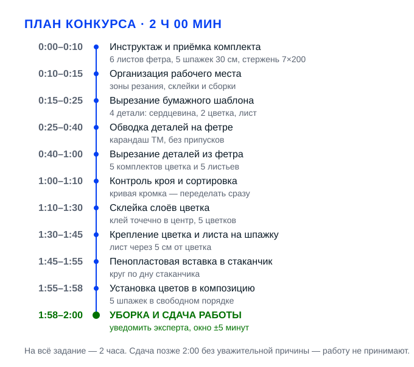
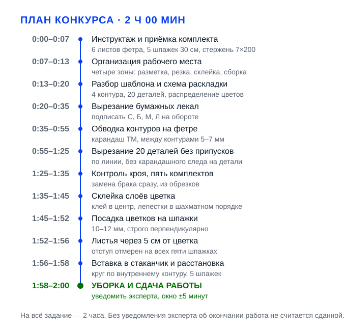
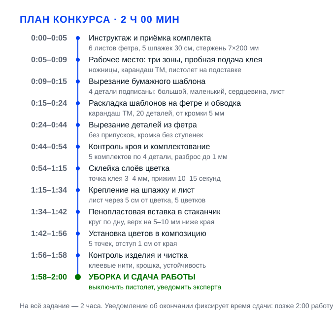

Изготовление изделий из фетра (ФВ)
Задания ниже — официальные файлы «Абилимпикс» (источник: abilympics-russia.ru), разложенные по категориям. Решения написаны по тексту задания, регламенту и критериям оценки; в них указано, что именно проверяет эксперт.
Школьник
14–16 лет, базовый уровень заданияВ официальном файле категории не разделены отдельными разделами — приводим задание целиком; различия по категориям смотрите в таблице модулей.
Пошаговое решение
Задание для школьников одно и целиком укладывается в два часа: из шести листов твердого фетра разных цветов нужно собрать композицию «Цветочный рай» — пять цветков на шпажках длиной 30 см, поставленных в стаканчик с пенопластовой вставкой. Рисовать с нуля не придётся: шаблон цветов и листьев уже нанесён на лист А4, его остаётся аккуратно вырезать, обвести на фетре карандашом ТМ и вырезать ножницами без припусков. Дальше идёт самая ответственная часть — склейка слоёв клеевым пистолетом со стержнем 7×200 мм, крепление листа с отступом около 5 см от цветка и посадка готовых цветов в пенопласт. Оценивают не скорость, а чистоту кроя, аккуратность клеевых швов, ровную посадку цветка на шпажке и общий вид букета, поэтому первые пятнадцать минут разумно потратить на организацию места, а не на ножницы.

Задача 1. Организовать рабочее место и принять материалыЭтап 1 · 0:00–0:15 из 2 часов
До первого разреза стол должен стать понятным: комплект проверен по перечню, клеевой пистолет разогрет и стоит на подставке, ножницы лежат там, где вы их найдёте на ощупь, а листы фетра разложены по цветам. Пятнадцати минут на это хватает с запасом, но именно здесь чаще всего теряется время: участник начинает обводить шаблон, не обнаружив, что одного цвета не хватает, или хватается за горячий пистолет, который ещё не вышел на режим. Организация — это не формальность перед работой, а способ не отвлекаться потом.
Действие 1.1. Принять комплект и подготовить инструмент
Шаг 1.1.1
Выкладываем всё из коробки на стол в один ряд и сверяем с перечнем: шесть листов твердого фетра разных цветов, ножницы, пять шпажек длиной 30 см, простой карандаш ТМ, клеевой пистолет, клеевой стержень 7×200 мм, стаканчик, кусок пенопласта и лист А4 с шаблоном цветов и листьев. Считаем не «на глаз», а поштучно: пять шпажек — пять цветков, значит, и комплектов деталей должно быть пять. Чего не хватает или что пришло мятым, сразу откладываем в сторону и говорим об этом наставнику, не начиная работу.
Приёмка — единственный момент, когда недостачу ещё можно закрыть. По КЗ на всё задание отведено два часа, и если нехватка обнаружится на этапе склейки, добрать материал будет уже нечем: перерывов на «сходить за фетром» задание не предусматривает. Кроме того, спокойная сверка по перечню сразу показывает эксперту, что участник умеет читать задание и планировать работу, а не действует наугад.
Все позиции перечня лежат на столе и пересчитаны: листов фетра шесть, шпажек пять, стержень один и он подходит по диаметру к вашему пистолету. Лист с шаблоном целый, без заломов на контурах, иначе обводка по нему поплывёт. Стаканчик без трещин по кромке и дно ровное.
Самая частая ошибка — начать с ножниц, а фетр посчитать потом: в середине работы выясняется, что листов пять вместо шести и на сердцевины другого цвета просто нет. Вторая ошибка — взять стержень не того диаметра: он либо не входит в канал пистолета, либо болтается и течёт мимо, и весь блок склейки приходится делать заново на остывающем клее.
Наставник обходит места в первые минуты и смотрит именно на разложенный комплект: есть ли все шесть цветов фетра, не потеряна ли шпажка, цел ли шаблон. Разложенный по порядку набор читается сразу, куча в углу — нет.
Шаг 1.1.2
Ставим клеевой пистолет на подставку — обязательно на металлическую или керамическую площадку, а не на фетр и не на бумагу, — вставляем стержень 7×200 мм до упора и включаем. Пока пистолет выходит на режим, он молчит, потом начинает тихо потрескивать; готовность проверяем коротким нажатием на курок над листом ненужной бумаги: клей должен выходить ровной блестящей каплей, а не тянуться ниткой и не идти с усилием. На прогрев уходит от трёх до пяти минут, и это время не стоит тратить впустую — как раз на разбор шаблона.
Клей в этом задании — единственное соединение, швов и ниток нет. Недогретый клей ложится густо, тянется паутиной и не держит: слои цветка расползаются при первом же нажатии. Перегретый — прожигает тонкий фетр насквозь и оставляет тёмное пятно на лицевой стороне, а это уже брак самой детали, которую придётся вырезать заново из остатков.
Клей из сопла идёт ровной струёй без усилия, капля на бумаге блестит и застывает за 10–15 секунд. Сам корпус пистолета горячий, сопло — особенно: проверяем тыльной стороной ладони на расстоянии, а не пальцем. Под пистолетом сухо, лужицы клея нет.
Класть пистолет соплом на стол или на фетр: клей вытекает самотеком, прилипает к листу и уносит с собой верхний слой материала. Вторая ошибка — включать пистолет в последнюю минуту и потом клеить холодным: держится такая склейка до первого касания, а переделывать приходится уже собранный цветок.
Наставник смотрит на организацию рабочего места в целом: стоит ли пистолет устойчиво, не лежит ли провод поперёк стола, убрана ли бумага от сопла. Это часть требований охраны труда из раздела 5 КЗ.
Шаг 1.1.3
Проверяем ножницы: лезвия должны смыкаться по всей длине, ход быть плавным, винт подтянут так, чтобы ножницы не болтались, но и не заедали. Режем контрольную полоску обрезка фетра от кромки до кромки: если материал зажёвывается или рвётся, а не режется, — меняем инструмент или просим подтянуть винт. Карандаш ТМ затачиваем остро, но не как иглу: слишком тонкий грифель царапает фетр и оставляет борозду, слишком толстый даёт линию в миллиметр, по которой потом не попасть в размер.
Фетр — материал ворсистый, и тупые ножницы не столько режут, сколько мнут его: кромка получается лохматой, деталь теряет форму, а на лицевой стороне остаётся вдавленный след. Поскольку вырезаем без припусков, любая неровность кромки — это уже отклонение от шаблона, и на сборке слои перестают совпадать по контуру.
Контрольная полоска режется одним движением, кромка ровная, без «зажёванных» волокон. Линия карандаша на обрезке тонкая, около половины миллиметра, и не продавливает материал. Ножницы не рвут фетр при раскрытии.
Работать ножницами для бумаги по фетру: бумажные лезвия быстро садятся, и к третьему листу кромка начинает рваться. Вторая ошибка — резать кончиками лезвий на весу, тогда линия уходит в сторону на каждом сантиметре и деталь получается перекошенной.
Наблюдает за тем, как участник держит инструмент: ножницы в правой руке, фетр придерживается левой, лезвия не направлены на пальцы. Небезопасный хват отмечается отдельно.
Шаг 1.1.4
Размечаем стол на три зоны, не раздвигая их далеко: слева — листы фетра и бумажный шаблон, в центре — рабочее поле для обводки и резки, справа — место под готовые детали, разложенные по цветам и по комплектам. Пистолет ставим так, чтобы провод не пересекал зону резки и не цеплялся за локоть. Свет направляем на рабочее поле или садимся так, чтобы тень от руки не падала на линию обводки. По КЗ рабочее место участника — 3000×1900 мм с проходом 1,5 м, и этого с запасом хватает на три зоны.
Зоны нужны, чтобы детали не смешивались: сердцевины, большие и маленькие цветки и листья выглядят похоже и отличаются размером, а перепутанный комплект собирается криво. Отдельное место под готовое экономит самое дорогое — время на поиск. Свет важен не меньше: по разделу 4 КЗ освещённость рабочего места должна быть не ниже 300 люкс, потому что при тусклом свете линия карандаша на тёмном фетре почти не видна.
На столе три читаемые зоны, провод пистолета идёт по краю и не мешает, тень от руки не закрывает линию обводки. Обрезки не лежат в зоне готовых деталей. Всё, что нужно в работе, достаётся не вставая и не наклоняясь через стол.
Свалить фетр, шаблон и обрезки в одну кучу: через полчаса в ней невозможно найти маленький цветок нужного цвета, и участник кроит новый — из остатков, которых уже нет. Вторая ошибка — поставить пистолет у самого края стола: задетый провод тянет горячий инструмент на пол.
Наставник оценивает рабочее место визуально в начале и в конце: свободные проходы, устойчивый инструмент, отсутствие вещей на полу — это прямые требования раздела 5 КЗ по охране труда.
Действие 1.2. Разобрать шаблон и спланировать раскладку
Шаг 1.2.1
Берём лист А4 с шаблоном и сначала читаем его целиком, не разрезая: находим и обводим пальцем четыре типа деталей — сердцевину, большой цветок, маленький цветок и лист. В задании прямо сказано, что обводить нужно именно сердцевину, большой и маленький цветок, а лист — зелёным фетром. Проверяем, нет ли на шаблоне дополнительных элементов, которые надо вырезать внутри контура, — от этого зависит порядок резки. Если детали подписаны, переписываем подписи на оборотную сторону листа, чтобы они не потерялись после разрезания.
Порядок «сначала прочитать, потом резать» экономит материал. Разрезанный наугад шаблон теряет ориентацию: непонятно, где верх детали и какая деталь к какому цветку относится, а на пяти комплектах эта путаница обходится в лишние листы фетра, которых ровно шесть. Кроме того, понимание конструкции цветка — три слоя, наложенных друг на друга, — определяет, какие детали должны быть больше и как их потом совмещать.
Вы можете назвать вслух все четыре детали и показать пальцем на листе, какая из них сердцевина, какая большой цветок, какая маленький и какая лист. Ни одна деталь не осталась непонятой: если контур вызывает сомнение, лучше уточнить у наставника сразу, чем вырезать деталь дважды.
Разрезать шаблон по первой попавшейся линии, не разобравшись: куски теряют подписи, и потом сердцевину обводят размером с большой цветок. Исправлять приходится по памяти, и слои цветка перестают совпадать — маленький цветок вылезает за край большого.
Наставник может подойти и попросить назвать детали — это проверка понимания задания, а не памяти. Участник, который путается в шаблоне, обычно теряет время и на обводке.
Шаг 1.2.2
Считаем, сколько деталей каждого вида нужно на пять цветков: по пять сердцевин, по пять больших цветков, по пять маленьких и пять листьев — итого двадцать деталей из фетра, не считая пенопластового круга. Считаем на бумаге или вслух, но обязательно фиксируем результат: пять комплектов по четыре детали. Дальше решаем, каким будет цветовое решение: либо каждый цветок трёхцветный — сердцевина, большой и маленький цветок разных цветов, — либо однотонный, что заданием тоже разрешено.
Комплектность — то, что проверяют в готовом изделии. По КЗ результат — изделие «Цветочный рай» из пяти цветов на шпажках, и если цветков окажется четыре или у одного не будет сердцевины, работа выглядит незаконченной независимо от качества склейки. Заранее посчитанные детали позволяют раскладывать шаблон на фетре с прицелом на конкретное количество, а не «сколько получится».
В плане записано ровно двадцать деталей: 5 сердцевин, 5 больших цветков, 5 маленьких, 5 листьев. Вы понимаете, сколько цветов фетра уйдёт на каждый комплект, и можете назвать цветовую схему: например, две сердцевины жёлтые, три белые, листья только зелёные.
Кроить «по ходу дела», не посчитав: обводится три сердцевины, а потом выясняется, что на четвёртый и пятый цветок нужного цвета уже не осталось. Вторая ошибка — сделать все цветки одного цвета, хотя фетра шесть разных цветов: композиция получается плоской и проигрывает по общему впечатлению.
Наставник смотрит на готовое изделие целиком, и в первую очередь на количество и сочетаемость цветов. Пять разноцветных, но аккуратных цветков читаются лучше, чем пять одинаковых и кривых.
Шаг 1.2.3
Раскладываем бумажные детали на листах фетра, не обводя, — просто прикидываем, как они лягут с минимальными промежутками. Правило простое: крупные детали — к кромке листа, мелкие заполняют промежутки между ними. Между контурами оставляем 5–7 мм: ближе резать неудобно, ножницы начинают цеплять соседнюю деталь. Листья и сердцевины размещаем на зелёном и на самом контрастном листе, а большие и маленькие цветки — на остальных четырёх.
Твердый фетр не тянется и не прощает экономии: две детали, обведённые впритык, при вырезании превращаются в одну с перемычкой, и обе идут в брак. Шесть листов на двадцать деталей — запас небольшой, поэтому раскладка делается один раз и продуманно. Это же планирование позволяет сразу увидеть, хватает ли материала на задуманную цветовую схему.
Все двадцать деталей укладываются на шесть листов с промежутками не меньше 5 мм, и после раскладки видно свободное место хотя бы на одном листе — это резерв на переделку. Если раскладка не помещается, цветовую схему меняем сейчас, а не после кроя.
Обводить сразу, примеряя «на глазок»: крайние детали выходят за кромку листа или упираются в соседние, и при вырезании портится сразу две заготовки. Вторая ошибка — оставить на листе пустоты, а потом обнаружить, что на переделку одной детали материала нет вовсе.
Наставник смотрит на количество обрезков после кроя: аккуратная раскладка даёт узкие полоски, небрежная — крупные куски, из которых можно было вырезать ещё детали.
Задача 2. Вырезать шаблон и перенести контуры на фетрЭтап 2 · 0:15–0:40 из 2 часов
Бумажный шаблон — это эталон, по которому потом проверяют каждую деталь, поэтому его контур должен быть вырезан точно по линии, без «поправок на глаз». Дальше контуры переносятся на фетр карандашом ТМ: линия идёт по изнаночной стороне, тонко, без припусков, потому что припуск здесь не нужен — детали не сшиваются, а склеиваются, и любой запас превращается в несовпадение слоёв. Двадцать пять минут на этот этап достаточно, если не переделывать обводку по три раза.
Действие 2.1. Вырезать бумажный шаблон
Шаг 2.1.1
Режем лист А4 по контурам крупных деталей — больших цветков: ножницы ведём длинными движениями, не смыкая лезвия до конца на поворотах, а поворачивая сам лист левой рукой. На закруглениях делаем несколько коротких надсечек к линии и только потом срезаем лишнее — так лепесток получается округлым, без гранёных углов. Режем по внешней стороне линии, чтобы карандашный контур остался на детали, а не на обрезке.
Контур шаблона задаёт размер всех последующих деталей. Если срезать линию «на глаз», бумажный эталон уменьшится на полмиллиметра, и это повторится на всех пяти комплектах — цветки выйдут мельче задуманного, а слои перестанут перекрывать друг друга. Линия, оставленная на детали, позволяет потом проверить, попали ли вы в размер.
Деталь лежит на столе и повторяет форму на шаблоне: лепестки округлые, симметричные, без прямых срезов на месте закруглений. Карандашная линия видна по всему периметру, нигде не срезана. Если контур срезан, деталь перевырезаем сразу: шаблон ещё цел, а фетр ещё не тронут.
Резать «по прямой» через закругление и потом подправлять: угол срезается, лепесток становится угловатым, и на фетре эта угловатость повторяется пять раз. Вторая ошибка — резать по внутренней стороне линии, тогда каждая следующая деталь меньше предыдущей.
Наставник сравнивает бумажные детали с листом шаблона: форма должна читаться как та же самая, только вырезанная. Грубые срезы на закруглениях видны сразу.
Шаг 2.1.2
Отдельно вырезаем мелкие детали — сердцевины и маленькие цветки. Их удобнее резать, положив лист на стол и работая кончиками лезвий короткими щелчками, с поворотом листа, а не ножниц. Если на шаблоне есть внутренние метки или отверстия, прорезаем их, предварительно сложив деталь пополам и сделав прокол ножницами в центре, а не прорезая от края. Ножницы держим почти вертикально, чтобы лезвие не задевало соседний контур.
Мелкая деталь — самая уязвимая: её легко потерять, смять или вырезать несимметричной, и на готовом цветке именно сердцевина видна как центр композиции. Прокол из центра вместо прорези от края сохраняет контур целым: разрез от кромки пришлось бы потом склеивать или маскировать.
Сердцевины одинакового размера между собой, маленькие цветки тоже: наложите их друг на друга и проверьте, совпадают ли контуры. Внутренние отверстия, если они есть, ровные, без рваных краёв. Разложите детали в ряд от большой к маленькой: размер должен убывать ровно, без скачков.
Прорезать отверстие от края «чтобы быстрее»: на фетре эта прорезь расходится и видна на лицевой стороне как щель. Вторая ошибка — резать мелкие детали теми же длинными движениями: лезвие срезает сразу два лепестка и деталь идёт в брак.
Наставник смотрит на разложенные бумажные детали: их должно быть четыре вида, и каждый — одинаковый по размеру. Разнокалиберные сердцевины означают, что шаблон резали небрежно.
Шаг 2.1.3
Каждую вырезанную бумажную деталь подписываем с изнанки простым карандашом: «сердцевина», «большой», «маленький», «лист». Подписи делаем у края, чтобы они не мешали обводке, и складываем детали в один конверт или под стаканчик — так они не разлетятся. Если бумага тонкая и детали закручиваются, слегка проглаживаем их обратной стороной ножниц от центра к краям.
Двадцать деталей из фетра вырезаются по четырём бумажным, и перепутать большой цветок с маленьким проще, чем кажется: разница в размере небольшая, а фетр разных цветов отвлекает внимание. Подписанные детали снимают эту путаницу полностью. Проглаживание нужно потому, что закрученный шаблон при обводке даёт смещённый контур — деталь уезжает под карандашом.
Четыре бумажные детали подписаны и лежат вместе, не смятые, контуры плоские. Вы можете, не глядя на подпись, отличить большой цветок от маленького по размеру — но подпись всё равно есть. Контуры не смяты, подписи читаются, ни одна деталь не закручена винтом.
Оставить шаблоны россыпью на столе: ветер от движения, обрезки и локти быстро превращают их в бесформенные клочки, и обводку приходится делать по памяти. Вторая ошибка — подписать детали поверх контура, тогда линия обводки получается двойной.
Наставник проверяет, сохранился ли шаблон к концу этапа: мятые и потерянные бумажные детали — признак того, что дальше пойдёт импровизация вместо работы по заданию.
Действие 2.2. Обвести контуры на фетре
Шаг 2.2.1
Берём лист фетра и определяем, где лицевая сторона: у твердого фетра она глаже и ворс лежит ровнее, изнанка чуть более матовая и пушистая. Кладём лист изнанкой вверх — обводим и режем именно на ней, чтобы карандашная линия и следы от ножниц остались с закрытой стороны. Заодно проверяем, нет ли на листе заломов, пятен и участков с примятым ворсом: такие места обходим, они не расправятся.
Лицевая сторона — та, которую видно на готовом изделии, и все слои цветка переворачиваются на неё уже после вырезания, как сказано в описании операций. Если обводить на лицевой стороне, карандашные контуры и вдавленные следы останутся на виду, и смыть их с фетра нельзя — он не стирается. Пятна и заломы на лицевой стороне потом ничем не закрыть: сердцевина закрывает только центр.
Все контуры нанесены на матовую, более пушистую сторону листа. На лицевой стороне нет ни одной карандашной линии. Отмеченные дефектные участки обойдены — на них деталей нет. Если залом всё же попал под контур, сдвигаем деталь на свободное место, пока лист не разрезан.
Обводить на той стороне, которая лежит сверху и кажется красивее: на готовом цветке линия проступает по краю лепестка и выглядит как грязь. Вторая ошибка — обводить поверх залома, считая, что «разгладится»: на твердом фетре залом остаётся навсегда.
Наставник переворачивает готовые детали и смотрит на лицевую сторону: чисто ли, нет ли штрихов карандаша и вдавленных полос. Отдельно отмечает, не осталось ли карандашных штрихов на лицевой стороне деталей.
Шаг 2.2.2
Кладём бумажную деталь на фетр и прижимаем её ладонью левой руки, а лучше — придерживаем двумя пальцами у края, чтобы она не сдвинулась. Карандаш держим почти вертикально, под углом около 90 градусов к листу: наклонённый грифель уходит под бумагу и сдвигает контур на миллиметр-полтора. Обводим одной непрерывной линией, ведя карандаш по самому краю бумаги, а не отступая от него. Начинаем и заканчиваем в одной точке, чтобы контур замкнулся.
Припуски в этом задании не даются сознательно: детали склеиваются внахлёст, и лишний миллиметр по краю торчит из-под верхнего слоя или, наоборот, не закрывает нижний. Наклон карандаша — главная причина того, что вырезанная деталь оказывается на 1–2 мм больше шаблона, причём неравномерно: с одной стороны больше, с другой меньше.
Контур замкнут, линия тонкая и непрерывная, повторяет форму бумаги без ступенек. Разница между бумажной деталью и обведённым контуром не больше половины миллиметра: проверяется наложением шаблона на фетр — он должен попадать внутрь линии по всему периметру.
Обводить, сдвигая бумагу по ходу: контур получается из двух несовпадающих половин, и деталь выходит кособокой. Вторая ошибка — вести карандаш с сильным нажимом: на фетре остаётся вдавленная борозда, которая не исчезает и видна на лицевой стороне.
Наставник смотрит на обводку в процессе: прижата ли бумага, вертикален ли карандаш, замкнут ли контур. Это тот навык, который отличает аккуратную работу от «примерно так».
Шаг 2.2.3
Распределяем цвета до обводки, а не после: сердцевины — на самый контрастный лист, например жёлтый или белый; листья — только на зелёный фетр, как сказано в задании; большие и маленькие цветки — на остальные четыре листа так, чтобы внутри одного цветка слои были разных цветов. Продумываем пять сочетаний заранее: например, большой красный и маленький белый, большой синий и маленький жёлтый — и запоминаем, какая пара к какому цветку.
Заданием разрешено и одноцветное решение, и сочетание разных цветов на одном цветке, но именно сочетание даёт тот самый «цветочный рай», ради которого задание и названо. Если цвета выбирать по ходу обводки, к пятому цветку останутся только обрезки двух оттенков, и композиция получится пёстрой не по замыслу, а по остаточному принципу.
Пять цветков различимы по цвету, но внутри каждого виден контраст между слоями. Листья исключительно зелёные, сердцевины — одного-двух контрастных цветов. Вы можете перечислить пары слоёв, не заглядывая в записи.
Сделать все сердцевины одного цвета и все цветки из одного листа: изделие выглядит плоско, а в задании прямо оговорена возможность подобрать разные цвета на один цветок. Вторая ошибка — пустить лист на красный фетр: зелёного листа всего один, и его не хватит на пять листьев.
Наставник оценивает композицию целиком в конце, но обращает внимание на цветовое решение уже при обводке: видно, продумано оно или случайно. Если цвета подобраны случайно, это видно уже на обводке: остатки листов говорят сами за себя.
Шаг 2.2.4
Пройдите по каждому обведённому контуру пальцем и глазами: линия должна быть одна, а не две рядом; на закруглениях — повторять дугу, а не срезать её; в местах стыка лепестков — сходиться в точку. Проверьте, что между контурами соседних деталей осталось не меньше 5 мм фетра, иначе при резке ножницы будут цеплять соседнюю деталь. Всего контуров должно быть двадцать пять: двадцать деталей плюс круг под стаканчик, который обводится позже.
Проверка перед резкой стоит двух минут, а исправление после — нового листа фетра и десяти минут. Двойная линия означает, что шаблон сдвинулся, и резать придётся по средней, на глаз — то есть уже без эталона. Слишком близкие контуры — гарантированный брак при вырезании: детали соединятся перемычкой.
На каждом листе контуры одиночные и замкнутые, промежутки между ними не меньше 5 мм. Общее число обведённых деталей совпадает с планом: 5 сердцевин, 5 больших, 5 маленьких, 5 листьев. Последний лист проверяем дважды — именно на нём чаще всего остаётся незамеченный контур.
Начать резать, не проверив последний лист: именно на нём обычно обнаруживается незамкнутый контур или деталь, обведённая дважды. Вторая ошибка — оставить на листе промежуток в 1–2 мм, «чтобы больше влезло»: при резке обе детали рвутся по кромке.
Наставник может пересчитать обведённые детали до начала резки — это ключевая точка контроля этапа: если контуров меньше двадцати, дальше работа идёт с нехваткой.
Задача 3. Вырезать детали из фетра и проверить кройЭтап 3 · 0:40–1:10 из 2 часов
Двадцать минут резки — тот участок, где чаще всего появляется брак, который потом никак не исправить: склеенный цветок уже не подрежешь. Твердый фетр режется ножницами чисто, если вести лезвия по самой линии и не тянуть материал, но он не прощает спешки: кромка лохматится, лепестки выходят разного размера, а слои перестают совпадать. Поэтому резка идёт партиями по одному комплекту с проверкой каждого, а не «всё сразу, потом посмотрим».
Действие 3.1. Резать детали по контуру без припусков
Шаг 3.1.1
Берём лист с обведёнными контурами, кладём на стол и режем серединой лезвий, а не кончиками: кончиками линия уводит в сторону, середина даёт ровный рез. Ножницы держим вертикально к плоскости стола, фетр приподнимаем левой рукой на пару сантиметров — так лезвия режут, а не мнут материал о стол. Ведём разрез по карандашной линии так, чтобы линия оставалась на обрезке, а не на детали: тогда деталь получается точно по шаблону, без припуска.
Задание требует вырезать детали без припусков, и это не формальность: слои цветка накладываются друг на друга, и припуск у нижнего слоя выступает из-под верхнего неровной бахромой. Кроме того, карандашная линия на кромке готовой детали видна как тёмный контур, а на светлом фетре она читается особенно сильно — деталь выглядит небрежной.
Кромка детали ровная, без «ступенек» и зажёванных волокон. Наложение бумажного шаблона показывает, что деталь не больше его по контуру. Карандашной линии на самой детали нет — она осталась на обрезке.
Резать точно по линии, оставляя её на детали: тогда все размеры «плюс миллиметр», и на сборке нижний слой торчит из-под верхнего. Вторая ошибка — держать ножницы наклонно, как при резке бумаги на весу: рез уходит вбок, и лепесток получается с косой кромкой.
Наставник смотрит на кромку вблизи и на то, как участник держит инструмент. Ровная кромка — первое, что отличает аккуратный крой. Смотрит и на то, доводит ли участник рез до конца или отрывает недрезанный участок.
Шаг 3.1.2
Длинные участки — основание лепестка, лист — режем одним движением от начала до конца, не останавливаясь на середине: остановка даёт зазубрину. На поворотах не доворачиваем ножницы, а поворачиваем сам лист левой рукой, держа ножницы неподвижно и продолжая рез. Дойдя до острого внутреннего угла между лепестками, выходим из него, а не пытаемся развернуться внутри: угол прорезается двумя движениями — к вершине и от вершины.
Фетр — нетканый материал, и при остановке лезвия волокна сминаются: на кромке появляется характерная «закусанная» точка, которая при разглаживании превращается в волну. Поворот листа вместо поворота ножниц сохраняет угол реза постоянным, поэтому кромка выходит гладкой по всему периметру, а не только на прямых участках.
Проведите пальцем по кромке: она одинаковая на прямых и на закруглениях, без зазубрин и волн. Лепестки симметричны: сложите деталь пополам — половинки должны совпасть. На закруглениях нет граней: лепесток должен читаться как дуга, а не как многоугольник.
Проворачивать ножницы в фетре, не вынимая лезвий: материал растягивается, и на закруглении появляется «хвост». Вторая ошибка — прорезать внутренний угол одним движением с разворотом: лезвие режет соседний лепесток и деталь идёт в брак.
Наставник смотрит на симметрию лепестков: цветок должен читаться как цветок, а не как многоугольник. Это заметно и на глаз, и на ощупь. Особенно внимательно — на мелких лепестках, где ошибка кроя заметнее всего.
Шаг 3.1.3
Мелкие детали — сердцевины и маленькие цветки — режем последними, когда крупные уже готовы, и на отдельной чистой части стола, чтобы не потерять. Деталь держим двумя пальцами у самого края, режем короткими щелчками, каждый раз смыкая лезвия до конца. Если лепесток мелкий и пальцы мешают, поворачиваем ножницы и режем от себя, но никогда не направляем лезвия на подушечки пальцев.
Мелкая деталь на цветке видна как центр: именно по ней глаз читает аккуратность всей работы. Потерянная сердцевина означает, что цветок придётся собирать без центра или кроить новую из остатков, а остатки после двадцати деталей — узкие полосы. Короткие щелчки вместо длинного движения дают контроль на каждом миллиметре.
Все пять сердцевин одинаковы по размеру и форме, у маленьких цветков лепестки не срезаны. На столе после резки не осталось недокроенных деталей — только обрезки. Проверьте на просвет: у всех сердцевин должен быть одинаковый диаметр.
Резать мелкие детали «на весу», держа их на ладони: лезвие идёт по касательной к пальцам, а деталь пружинит и получается с рваной кромкой. Вторая ошибка — откладывать мелочь «на потом» и в спешке в конце резать её из обрезков неподходящего цвета.
Наставник обращает внимание на безопасность: пальцы не под лезвиями, ножницы передаются кольцами вперёд. Нарушение фиксируется по разделу 5 КЗ. Отмечает и то, как участник обращается с ножницами рядом с пальцами левой руки.
Шаг 3.1.4
Не тянем фетр при резке: если материал натянут, кромка после снятия усилия стягивается и идёт волной. Держим лист свободно, поддерживая его левой рукой снизу, и даём ножницам резать самим — усилия должно хватать только на смыкание лезвий. Закончив деталь, не обрываем последние волокна, а дорезаем их до конца: обрыв оставляет на кромке пушистый хвостик, который потом виден на лицевой стороне.
Волна по кромке и пушистые хвосты — два признака, по которым сразу видно, что деталь вырезана в спешке. На твердом фетре ворс почти не осыпается, поэтому аккуратная кромка держится долго и не требует обработки; испорченную кромку исправить нечем — только вырезать заново, и материала на это остаётся всё меньше.
Кромка лежит на столе ровно, без волны, ворс не торчит клочьями. Деталь не деформирована: если положить её на бумажный шаблон, она не топорщится по краям. Проведите деталью по столу: она должна лежать плоско, без качания на одном крае.
Тянуть фетр, чтобы рез шёл быстрее: кромка стягивается, и на цветке лепестки заворачиваются внутрь или наружу, хотя задумывались плоскими. Вторая ошибка — отрывать недрезанный участок: кромка рвётся по волокну, и деталь теряет форму именно там, где это заметнее всего.
Наставник проверяет плоскостность деталей: приклеенные к шпажке кривые лепестки торчат в стороны и портят силуэт букета. Смотрит на кромку на свет: волна видна как тень, идущая вдоль края детали.
Действие 3.2. Проверить крой и разложить комплекты
Шаг 3.2.1
Каждую вырезанную деталь накладываем на бумажный шаблон и смотрим на просвет или просто по контуру: деталь должна полностью закрывать шаблон и не выходить за него больше чем на полмиллиметра. Проверяем не все двадцать подряд, а партиями по комплекту: сердцевина, большой, маленький, лист. Размеры внутри комплекта должны соотноситься правильно: маленький цветок меньше большого примерно на треть, сердцевина — самая мелкая.
Наложение на шаблон — единственный объективный способ проверить крой, потому что на глаз разница в два миллиметра не видна, а на готовом цветке она означает, что верхний слой проваливается в нижний или, наоборот, закрывает его целиком. Проверка партиями позволяет поймать системную ошибку — например, все детали вырезаны чуть больше — до того, как испорчены все листы.
Все детали попадают в контур шаблона с допуском до половины миллиметра. Комплект читается: видно, какая деталь ложится в центр, какая сверху, какая снизу. Ни одна деталь не вырезана по чужому контуру.
Проверять «на глаз», не накладывая шаблон: деталь, вырезанная по контуру соседнего размера, обнаруживается только на сборке, когда все двадцать уже готовы. Вторая ошибка — найти одну неточную деталь и не проверить остальные: ошибка почти всегда повторяется на всей партии.
Наставник может выборочно наложить шаблон на готовые детали — это быстрая и наглядная проверка качества кроя. Ему достаточно двух-трёх деталей, чтобы понять, как вырезана вся партия.
Шаг 3.2.2
Раскладываем готовые детали на пять комплектов, каждый — стопкой: снизу большой цветок, на нём маленький, сверху сердцевина, рядом лист. Стопки ставим в ряд слева направо в том порядке, в котором будем собирать, и накрываем листом бумаги или отодвигаем к дальнему краю стола, чтобы не смахнуть. Обрезки убираем сразу в отдельную кучу, а не оставляем между деталями.
Пять комплектов вместо кучи деталей — это и есть подготовка к следующему этапу: склейка пойдёт конвейером, и на каждый цветок уйдёт минуты, а не пять. Когда детали лежат стопками, видно нехватку: если какая-то стопка тоньше остальных, значит, деталь потерялась или вырезана не была. Обрезки в общей куче — главная причина, по которой деталь считают готовой и не находят её на сборке.
Пять стопок по четыре детали, всего двадцать. Каждая стопка собирается в готовый цветок без поиска. Обрезки лежат отдельно и не мешают. Пересчитайте стопки вслух: пять по четыре — это двадцать, и ни одной лишней.
Оставить детали россыпью: через десять минут непонятно, каких деталей пять, а каких четыре. Вторая ошибка — складывать комплекты в стопку из двадцати деталей: разбирать её придётся на этапе склейки, когда клей уже горячий.
Наставник подходит и считает комплекты — это точка, где видно, будет ли изделие полным: пять цветков по заданию. Его интересует, лежат ли комплекты отдельно или всё смешано в одну общую кучу.
Шаг 3.2.3
Найденный брак — кривую кромку, деталь не по размеру, надрыв — не пытаемся замаскировать, а сразу кроим заново из резерва, который мы оставили при раскладке. Бракованную деталь откладываем в отдельную сторону, чтобы она случайно не попала в стопку. Если брак системный и повторяется на всех деталях одного типа, меняем приём: чаще всего причина в наклоне ножниц или в сдвинутом шаблоне.
Склеенный цветок с кривой кромкой уже не исправить: клей схватывается за 10–15 секунд, а оторвать слой от фетра, не повредив ворс, невозможно. Переделка на этапе кроя занимает две минуты и один небольшой обрезок, переделка на этапе сборки — пять минут и целый цветок. Отдельная стопка брака нужна, чтобы он не вернулся в работу.
В работе ноль деталей с надрывами и кривой кромкой. Резерв фетра уменьшился, но не исчерпан: на переделку одной-двух деталей материала хватает. Бракованная стопка лежит отдельно и не смешивается с рабочими комплектами.
Замаскировать брак — подрезать кривой край «на глаз» и пустить деталь в дело: на цветке это видно как перекошенный лепесток, и вся аккуратность работы пропадает. Вторая ошибка — оставлять бракованные детали рядом с хорошими: их путают и склеивают именно их.
Наставник смотрит, как участник относится к собственному браку. Способность переделать деталь сразу, а не тянуть до сборки, — часть оценки качества. Отмечает, сколько деталей ушло в брак: много брака — значит, крой не контролировался.
Задача 4. Склеить цветок и закрепить его на шпажкеЭтап 4 · 1:10–1:45 из 2 часов
Самый ответственный отрезок: тридцать пять минут на пять цветков, то есть примерно семь минут на каждый, включая остывание клея. Здесь слои встают друг на друга, сюда же крепится шпажка длиной 30 см, а лист — с отступом около 5 см от цветка. Клей схватывается за 10–15 секунд, поэтому исправлять приходится не «подвинув», а переделывая: слой, приклеенный со сдвигом, отрывается вместе с ворсом. Работа идёт по одному цветку от начала до конца, а не пятью параллельно.
Действие 4.1. Склеить слои цветка
Шаг 4.1.1
Берём комплект и переворачиваем все четыре детали на лицевую сторону — ту, что была снизу при обводке. Выкладываем их друг на друга по размеру: снизу большой цветок, на него маленький, сверху сердцевина; лист пока откладываем в сторону, он пойдёт на шпажку. Слои выравниваем по центру так, чтобы лепестки нижнего слоя выглядывали из-под верхнего равномерно со всех сторон. Проверяем на просвет, что ни один лепесток не загнут и не подвёрнут.
Ровная укладка слоёв — это то, что видно на готовом изделии в первую очередь. Если центры не совпадают, цветок выглядит перекошенным, а торчащий с одной стороны лепесток нижнего слоя читается как брак кроя, хотя крой был точным. Просвет помогает увидеть подвёрнутый лепесток, который на столе почти не заметен, а после приклеивания уже не расправить.
Центры всех трёх деталей совпадают: наложите сверху сердцевину и проверьте, что расстояние до края маленького цветка одинаково по всему периметру. Лепестки лежат плоско, не заломлены. Проверьте ещё раз после прижатия: слои не должны разъехаться в стороны.
Собирать слои «как получится» и выравнивать уже после нанесения клея: клей схватывает за секунды, и сдвинуть слой можно только вместе с ворсом. Вторая ошибка — оставить подвёрнутый лепесток, рассчитывая, что он расправится под весом верхнего слоя.
Наставник смотрит на симметрию готового цветка с расстояния вытянутой руки: смещение центров видно сразу, даже если по отдельности детали идеальны. Его взгляд идёт от центра цветка к краю — так смещение видно лучше всего.
Шаг 4.1.2
Наносим клей точечно в центр нижнего слоя: одно нажатие на курок, капля размером примерно с горошину, не больше. Каплю ставим строго в геометрический центр, а не по краю и не кольцом по периметру — лепестки должны оставаться свободными. Сразу же, пока клей горячий, кладём сверху маленький цветок, прижимаем ладонью через чистый лист бумаги и держим 10–15 секунд, не сдвигая. Затем тем же способом сажаем сердцевину на маленький цветок.
Клей по краю лепестка — самая частая и самая заметная ошибка: он выступает на лицевую сторону блестящей полосой, притягивает ворсинки и портит вид. Кроме того, клей по периметру делает цветок жёстким и плоским, теряется объём, ради которого слои и накладываются. Точечное пятно в центре держит не хуже, потому что нагрузка на цветок — только вес верхних слоёв.
Клей не виден по краю ни с лицевой, ни с изнаночной стороны. Слои держатся: при лёгком потягивании за лепесток верхний слой не отходит. Пятно клея закрыто сверху следующим слоем. Проведите пальцем по краю лепестка: клей не должен чувствоваться на кромке.
Наносить клей полосой или крестом «чтобы крепче»: излишки вылезают по краю, и убрать их невозможно — клей уже в волокнах. Вторая ошибка — нажать на курок два-три раза, капля получается слишком большая и расползается под слоем, деформируя лепесток.
Наставник осматривает цветок с обеих сторон: лицевая должна быть чистой. Клеевые следы — самый частый повод снизить оценку за аккуратность. Особенно на светлом фетре, где любая клякса читается как тень.
Шаг 4.1.3
Прижимаем слои ровно, всей ладонью, без сдвига в сторону, и держим 10–15 секунд — на твердом фетре клей остывает быстро, но при тонком слое ему нужно время, чтобы схватиться по всей площади. Отпускаем и сразу проверяем: если слой «поехал», аккуратно возвращаем его на место, пока клей тёплый. Полностью остывший цветок откладываем на край стола, не бросая в общую кучу, чтобы не помять ещё мягкие слои.
Выдержка — то, что чаще всего пропускают: кажется, что клей уже схватился, а при следующей операции слой сдвигается на миллиметр-два, и на цветке появляется «ступенька». Тёплый клей ещё позволяет поправить положение, остывший — нет. Отдельное место под готовые цветки нужно, потому что горячий клей под весом наложенных деталей может отойти.
Через минуту после склейки слои не смещаются при нажатии пальцем. Край верхнего слоя идёт параллельно нижнему по всему периметру, без ступеньки. Клеевых нитей на столе и на детали нет. Через минуту повторите проверку: если слой сдвинулся, значит, выдержки не хватило.
Отпустить слои сразу после нажатия и заняться следующим цветком: клей не успевает схватиться, слой съезжает, и выправить его уже нельзя, не отрывая. Вторая ошибка — проверять прочность, дёргая за лепесток: ворс отходит от основы, и на лицевой стороне остаётся проплешина.
Наставник смотрит на пять готовых цветков в ряд: одинаковая ли толщина, нет ли перекосов. Разнокалиберные и кособокие цветки читаются как нестабильное качество.
Действие 4.2. Приклеить цветок и лист на шпажку
Шаг 4.2.1
Берём шпажку длиной 30 см, проверяем её на ощупь: нет ли заусенцев и расщепов, ровная ли она. Определяем, с какого конца будем крепить цветок: сверху оставляем тупой конец, если он ровнее, а острый уходит в пенопласт. Мысленно отмеряем на шпажке две точки: место цветка и место листа — примерно 5 см ниже цветка. Верх шпажки, который войдёт в цветок, слегка прокатываем между пальцами, чтобы убрать занозы, но не заостряем.
Шпажка — деревянная, и заусенец на ней цепляет фетр и мешает слоям сесть плотно. Кроме того, расщеплённая шпажка ломается при установке в пенопласт, и цветок остаётся без стебля, а запасных шпажек ровно пять. Разметка двух точек заранее нужна, чтобы лист не приклеился вплотную к цветку: по заданию отступ — примерно 5 см.
Шпажка ровная, без заусенцев, длиной 30 см. Вы можете показать пальцем, где будет цветок и где лист, и расстояние между метками примерно 5 см. Заусенец проверяется пальцем через бумагу по всей длине шпажки.
Брать шпажку, не глядя: расщеп и заусенец обнаруживаются, когда цветок уже приклеен и снять его невозможно. Вторая ошибка — крепить цветок на острый конец: острие протыкает слои и выходит на лицевую сторону сердцевины.
Наставник проверяет шпажки до склейки: сколотые и кривые откладываются. Кривая шпажка в готовом букете торчит в сторону. Кривую шпажку видно сразу: цветок на ней стоит с наклоном в сторону.
Шаг 4.2.2
Наносим каплю клея на торец шпажки и чуть ниже — на 1 см по длине, затем вводим шпажку в центр цветка между нижним и средним слоями, доводим до сердцевины и прижимаем. Держим вертикально 15 секунд, не проворачивая: шпажка должна стоять перпендикулярно плоскости цветка. Если цветок собран из трёх слоёв, клей распределяем так, чтобы он захватил все три по центру: капля на торце плюс капля на срезе между слоями.
Клей на торце — единственное, что удерживает цветок на весу: в пенопласт шпажка входит без опоры, и вся нагрузка приходится на место склейки. Вертикальное положение проверяется потому, что наклонённый цветок в букете смотрится как упавший. Капля на срезе между слоями нужна, чтобы слои не расходились при покачивании.
Шпажка стоит перпендикулярно цветку: поставьте его на стол цветком вниз — шпажка должна подниматься строго вверх. При лёгком покачивании за шпажку цветок не отходит. Клей не выступил на лицевую сторону сердцевины.
Наносить клей только на торец шпажки и не захватывать слои: цветок держится на одной точке и проворачивается вокруг стебля. Вторая ошибка — вводить шпажку до упора в сердцевину и протыкать её: на лицевой стороне появляется бугорок и след клея.
Наставник покачивает готовый цветок за шпажку: соединение должно держать без люфта. Проворачивающийся цветок — прямой признак недостаточного клея. Проверяет и то, не осталось ли клея на самой шпажке — он виден как блестящее кольцо.
Шаг 4.2.3
Отмеряем на шпажке 5 см вниз от основания цветка и приклеиваем лист: каплю клея ставим на шпажку, прикладываем лист основанием к шпажке под небольшим углом вверх и прижимаем пальцами через бумагу на 10 секунд. Лист должен смотреть в ту же сторону, что и лепестки, а не поперёк. Если лист крупный, клей наносим двумя точками — у основания и на треть длины листа вдоль шпажки.
Отступ 5 см задан в описании операций, и он не случаен: у самого цветка лист сливается с лепестками и не читается, а ниже он образует второй ярус композиции. Одна точка клея для крупного листа мало — он начинает отходить от шпажки и повисать, а поправить это на готовом букете уже нечем.
Расстояние от основания цветка до листа около 5 см — проверяется линейкой или по меткам на шпажке. Лист держится: при лёгком нажатии не провисает и не поворачивается вокруг шпажки. Он смотрит в ту же сторону, что и лепестки.
Клеить лист вплотную к цветку: ярусы сливаются, и лист выглядит как лишний лепесток. Вторая ошибка — ставить лист поперёк шпажки: на готовом букете половина листьев смотрит в одну сторону, половина в другую, и композиция рассыпается.
Наставник измеряет отступ выборочно: 5 см — ориентир из задания, и заметное отклонение фиксируется как невыполнение операции. Отступ он измеряет на одном-двух цветках и сравнивает с остальными.
Шаг 4.2.4
Повторяем весь цикл ещё четыре раза — всего пять цветков, как требует задание. Каждый следующий делаем по той же схеме: перевернуть детали, выровнять центры, точка клея, выдержка, шпажка, лист через 5 см. Готовые цветы ставим в стаканчик или кладём на край стола шпажкой в одну сторону, чтобы не помять лепестки. На пятом цветке сверяем его с первым: они должны быть одинаковыми по размеру и посадке.
Пять одинаковых цветков — это и есть результат задания; четыре или пять разнокалиберных выглядят как незаконченная работа. Одинаковая схема на всех цветках нужна потому, что при работе без единой схемы к третьему цветку участник начинает экономить на клее и выдержке, и именно эти цветки потом отваливаются. Сверка с первым ловит накопленное отклонение.
В работе пять цветков на шпажках, все с листьями, отступ у всех около 5 см. Высота цветков одинаковая, если поставить их рядом. Ни один цветок не проворачивается и не наклоняется. Разложите цветы в ряд: основания цветков должны лежать на одной линии.
Спешить к концу и на последних цветках клеить «на один раз»: именно они разваливаются при установке в пенопласт. Вторая ошибка — складывать готовые цветы в кучу: лепестки мнутся, и восстановить их нельзя.
Наставник смотрит на партию целиком: пять цветков должны читаться как серия, а не как пять разных проб. Пять цветков он оценивает и по отдельности, и как серию.
Действие 4.3. Довести цветки до одного вида
Шаг 4.3.1
Убираем клеевые следы: тонкие нити снимаем пальцем, потянув их в сторону, а не вверх, застывшие капли у основания цветка срезаем кончиком ножниц плашмя, не задевая ворс. Проверяем место стыка шпажки и цветка — там чаще всего остаётся наплыв. Если клей всё же выступил на лицевую сторону, аккуратно срезаем его остриём ножниц, держа лезвие почти параллельно поверхности.
Клеевые нити и наплывы — первое, что замечают при осмотре, даже если сам цветок собран идеально. Тянуть нить в сторону нужно потому, что при вытягивании вверх она вырывает волокна фетра и оставляет на лицевой стороне ямку. Срез плашмя не задевает ворс, а срез «под углом» выхватывает клочок материала.
Лицевая сторона чистая, без блестящих следов и нитей. Место входа шпажки закрыто сердцевиной. На изнанке наплыв не мешает цветку лежать плоско. Проверьте под углом к свету: нити и наплывы видны как блестящие штрихи.
Соскабливать клей ножом или ногтем: ворс снимается вместе с клеем, и на цветке появляется проплешина, которую уже ничем не закрыть. Вторая ошибка — оставить нить «она тонкая, не видно»: на белом фетре нить видна как тёмная полоса.
Наставник осматривает лицевую сторону каждого цветка на расстоянии 30–40 см — именно с этого расстояния оценивают изделие целиком. Осматривает каждый цветок в руках, поворачивая его к источнику света.
Шаг 4.3.2
Ставим все пять цветов рядом и смотрим на них как на серию: одинаковая ли высота посадки цветка на шпажке, не наклонены ли они, совпадает ли размер листьев и их положение. Если один цветок сидит ниже остальных, аккуратно подрезаем шпажку снизу, а не сверху — верх уже занят склейкой. Разнообразие цветов при этом сохраняем: разные сочетания слоёв — это замысел, а разная высота — дефект.
Композиция в стаканчике будет оцениваться целиком, и разнобой по высоте читается как небрежность: цветы торчат на разных уровнях, а листья образуют хаос. Подрезать шпажку снизу — единственный безопасный способ выровнять высоту, потому что верхняя часть уже склеена и любое вмешательство там разрушает соединение.
Пять цветов, поставленных рядом на стол, дают ровную линию цветков по высоте с разбросом не больше 1 см. Листья расположены на одном уровне. При этом цветовые сочетания разные. Поставьте цветы шпажками вниз и сравните линию цветков на глаз.
Подрезать шпажку сверху, чтобы выровнять цветок: срез разрушает склейку, и цветок остаётся без стебля. Вторая ошибка — выравнивать всё под линейку и получить пять абсолютно одинаковых цветков: задание допускает свободный порядок, и мёртвая симметрия выглядит хуже живой композиции.
Наставник смотрит на серию как на композицию: ровная высота плюс разумное разнообразие цветов — то, что ожидается от изделия «Цветочный рай». Смотрит издалека, прищурившись: разнобой по высоте виден именно так.
Шаг 4.3.3
Проверяем каждое соединение на прочность до установки в пенопласт: берём цветок за шпажку и слегка покачиваем из стороны в сторону, но не тянем вниз. Держит — откладываем в сторону готовых. Люфтит — добавляем каплю клея у основания и держим 15 секунд. Листья проверяем так же: они должны держаться на шпажке, а не болтаться вокруг неё. Проверяем по одному, начиная с первого сделанного цветка.
Проверка до установки, а не после, экономит переделку: в пенопласте шпажка держится за счёт трения, и если цветок слабо сидит на стебле, при установке он проворачивается и смотрит в случайную сторону. Добавить клей на этом этапе просто, после установки — почти невозможно, потому что пистолет придётся подносить к собранной композиции.
Все пять цветков выдерживают покачивание без люфта и без скрипа. Листья не проворачиваются вокруг шпажки. Следов клея на шпажке нет. Особенно внимательно — на цветке, который делали последним: он собран в спешке.
Проверять прочность, потянув цветок вниз: слой отходит вместе с ворсом, и цветок остаётся с проплешиной. Вторая ошибка — не проверять вовсе и узнать о слабом соединении на этапе установки, когда исправлять уже нечем.
Наставник проверяет соединения выборочно — обычно на одном цветке, и по нему видно, как сделаны остальные. Если один цветок качается, он проверяет остальные: дефект обычно повторяется.
Задача 5. Собрать композицию в стаканчике и сдать работуЭтап 5 · 1:45–2:00 из 2 часов
Последние пятнадцать минут решают, как изделие выглядит целиком: круг из пенопласта по диаметру стаканчика, пять цветов в свободном порядке, ровный силуэт и чистое рабочее место. Здесь уже ничего не кроят и не склеивают — только собирают и показывают. Остаток времени нужно оставить на уборку и на то, чтобы уведомить эксперта об окончании: если работа готова, а сдача не объявлена, изделие считается несданным.
Действие 5.1. Сделать вставку из пенопласта
Шаг 5.1.1
Ставим стаканчик дном на лист пенопласта и обводим карандашом ТМ по внешнему контуру дна, держа стаканчик строго вертикально и не сдвигая его во время обводки. Если дно имеет бортик, обводим по бортику, а не по внутреннему кругу. Полученный круг должен быть чуть больше внутреннего диаметра стаканчика — на 1–2 мм, чтобы вставка держалась за счёт натяга, а не выпадала.
Вставка держит всю композицию: пять шпажек с цветами создают рычаг, и если круг сидит свободно, при первой же попытке поправить цветок он поднимается вместе с пенопластом. Натяг в 1–2 мм — это ровно тот запас, который позволяет вставить круг с усилием и при этом не разорвать его при посадке. Обводка по вертикально стоящему стаканчику даёт круг, а не эллипс.
Круг ровный, замкнутый, его диаметр на глаз чуть больше отверстия стаканчика. Линия карандаша видна по всему периметру, без разрывов. Стаканчик при обводке не сдвигался. Сравните круг со стаканчиком до резки: он должен быть чуть больше отверстия.
Обводить, наклонив стаканчик: на пенопласте получается овал, и вырезанный по нему круг не садится в стаканчик — остаются щели по краям. Вторая ошибка — обвести внутренний диаметр: вставка проваливается внутрь и держится только за счёт трения о стенки.
Наставник смотрит на посадку вставки в стаканчик: круг должен сидеть плотно и не болтаться. Это видно ещё до установки цветов. Проверяет посадку, поднимая стаканчик за стенки и встряхивая его над столом.
Шаг 5.1.2
Вырезаем круг ножницами: сначала режем по линии крупными движениями, поворачивая лист пенопласта, затем срезаем неровности короткими щелчками, держа ножницы почти вертикально. Пенопласт крошится, поэтому не сжимаем его пальцами — мнётся и теряет форму. Кромку по всему периметру проверяем на ощупь: она должна быть ровной, без ступенек и заломов, иначе вставка будет сидеть с перекосом.
Пенопласт режется легко, но не прощает нажима: сдавленный край сминается в тонкую полоску, и круг перестаёт держаться в стаканчике. Ровная кромка нужна ещё и потому, что вставка видна сверху между цветами — смятый край читается как небрежность. Ступеньки на кромке дают перекос: с одной стороны круг упирается, с другой проваливается.
Круг входит в стаканчик с заметным усилием, но без разрывов. Кромка ровная по всему периметру. Пенопласт не раскрошен в центре: там будут держаться шпажки. Кромку проверяем по всей окружности, а не только с лицевой стороны.
Резать пенопласт, сжимая его в руке: край сминается, и круг выходит меньше нужного. Вторая ошибка — резать «с запасом» и потом подрезать: пенопласт крошится, и каждая подрезка уменьшает круг на миллиметр, пока он не начнёт проваливаться.
Наставник проверяет кромку вставки и то, насколько аккуратно она выглядит сверху — между цветами она видна. Отмечает и то, не осталось ли пенопластовой крошки на фетре.
Шаг 5.1.3
Вставляем круг в стаканчик: ставим его наклонно, одним краем вводим под кромку и, нажимая ладонью по центру, осаживаем до уровня на 5–10 мм ниже верхнего края стаканчика. Давим равномерно, не на один край, иначе пенопласт перекосится и заклинит. Если круг входит слишком туго, снимаем 0,5 мм по периметру и пробуем снова, а не вдавливаем силой: пенопласт ломается по краю.
Уровень ниже кромки нужен, чтобы цветы выходили из стаканчика, а не лежали на нём, и чтобы край стаканчика оставался чистым и читался как опора композиции. Равномерное нажатие предотвращает перекос: заклиненная вставка сидит под углом, и все шпажки потом стоят с наклоном в одну сторону.
Вставка сидит ровно, её поверхность горизонтальна — проверяется на глаз по линии стаканчика. До верхнего края остаётся 5–10 мм. Пенопласт не треснул и не раскрошился у стенок. Нажмите на вставку пальцем: она не должна проседать и крошиться у стенок.
Вдавливать вставку с силой, если она не идёт: край ломается, и круг проваливается в стаканчик целиком. Вторая ошибка — поставить вставку вровень с краем: цветы выходят из-под кромки, и нижний ярус композиции закрыт стенкой.
Наставник смотрит на стаканчик сбоку: линия вставки должна быть горизонтальной, а кромка стаканчика чистой. Смотрит на линию вставки относительно кромки стаканчика — она должна быть ровной.
Шаг 5.1.4
Проверяем вставку на прочность до установки цветов: нажимаем на центр пальцем — пенопласт должен пружинить, но не проваливаться и не проворачиваться в стаканчике. Пробуем воткнуть обрезок шпажки в нескольких точках: он должен входить с усилием и держаться. Обрезки пенопласта сразу убираем со стола в мусор, а не сдуваем — они разлетаются по всей рабочей зоне и потом попадают на фетр.
Проверка на обрезке шпажки — самая быстрая: если пенопласт рыхлый и шпажка ходит свободно, цветы будут заваливаться, и это выяснится уже на готовой композиции, когда переставить их без следов от старых проколов нельзя. Крошки пенопласта, прилипшие к фетру, снимаются только вручную и видны как белые точки на тёмных лепестках.
Вставка держится, при нажатии не проворачивается. Обрезок шпажки сидит в ней плотно. На столе и на деталях нет пенопластовых крошек. Проверьте обрезком шпажки две-три точки: он должен входить с усилием и сидеть без люфта.
Проверять прочность, нажимая на край вставки: она перекашивается и заклинивает. Вторая ошибка — оставить крошки на столе: они прилипают к фетру и к клею, и убрать их с готового цветка невозможно. Третья — сдувать крошки со стола: они разлетаются по всей рабочей зоне и садятся на фетр.
Наставник обращает внимание на чистоту рабочего места: пенопластовая крошка на фетре — типичная причина снижения оценки за аккуратность. Он проверяет и то, убраны ли обрезки пенопласта со стола.
Действие 5.2. Расставить цветы в композиции
Шаг 5.2.1
Перед установкой выкладываем пять цветов на стол в том порядке, в котором поставим: чередуем цвета так, чтобы рядом не оказались два одинаковых, а самый высокий цветок поставим в центр или чуть сзади. Прикидываем схему на ладони: два цветка чуть выше, три пониже — так силуэт читается объёмным. Задание разрешает свободный порядок, но свободный не значит случайный: схему лучше продумать до первого прокола пенопласта.
Каждый прокол оставляет в пенопласте отверстие, и переставить цветок без следа нельзя — шпажка в новом месте будет сидеть слабее. Поэтому расстановка планируется заранее. Чередование цветов и разная высота дают тот самый «цветочный рай»; пять одинаковых цветков на одной высоте выглядят как строй, а не как букет.
Схема расстановки есть до первого прокола: вы знаете, какой цветок куда идёт, и рядом не стоят два одинаковых по цвету. Высота цветков в букете будет разной: два выше, три ниже. Проверьте схему на ладони: два цветка выше, три ниже — силуэт уже читается.
Втыкать цветы по одному, «как ляжет»: к четвёртому цветку свободного места в центре не остаётся, и он встаёт с краю, ломая силуэт. Вторая ошибка — ставить все цветы на одну высоту: композиция получается плоской.
Наставник смотрит на готовую композицию целиком, и первое, что оценивается, — читается ли букет: разнообразие цветов, свободный порядок, объём. Смотрит на композицию с трёх сторон: спереди, сбоку и сверху.
Шаг 5.2.2
Втыкаем шпажки по схеме: держим цветок за шпажку у самого низа, вводим в пенопласт под небольшим углом, но не глубже чем на 2–3 см, и доводим до упора лёгким нажимом. Каждый следующий цветок ставим в отдельную точку, не ближе 1,5 см от предыдущей, чтобы пенопласт между проколами не раскрошился. Центральные цветы ставим почти вертикально, крайние — с наклоном наружу, тогда букет раскрывается.
Глубина 2–3 см — оптимум: меньше — цветок качается, больше — шпажка проходит вставку насквозь и упирается в дно стаканчика, и цветок встаёт выше задуманного. Расстояние между проколами важно потому, что пенопласт между двумя близкими отверстиями крошится, и шпажка начинает ходить. Наклон крайних цветов наружу — приём, который делает силуэт раскрытым, а не сжатым в пучок.
Все пять шпажек сидят плотно, не проворачиваются вокруг своей оси и не качаются. Расстояние между точками входа не меньше 1,5 см. Шпажки не вышли через дно стаканчика. Проверьте каждую шпажку по очереди: она не должна проворачиваться в пенопласте.
Втыкать шпажку до дна: цветок поднимается выше задуманного, и вся выстроенная по высоте схема ломается. Вторая ошибка — ставить цветы кучно в центре: пенопласт между проколами крошится, и к концу сборки цветы начинают заваливаться.
Наставник покачивает композицию: цветы не должны ходить ходуном. Плотность посадки — часть оценки качества сборки. Покачивает композицию и смотрит, не ходят ли шпажки в пенопласте.
Шаг 5.2.3
Отходим на шаг и смотрим на композицию с расстояния вытянутой руки, а лучше — прищурившись, чтобы видеть силуэт, а не детали. Проверяем три вещи: нет ли пустоты с одной стороны, не торчат ли листья в стороны поперёк общего направления, не выходит ли какой-то цветок из общего контура. Если пустота есть, чуть доворачиваем один из крайних цветков, не переставляя его, — поворот вокруг оси не оставляет нового прокола.
Оценка идёт по общему впечатлению от изделия, и силуэт здесь важнее идеальной склейки отдельного лепестка. Пустота с одной стороны читается как незаконченность: кажется, что цветок потеряли. Поворот вокруг оси — безопасный способ правки, потому что отверстие в пенопласте остаётся одно и держит шпажку так же плотно.
Силуэт уравновешен: с любой стороны композиция выглядит заполненной. Листья смотрят примерно в одну сторону, согласованно с лепестками. Ни один цветок не выбивается из общего контура вбок. Сделайте шаг назад и прищурьтесь — силуэт должен читаться как букет.
Поправлять композицию, переставляя цветы: каждый новый прокол ослабляет посадку, и после двух перестановок цветок начинает качаться. Вторая ошибка — смотреть на букет сверху: сверху он всегда выглядит полным, а пустота видна именно сбоку.
Наставник обходит изделие и смотрит с нескольких сторон — обычно именно так и оценивают композицию на защите. Обходит изделие кругом и оценивает его с четырёх сторон.
Шаг 5.2.4
Проверяем устойчивость: ставим стаканчик на стол, слегка наклоняем его и отпускаем — он должен вернуться в вертикальное положение, а не опрокинуться. Смотрим, не тяжелее ли одна сторона: если букет заваливается, чуть подрезаем шпажки с той стороны, где цветы выше. Лёгким движением проводим по композиции ладонью на расстоянии — ничего не должно шататься и задевать соседние цветы.
Пять цветов на шпажках создают заметный рычаг, и центр тяжести легко уходит в сторону. Неустойчивая композиция — это не только риск, что изделие упадёт при переносе, но и видимый дефект: наклонённый букет читается как недоделанный. Подрезка шпажек с тяжёлой стороны выравнивает центр тяжести без перестановки цветов.
Стаканчик стоит вертикально и не опрокидывается при лёгком наклоне. Цветы не задевают друг друга. При переносе на 20–30 см композиция не меняет форму. Наклоните стаканчик на 10–15 градусов: он должен вернуться сам.
Считать, что раз стаканчик тяжёлый, устойчивость обеспечена: пять шпажек по 30 см с лёгкими цветами дают рычаг больше, чем вес стаканчика. Вторая ошибка — проверять устойчивость, наклоняя стаканчик сильно: цветы качаются, и в пенопласте расширяются отверстия.
Наставник проверяет изделие на устойчивость перед сдачей — это одна из формальных проверок готовности работы. Проверяет устойчивость, наклоняя стаканчик, и смотрит, как ведёт себя изделие.
Действие 5.3. Убрать место и сдать изделие
Шаг 5.3.1
Финальный осмотр изделия: обходим его кругом и смотрим на лицевую сторону каждого цветка — нет ли клеевых нитей, крошек пенопласта, карандашных следов на лепестках. Пыль и крошки смахиваем мягкой кистью или сдуваем с расстояния, но не трём фетр тряпкой: ворс приминается и остаётся пятно. Проверяем, что все пять цветов на месте, у всех есть лист, все шпажки сидят плотно.
Сдача — это момент, когда работу видят целиком и впервые, и мелочи, незаметные в процессе, на общем плане читаются сразу. Крошка пенопласта на тёмном лепестке выглядит как дефект материала, карандашный штрих — как грязь. Протирание тряпкой вредит: на твердом фетре примятый ворс не расправляется и остаётся матовым пятном.
Изделие чистое со всех сторон, пять цветков с листьями на месте, шпажки не шатаются. На стаканчике нет следов клея и карандаша. Композиция стоит ровно. Осмотрите изделие с обратной стороны — там чаще всего остаются нити клея и крошки.
Осматривать только спереди: с обратной стороны обычно и остаются нити клея и крошки. Вторая ошибка — тереть фетр влажной салфеткой: ворс приминается, и на цветке остаётся тёмное пятно, которое уже не убрать.
Наставник осматривает изделие со всех сторон и трогает посадку цветов — это финальная проверка комплектности и чистоты. Отмечает и чистоту стаканчика — следы клея на нём видны сразу.
Шаг 5.3.2
Убираем рабочее место по разделу 5 КЗ: выключаем клеевой пистолет из сети и ставим его остывать на подставку, ножницы закрываем и кладём на место, обрезки фетра и пенопласта собираем в мусор, карандаш и шаблон убираем в коробку. Стол протираем сухой тряпкой, крошки смахиваем в мусор, а не на пол. Проверяем, не осталось ли клеевых капель на поверхности — их снимаем, пока они не приклеились к столу намертво.
Уборка входит в требования охраны труда и в оценку организации работы: по КЗ участник обязан убрать инструменты в отведённое место, разложить их в правильном порядке и убрать своё рабочее место. Выключенный пистолет — ещё и требование безопасности: оставленный включённым, он продолжает нагреваться и подтекать. Чистый стол нужен и для того, чтобы изделие не испачкалось при переносе.
Пистолет выключен и остывает на подставке, ножницы на месте, обрезки в мусоре, стол сухой и чистый. На полу под столом нет фетра и крошек. Проходы свободны — не меньше 1,5 м, как требует раздел 4 КЗ. Мусор только в контейнере, а не в раковине и не на полу.
Оставить пистолет включённым «на всякий случай»: он подтекает, клей капает на стол, и это нарушение требований безопасности. Вторая ошибка — смести обрезки на пол под стол: это фиксируется как неубранное рабочее место.
Наставник смотрит на рабочее место после сдачи: пустой стол, инструмент на местах, отсутствие мусора — прямая оценка организации. Смотрит на стол после сдачи: он должен быть пустым, а не «в процессе уборки».
Шаг 5.3.3
Уведомляем об окончании работы: поднимаем руку или подходим к эксперту и говорим коротко — «работа готова, изделие «Цветочный рай», пять цветов, прошу оценить». Изделие при этом стоит на столе, а не в руках: так его видно целиком. Если до конца времени осталось больше десяти минут, лучше не сдавать сразу, а ещё раз пройтись по цветам и убрать мелочи — но не переделывать то, что уже держится.
По КЗ последовательность работы завершается именно уведомлением об окончании: без него непонятно, закончена работа или участник отошёл. Спокойное и точное объявление — часть оценки коммуникации, а изделие на столе видно целиком, включая обратную сторону. Оставшееся время разумнее потратить на осмотр, чем на рискованную переделку: оторванный слой исправить уже не получится.
Эксперт знает, что работа сдана, и подошёл к вашему месту. Изделие стоит на столе, пять цветов на месте, рабочее место убрано. Вы можете назвать, из чего сделано изделие и сколько в нём цветов. Назовите число цветов вслух — это проще, чем объяснять жестами.
Молча продолжать сидеть до сигнала: работу могут не успеть оценить, и она останется непринятой. Вторая ошибка — начать переделку за пять минут до конца и сдать изделие с оторванным слоем вместо целого.
Эксперт фиксирует время сдачи и подходит к рабочему месту — с этого момента изделие оценивают, и трогать его уже не нужно. Он подходит к месту сразу после объявления и осматривает изделие.
Шаг 5.3.4
Отвечаем на вопросы эксперта по существу и коротко: из какого материала изделие, сколько слоёв в цветке, на каком расстоянии приклеен лист, чем склеены детали. Говорим своими словами, не зачитывая задание, и показываем рукой на то, о чём говорим: на сердцевину, на стык шпажки и цветка, на лист. Если что-то сделано не по шаблону — например, цветовое решение изменено, — объясняем, почему так решили.
Вопросы задают не для того, чтобы поймать, а чтобы понять, осознанно ли сделана работа. Участник, который может объяснить, почему лист приклеен через 5 см и зачем клей наносится точкой в центр, показывает понимание технологии, а не механическое повторение. Честное объяснение отклонения воспринимается лучше, чем попытка сделать вид, что так и было задумано.
Вы отвечаете на три вопроса подряд без пауз и без подглядывания в бумаги. Называете материал, число слоёв, отступ листа и способ склейки. Показываете рукой на изделии то, о чём говорите. Ответ на каждый вопрос — одно-два предложения, без пауз и без уточнений.
Отвечать односложно «не знаю» или пересказывать пункты задания: это читается как работа без понимания. Вторая ошибка — спорить с замечанием эксперта: замечание не обсуждается, а принимается к сведению.
Эксперт оценивает изделие и короткое собеседование: понимание технологии входит в общую оценку наравне с качеством склейки. Слушает формулировки: своими словами или заученной фразой из задания.
Студент
учащиеся колледжей и техникумовВ официальном файле категории не разделены отдельными разделами — приводим задание целиком; различия по категориям смотрите в таблице модулей.
Пошаговое решение
Конкурсное задание по компетенции «Изготовление изделий из фетра» для студентов формулируется так же, как для школьников: за два часа изготовить изделие «Цветочный рай» по заранее подготовленному шаблону цветов и листьев на листе А4 и собрать пять цветков на шпажках в композицию на пенопластовой вставке в стаканчике. Разница не в перечне операций, а в строгости оценки: у студентов смотрят не на наличие цветка, а на ровность кроя без припусков, симметрию сердцевины, шахматный порядок слоёв, перпендикулярность шпажки и точный отступ листа в пять сантиметров от цветка. Материалов ровно на одну работу — шесть листов твёрдого фетра, пять шпажек по 30 см, один стержень 7×200 мм, — поэтому испорченную деталь можно переделать только из обрезков. Ниже задание разложено на пять задач и сорок восемь шагов в той последовательности, в которой их выполняют руками.

Задача 1. Принять задание, проверить комплект и организовать рабочее местоЗадание · 2 часа · этап 1 из 5, ориентировочно 20 минут
Первые двадцать минут решают, будет ли вам удобно работать оставшиеся сто. Комплект по конкурсному заданию небольшой, но в нём есть всё, что может испортить работу: тупые ножницы, холодный клеевой пистолет, острые шпажки под локтем и лист фетра на самом краю стола. На этом этапе вы пересчитываете материалы, раскладываете их по зонам и разбираете шаблон на четыре детали, чтобы дальше не думать о быте, а заниматься изделием. Никаких баллов за красоту здесь не ставится, но всё, что вы сделаете неправильно сейчас, придётся переделывать под таймер.
Действие 1.1. Пройти инструктаж и принять комплект
Шаг 1.1.1
Инструктаж слушаем как рабочую вводную, а не как формальность: наставник перечисляет именно те опасности, которые встретятся в этой компетенции. Ножницы режут фетр легко и так же легко идут по пальцу, клеевой пистолет нагревает сопло до температуры, при которой капля оставляет ожог за долю секунды, шпажка длиной 30 см заканчивается острым срезом, а пенопласт крошится шариками, которые липнут к горячему клею и к одежде. Сразу уточняем три бытовые вещи: где находится розетка, куда ставить горячий пистолет между склейками и где лежит аптечка.
Конкурсное задание отдельным пунктом требует провести инструктаж по безопасной работе с материалами и инструментами до начала работы и вести работу под руководством наставника. Это не формальность для протокола: травма на площадке останавливает работу целиком, а потерянное на остановку время уже не вернуть, потому что общий лимит — два часа. Осведомлённость про розетку и место для горячего инструмента экономит секунды на каждой склейке.
Признак того, что этап пройден: вы можете без подсказки назвать, где розетка, где подложка под горячий пистолет и куда идти при порезе. Если хотя бы на один вопрос ответа нет — задайте его сейчас, подняв руку, а не через сорок минут, когда пистолет уже в руке.
Типичная ошибка — отвлечься на раскладку материалов во время инструктажа и пропустить правило про сопло. Вторая, ещё более частая, — не спросить про удлинитель: пистолет включают в дальнюю розетку, шнур натягивается, и конструкция едет по столу вместе с фетром. Это заканчивается либо смазанным клеем, либо падением горячего инструмента.
Эксперт смотрит, слушает ли участник инструктаж и задаёт ли вопросы по делу: на этом этапе видно, насколько человек владеет инструментом, с которым пришёл работать.
Шаг 1.1.2
Пересчитываем комплект по перечню конкурсного задания, а не на глаз: шесть листов твёрдого фетра разных цветов, одна пара ножниц, пять шпажек длиной ровно 30 см, простой карандаш ТМ, клеевой пистолет, один клеевой стержень 7×200 мм, стаканчик, кусок пенопласта и шаблон цветов и листьев на листе А4. Каждую позицию не просто пересчитываем, но и ощупываем: лист фетра должен быть плотным, без заломов и катышков, шпажки — ровными, без расщеплённого конца, стержень — подходящего диаметра, чтобы войти в канал пистолета.
Расчёт простой и жёсткий: на пять цветков нужно пять комплектов деталей и пять листьев, то есть двадцать деталей из шести листов. Если одного листа не хватает или он с браком по кромке, выяснится это в середине раскроя, когда перекраивать уже нечем. Комплект выдают один раз, и замена после старта возможна только через главного эксперта при уважительной причине, поэтому несверенный комплект — это принятый риск.
Проверка занимает две минуты: все позиции перечня отмечены, шпажек ровно пять, листов ровно шесть, стержень сидит в пистолете и выходит из сопла при нажатии. Если чего-то нет или материал повреждён, вы говорите об этом сразу и коротко, называя позицию и количество, — а не начинаете работу в надежде обойтись.
Самая частая ошибка — посчитать листы фетра, но не проверить шпажки, и обнаружить, что одна короче 30 см, уже при сборке, когда цветок приклеен. Вторая — принять лист с заломом по центру: на изделии залом не разгладится, а деталь, вырезанная через него, будет иметь заметную полосу и пойдёт в брак.
Эксперт при приёмке фиксирует, сверялся ли участник с перечнем: работа по списку — часть оценки организации, и она видна по тому, как разложены материалы.
Шаг 1.1.3
Проверяем инструмент до первого реза. Ножницы берём в руку и делаем три-четыре пробных смыкания в воздухе: лезвия должны идти плавно, без заедания, кончики сходиться, а винт не должен болтаться. Клеевой пистолет осматриваем снаружи: сопло чистое, без наплывов старого клея, корпус без трещин, подставка устойчивая. Стержень 7×200 мм вставляем до упора и только потом включаем — вставленный на ходу стержень проталкивается неровно и даёт рывки клея.
Тупые или разболтанные ножницы — главная причина рваной кромки: фетр не режется, а зажёвывается, и по линии остаются зубцы, которые невозможно исправить. Наплыв старого клея на сопле даёт не каплю, а комок, который тянется нитью и пачкает лицевую сторону цветка. Обе неисправности чинятся за минуту до старта и не чинятся вовсе в процессе.
Признак исправного инструмента: ножницы режут бумажный край шаблона без усилия и без зажёвывания, лезвия сходятся по всей длине, а не только у винта. Пистолет после прогрева выдаёт ровную каплю, которая падает вниз, а не тянется за соплом. Если ножницы не режут бумагу — меняем или просим замену сразу.
Ошибка новичка — включить пистолет и, пока он греется, начать резать: первые капли выходят жидкими и растекаются. Вторая — резать фетр ножницами, которыми до этого резали бумажный шаблон: бумага садит кромку, и на фетре появляется «борода» из волокон.
Эксперт обращает внимание на подготовку инструмента в первые минуты: исправные ножницы и чистый пистолет — маркер того, что участник работал с фетром раньше.
Действие 1.2. Разложить рабочую зону по операциям
Шаг 1.2.1
Делим стол на четыре зоны и закрепляем их за операциями: слева — разметка, где лежат шаблон, карандаш и листы фетра; в центре — резание, там только ножницы и обрезки; справа — склейка, там подложка и пистолет; ближе к дальнему краю — сборка, где стоят стаканчик и готовые цветы. Площадь рабочего места по требованиям к оснащению — 3000×1900 мм, проход между местами не уже 1,5 м, и это пространство надо использовать, а не сбивать всё в пятачок перед собой.
Зоны нужны не для красоты: обрезки фетра, попавшие в зону склейки, прилипают к капле клея и оказываются внутри цветка, а лист фетра, лежащий рядом с горячим соплом, оплавляется по кромке. Разнесённые операции дают ещё и скорость: рука тянется в известном направлении, а не ищет ножницы каждый раз. На конкурсе, где весь лимит — два часа, десяток лишних поисков стоит минуты.
Проверяем просто: положите ладонь в центр стола и мысленно пройдите весь маршрут — разметка, резка, склейка, сборка. Если хотя бы на одном переходе нужно тянуться через весь стол или перекладывать материалы, зону надо сдвинуть. Проход к соседнему месту должен оставаться свободным.
Частая ошибка — организовать одну большую кучу по центру: тогда обрезки постоянно оказываются под листом фетра, а карандаш теряется между слоями. Вторая — поставить стаканчик туда, где вы режете: любое неосторожное движение опрокидывает его, и композиция собирается заново.
Эксперт оценивает организацию рабочего места по первому взгляду на стол: наличие зон, свободный проход и отсутствие посторонних предметов видны за секунду.
Шаг 1.2.2
Обеспечиваем свет и температуру под себя. По требованиям к рабочим местам освещённость на площадке должна быть не менее 300 люкс, температура воздуха в холодный период — 21–24 °C: при таком свете видна линия карандаша на тёмном фетре, а при такой температуре клей не схватывается слишком быстро. Свет ставим так, чтобы он падал на зону резания сбоку, а не в глаза: боковой свет даёт тень по кромке, и кривизна линии видна сразу.
Мелкая разметка на тёмно-синем или бордовом фетре читается только при хорошем свете, а цена ошибки высока: линия, обведённая мимо, даёт деталь не по шаблону, и она не сойдётся с остальными при склейке. Температурный режим тоже влияет на результат: в холодном помещении клей густеет на выходе из сопла и ложится комками вместо капли.
Проверьте тень: положите лист фетра и посмотрите, виден ли карандашный контур без наклона к голове. Если приходится привставать, чтобы разглядеть линию, — поверните лист или попросите направить лампу. Стол должен быть сухим: капля воды на столе оставляет пятно на фетре.
Ошибка — работать в тени собственной руки, сгорбившись над столом: линия карандаша теряется, и обводка уходит от шаблона на миллиметр-два, что на мелкой сердцевине заметно. Вторая — поставить лист фетра на самый край стола: он свисает, тянется под ножницами и деформируется при обводке.
Эксперт проверяет рабочее место на соответствие требованиям к оснащению, включая свет, и отмечает, работает ли участник в комфортной позе, не наклоняясь к столу вплотную.
Шаг 1.2.3
Раскладываем инструмент по правилу рабочей руки: то, что берут чаще всего, — ближе. Ножницы лежат сомкнутыми, кольцами к себе, лезвиями от края стола, чтобы не поймать их ладонью. Шпажки складываем в стаканчик острыми концами вниз и в сторону от себя — пять штук, все 30 см, они не должны лежать поперёк стола, где их задевает рукав. Карандаш ТМ кладём заточенным концом в одну сторону, а подложку под пистолет — так, чтобы к ней не тянуться через всё изделие.
Порядок на столе — это профилактика травм и потерь времени одновременно: шпажка, лежащая поперёк, цепляется за рукав и либо падает, либо прокалывает уже готовый цветок. Кольца ножниц, повёрнутые к краю стола, приводят к падению инструмента на пол, а поднимать ножницы с пола в перчатках для клея неудобно и негигиенично. Правило простое: острое — отдельно, горячее — на подложке, частое — под рукой.
Проверка одной фразой: проведите ладонью над столом, не касаясь, — вы не должны задеть ничего острого. Шпажки стоят в стаканчике или лежат параллельно краю стола, ножницы сомкнуты, пистолет на подложке, рядом с ним нет листов фетра.
Классика — бросить шпажки веером на столе: через полчаса одна из них обязательно окажется под листом фетра, и вы проткнёте деталь, когда будете её прижимать. Вторая ошибка — держать пистолет прямо на фетре: сопло остывает медленно, и лист под ним получает жёсткий след или оплавление.
Эксперт отмечает безопасную раскладку инструмента: остриё шпажек и лезвия ножниц не направлены в сторону участника, горячий инструмент на подложке. Безопасность оценивают в течение всей работы.
Действие 1.3. Разобрать шаблон и спланировать раскладку
Шаг 1.3.1
Разбираем шаблон на детали и называем их вслух, чтобы не путать: сердцевина, большой цветок, маленький цветок и лист. По конкурсному заданию шаблон нанесён на лист А4 и включает ровно эти четыре контура: два цветка разного диаметра, маленький круг сердцевины и вытянутый лист. Проверяем, что все четыре контура читаются, линии не пересекаются и не обрезаны краем листа, а на каждом контуре есть замыкание.
Понимание того, что деталей всего четыре, а не десять, снимает половину паники на старте: дальше вся работа сводится к тиражированию одной и той же связки. Если контур разорван или обрезан, деталь получится незамкнутой, а обвести её на фетре можно только с домыслом — и тогда все пять комплектов разойдутся по размеру.
Разложите шаблон на столе и обведите контуры пальцем — так видно, замкнут ли каждый. Сверьте количество: два цветка, одна сердцевина, один лист. Если на листе есть пятый контур, не заявленный в задании, уточните у наставника, к чему он относится, пока не начали резать.
Ошибка — принять за сердцевину маленький цветок: они близки по размеру, но сердцевина меньше и идёт в контрастном цвете, а если перепутать раскладку, пять комплектов соберутся неправильно. Вторая — не заметить, что один контур обрезан краем листа, и вырезать деталь по прямой кромке.
Эксперт на этом этапе не вмешивается, но по тому, как участник читает шаблон, видно, понимает ли он конструкцию изделия целиком или действует наугад. Чтение чертежа — часть профессионального уровня.
Шаг 1.3.2
Считаем потребность в деталях, пока не начали обводить. Конкурсное задание требует пять цветков на шпажках, значит, нужно пять сердцевин, пять больших цветков, пять маленьких и пять листьев — двадцать деталей из шести листов фетра. Каждый комплект ложится на свой цвет: большой цветок одного цвета, маленький другого, сердцевина третьего, лист обязательно зелёный, как указано в задании.
Счёт до раскроя — единственный способ не остаться с четырьмя комплектами в конце: фетра шесть листов, и лишнего рулона нет. Когда цифры записаны, видно и расход, и остаток, а значит, можно позволить себе переделать одну испорченную деталь. Без счёта переделка превращается в импровизацию с обрезками.
Проверьте арифметику на бумаге: пять комплектов по три детали плюс пять листьев равняется двадцати деталям. Если у вас получается другое число, разбор шаблона сделан неверно — вернитесь к пункту 1.3.1, пока фетр ещё целый.
Ошибка — обводить «по ходу», без плана: к пятому цветку выясняется, что нужного цвета остался узкий обрезок. Вторая — вырезать листья из первого попавшегося листа и обнаружить, что он не зелёный, уже после раскроя: по заданию лист идёт только из зелёного фетра.
Эксперт следит за расчётливостью: участник, который считает детали заранее, редко попадает в ситуацию нехватки материала, и это видно по запасу обрезков.
Шаг 1.3.3
Распределяем цвета и зарисовываем схему раскладки на обороте шаблона или на отдельном листе: какой лист фетра на какой комплект, где лягут крупные детали, где мелкие. Раскладку планируем так, чтобы между контурами оставалось 5–7 мм — это запас под лезвие ножниц и под неизбежное отклонение руки. Крупные детали ставим вдоль длинной стороны листа, мелкие — в остатках между ними.
Задание разрешает собирать цветок как из разных цветов, так и в одном цвете, и выбор надо сделать до раскроя, а не после: от него зависит, сколько листов каждого цвета уйдёт. Промежуток в 5–7 мм нужен потому, что ножницы режут по линии, а не по идеальной прямой, и контуры, обведённые вплотную, при вырезании сливаются в один бесформенный кусок.
Проверьте схему глазами: ни один контур не выходит за кромку листа, между ними видимый зазор, крупные детали не заходят на место, где планируется мелкая. Общее число контуров на схеме должно совпадать с двадцатью.
Ошибка — обвести контуры вплотную «чтобы влезло больше»: при вырезании ножницы идут по карандашной линии, соседняя деталь надрезается, и обе идут в брак. Вторая — менять решение о цветах в процессе: тогда схема перестаёт соответствовать раскладке, и нужного оттенка не хватает в середине работы.
Эксперт оценивает продуманность раскладки по готовому изделию: ровные кромки и одинаковые по размеру лепестки говорят сами за себя. Схема, нарисованная заранее, читается в готовой работе как порядок в деталях.
Задача 2. Выкроить бумажный шаблон и разметить фетрЗадание · 2 часа · этап 2 из 5, ориентировочно 35 минут
Здесь появляется то, из чего потом соберётся изделие: сначала бумажные лекала, потом карандашные контуры на фетре. Задача кажется простой, но именно на разметке закладывается восемьдесят процентов будущего качества: деталь, обведённая с перекосом или с припуском, уже не исправится ни ножницами, ни клеем. Работаем медленнее, чем хочется, и обязательно проверяем счёт деталей до первого реза по фетру.
Действие 2.1. Вырезать четыре детали бумажного шаблона
Шаг 2.1.1
Режем шаблон по внешнему контуру, держа ножницы почти вертикально к листу, а не плашмя: вертикальное лезвие идёт точно по линии, наклонное — уводит рез внутрь детали. Режем длинными движениями от края к краю, не пытаясь «обкусывать» контур мелкими кусочками: на бумаге мелкие укусы дают ступеньки, и лекало получается волнистым. Там, где контур резко поворачивает, деталь поворачиваем в руке, а не выкручиваем кисть.
Бумажное лекало — это эталон, по которому потом обводится фетр, и любая ступенька на нём размножится на пять деталей. Ровное лекало даёт ровные контуры, а ровные контуры — одинаковые лепестки, которые правильно ложатся друг на друга при склейке. Кривое лекало даёт цветок с перекошенным краем, и это видно на готовом изделии без всяких измерений.
Проверяем кромку пальцем: она должна быть гладкой, без зазубрин и ступенек. Сложите деталь пополам — половинки должны совпасть по контуру с точностью до полумиллиметра. Если не совпадают, кромка поведена и лекало надо перечертить.
Частая ошибка — резать шаблон на весу, держа лист одной рукой: линия уходит, и деталь получается на миллиметр-два меньше нужного. Вторая — резать по внутренней стороне карандашной линии: лекало уменьшается на толщину грифеля, и все пять деталей из фетра выходят мельче задуманного.
Эксперт обращает внимание на аккуратность работы с лекалом: ровное лекало — первый признак того, что участник понимает последовательность технологии. Кривое лекало видно по кромке лепестков.
Шаг 2.1.2
Сразу подписываем каждую вырезанную деталь на обороте простым карандашом, пока они не смешались: «С» — сердцевина, «Б» — большой цветок, «М» — маленький цветок, «Л» — лист. Пишем мягко, не продавливая бумагу, и обязательно на обороте, чтобы надпись не перешла на фетр при обводке. Четыре подписанные детали складываем в стопку в том порядке, в котором будете ими пользоваться.
Большой и маленький цветки отличаются всего на полтора-два сантиметра, и на глаз, когда детали лежат на столе, их легко перепутать. Подпись стоит десяти секунд и снимает целый класс ошибок: неправильную деталь обводят на неправильном фетре, и комплект получается с перевёрнутыми слоями. Кроме того, подпись помогает на этапе контроля кроя: видно, какой детали не хватает.
Все четыре детали подписаны, надписи читаются и не перевёрнуты. Разложите их по убыванию: большой цветок, маленький цветок, лист, сердцевина — если порядок нарушен, значит, вы перепутали детали местами и надпись не соответствует контуру.
Ошибка — подписать детали на лицевой стороне: при обводке карандашная надпись переносится на фетр вместе с контуром и остаётся на изделии. Вторая — не подписывать вообще и различать детали по памяти: через двадцать минут работы память подводит, и сердцевина обводится размером маленького цветка.
Эксперт видит порядок в работе с лекалами: подписанные детали — признак технологической дисциплины, которую оценивают наравне с результатом. Подписи на обороте он тоже видит, если подойдёт.
Шаг 2.1.3
Проверяем бумажное лекало на симметрию и на соответствие замыслу до раскроя фетра. Лист складываем пополам вдоль оси и смотрим, совпадает ли контур с отражением; у цветков проверяем, что лепестки распределены равномерно, а не сбиты на одну сторону. Сердцевина должна быть близка к кругу: если она вытянута овалом, значит, ножницы ушли по краю. Согнутый пополам лист покажет это сразу.
Симметрия лекала — это симметрия всех пяти цветков, потому что каждый комплект обводится по одному и тому же контуру. Перекошенный лекало даёт цветок, у которого лепестки с одной стороны шире, и при сборке такой слой не совпадает с соседним по центру. Заметить это на бумаге — секунды, на готовом изделии — уже переделка.
Проверьте по трём признакам: контур совпадает при складывании, сердцевина круглая, лист сужается симметрично к черешку. Если хотя бы один признак нарушен, перечертите деталь по исходному шаблону заново, пока фетр не тронут.
Ошибка — проверять симметрию после раскроя фетра: тогда брак обнаружен слишком поздно, и пять деталей придётся выбросить. Вторая — считать, что «на фетре всё сгладится»: плотный твёрдый фетр держит форму и подчёркивает перекос, а не скрывает его.
Эксперт смотрит на лекала, если подходит к участнику в первой половине работы: правильная геометрия деталей — база всей оценки изделия. Проверку симметрии он относит к культуре чертежа.
Действие 2.2. Разложить шаблоны на фетре и обвести контуры
Шаг 2.2.1
Кладём лист фетра на зону разметки лицевой стороной вверх и разглаживаем ладонью от центра к краям. Детали шаблона раскладываем по заранее нарисованной схеме: сначала большие цветки, потом маленькие, листья, сердцевины. Каждую деталь придерживаем пальцами так, чтобы между ней и краем листа оставалось не меньше сантиметра, а между соседними контурами — те самые 5–7 мм.
Твёрдый фетр держит залом: если лист лежал сложенным, складка не разгладится и деталь, вырезанная через неё, будет иметь полосу. Раскладка по схеме, а не на глаз экономит материал: из шести листов нужно выкроить двадцать деталей, и при свободной раскладке часть листов уходит в обрезки, которые уже никуда не годятся.
Проверьте: лист лежит плоско, без бугров, детали не заходят на кромку, зазоры одинаковые. Пройдите взглядом по периметру — если какая-то деталь ближе сантиметра к краю, сдвиньте её, пока карандаш не коснулся фетра.
Ошибка — обводить с края листа: кромка фетра часто имеет уплотнение или неровный срез, и деталь, вырезанная по самому краю, получает утолщённую полосу. Вторая — раскладывать детали вплотную друг к другу, экономя материал: ножницы уводят рез, и соседняя деталь надрезается.
Эксперт оценивает экономность и продуманность раскладки по количеству обрезков: аккуратная раскладка оставляет крупные остатки, а не мелкую «лапшу». Он смотрит на зазоры между контурами.
Шаг 2.2.2
Обводим контуры простым карандашом ТМ, держа его под углом примерно шестьдесят градусов к листу и прижимая шаблон второй рукой у самого контура, а не за середину. Линию ведём одним движением по всему контуру, где это возможно; на мелких лепестках допустимы короткие штрихи, но они должны стыковаться без разрывов. Карандаш ТМ выбран не случайно: он оставляет чёткий, но не жирный след, который не размазывается под пальцами.
Чем точнее обводка, тем ближе деталь к лекалу: ножницы идут по карандашной линии, и вся погрешность обводки переходит в погрешность размера. Прижим шаблона у контура нужен потому, что бумага скользит по ворсистой поверхности фетра, и деталь сдвигается ровно в тот момент, когда вы замыкаете контур. Мягкий карандаш на фетре даёт грязный след и пачкает лицевую сторону.
Проверьте первую обведённую деталь сразу: линия замкнута, контур соответствует шаблону, след тонкий и не размазан. Приложите бумажное лекало обратно — оно должно лечь точно по нарисованному контуру, без зазора и без выступания.
Ошибка — обводить, придерживая шаблон за середину: край детали приподнимается, карандаш подлезает под бумагу, и контур получается шире лекала. Вторая — вести линию в несколько проходов, «утолщая» её: границы размазываются, и при вырезании уже непонятно, где именно резать.
Эксперт смотрит на след карандаша: тонкая аккуратная линия без двойного контура — признак уверенной руки, а жирная размазня говорит о спешке. Двойной контур он считает признаком неуверенной руки.
Шаг 2.2.3
Сердцевину обводим на контрастном фетре, а лист — только на зелёном, как прямо указано в конкурсном задании. Остальные детали распределяем по выбранной схеме: если цветок собирается из разных цветов, большой и маленький слои идут на разные листы, если одноцветный — на один. Ведите запись на схеме, какой лист уже занят, чтобы не обвести дважды один и тот же контур на одном и том же месте.
Контраст сердцевины — это то, что делает цветок читаемым: сердцевина того же цвета, что и лепестки, сливается, и на изделии видна просто круглая нашлёпка. Зелёный лист задан заданием жёстко, и лист другого цвета — прямое отклонение от описания. Отметки на схеме нужны, чтобы не обвести один контур дважды и не остаться без материала на пятый комплект.
Проверьте цвета по факту: сердцевина отличается от лепестков по тону, лист зелёный, все пять комплектов обеспечены. Сверьте число обведённых контуров на каждом листе со схемой — расхождений быть не должно.
Ошибка — обвести лист на фетре того же цвета, что лепестки, «потому что зелёный закончился»: это отклонение от задания, и эксперт его фиксирует. Вторая — сделать сердцевину в тон лепесткам: композиция теряет центр, и цветок выглядит плоским пятном.
Эксперт сверяет цвета с описанием задания: зелёный лист и контрастная сердцевина — пункты, которые проверяются буквально. Цвет листа и сердцевины он проверяет, не дожидаясь сдачи.
Действие 2.3. Проконтролировать разметку до первого реза по фетру
Шаг 2.3.1
Пересчитываем обведённые контуры, не начиная резать. По плану должно быть пять сердцевин, пять больших цветков, пять маленьких и пять листьев — двадцать контуров. Считаем по листам и записываем результат на схеме, а не держим в голове: на шести листах разного цвета легко потерять один контур, особенно если лист тёмный и линии на нём читаются хуже. Недостачу лучше найти сейчас.
Проверка счёта до резания спасает от самой обидной ситуации: когда все детали уже вырезаны, а одного комплекта нет, и до сдачи остаётся двадцать минут. Если контур потерян, его ещё можно обвести на свободном месте того же листа — после раскроя лист уже изрезан, и подходящего куска может не найтись.
Число контуров совпадает с планом по каждой позиции: пять, пять, пять, пять. Если где-то не хватает, обведите недостающее сразу, пока лист целый, и только потом беритесь за ножницы. Если счёт не сходится, ищите контур на тёмном листе.
Ошибка — считать «примерно» и надеяться на глаз: недобор в один контур обнаруживается на сборке, когда четыре цветка уже готовы. Вторая — считать контуры на листе, но не проверять, что сердцевина обведена в нужном цвете: количество сойдётся, а комплект будет неправильным.
Эксперт видит системность работы: участник, который ведёт счёт деталей, к концу работы имеет полный комплект, и это отражается на итоговом изделии. Он смотрит, записывает ли участник счёт.
Шаг 2.3.2
Проверяем ориентацию деталей и положение контуров относительно кромки листа. У листа различаем направление ворса: если провести ладонью, в одну сторону поверхность гладкая, в другую — чуть сопротивляется. Все детали комплекта должны быть обведены в одном направлении, иначе при сборке слои будут выглядеть по-разному: один матовый, другой с блеском. Проверка занимает меньше минуты.
Твёрдый фетр имеет выраженное направление ворса, и это заметно на готовом изделии: деталь, вырезанная против ворса, темнее и грубее на ощупь. Единое направление даёт цветку однородную поверхность, что важно, когда слои лежат друг на друге и сравниваются глазом. Кроме того, проверка ориентации заодно выявляет контуры, обведённые у самой кромки.
Проведите ладонью по всем обведённым деталям: ощущение поверхности должно быть одинаковым. Проверьте зазоры до кромки — не меньше сантиметра по всему периметру листа. Разное ощущение поверхности означает, что часть деталей обведена против ворса, и их лучше перевернуть до склейки.
Ошибка — обводить детали, разворачивая шаблон как удобно, без учёта ворса: на изделии один лепесток заметно темнее остальных. Вторая — обвести контур, выходящий за край листа: деталь получится срезанной по прямой, и её место в комплекте займёт брак.
Эксперт оценивает однородность изделия: разница в оттенке лепестков одного цветка всегда заметна и трактуется как небрежность раскроя. Он сравнивает лепестки одного цветка при боковом свете.
Шаг 2.3.3
Определяем порядок раскроя: сначала крупные детали — большие и маленькие цветки, потом листья, в конце сердцевины. Крупные детали требуют длинного непрерывного реза и устойчивого положения листа, а мелкие удобнее резать на уже освободившихся участках, когда вокруг нет обведённых контуров, которые можно задеть. Сердцевины идут последними, потому что их проще всего вырезать из любого остатка подходящего цвета.
Порядок «от крупного к мелкому» экономит движения и снижает риск надрезать соседнюю деталь: пока лист целый, он лежит устойчиво, а после вырезания крупных деталей появляются окна, куда удобно заходить ножницами. Мелкие детали, вырезанные первыми, оставляют после себя разрозненные обрезки, и крупный контур приходится резать на листе, который уже распадается на куски.
Проверьте план на бумаге: последовательность записана, все двадцать контуров распределены по этапам. Если крупная деталь обведена на краю, а мелкая в центре — поменяйте порядок так, чтобы не пришлось резать через центр листа дважды.
Ошибка — начать с сердцевин, потому что они маленькие и «быстрые»: лист после них покрыт дырками, и большой контур режется с постоянными остановками. Вторая — резать в том порядке, в каком контуры попадаются под руку, без плана: так теряется время на переориентацию листа.
Эксперт по последовательности операций видит, работает участник по технологии или импульсивно; для компетенции с жёстким лимитом времени это существенно.
Задача 3. Вырезать детали из фетра без припусковЗадание · 2 часа · этап 3 из 5, ориентировочно 30 минут
Самый физически плотный этап: двадцать деталей из плотного фетра, каждая по карандашному контуру, без припусков на швы — потому что шить здесь ничего не будут. Качество кроя определяет всё остальное: по рваной кромке не ложится клей, деталь с «бородой» не совпадает с соседним слоем по центру, а лепесток, вырезанный с перекосом, виден на готовом цветке сразу. Работаем сериями по одному комплекту и после каждой серии проверяем кромку.
Действие 3.1. Поставить правильный приём резания
Шаг 3.1.1
Режем строго по карандашной линии, ведя лезвие по её внешней стороне так, чтобы след карандаша оставался на обрезке, а не на детали. Это значит, что ножницы идут чуть снаружи линии — на толщину грифеля, не больше. Деталь при этом держим левой рукой плоско на столе и поворачиваем её навстречу ножницам, а не разворачиваем кисть с ножницами вокруг детали.
Конкурсное задание требует вырезать детали без припусков, и это принципиально: никаких швов и подгибки не будет, деталь сразу идёт в склейку. Припуск в три миллиметра на маленьком цветке — это почти десятая часть диаметра, и слои перестают совпадать: большой цветок выступает за маленький неравномерно. След карандаша, оставшийся на детали, к тому же виден на лицевой стороне после сборки.
Проверьте первую вырезанную деталь: карандашная линия осталась на обрезке, кромка гладкая, размер совпадает с бумажным лекалом при наложении. Наложение — самый быстрый тест: лекало должно лечь точно по контуру, не выступая и не оставляя зазора.
Ошибка — резать по внутренней стороне линии, считая, что «чуть больше не страшно»: деталь выходит крупнее лекала, и на сборке слои не совпадают по центру. Вторая — резать точно по линии, оставляя карандаш на кромке: графит въедается в ворс, и стереть его с тёмного фетра невозможно.
Эксперт смотрит на кромку готовой детали вблизи: ровный рез без карандашного следа — это тот уровень, который отличает студенческую работу от школьной.
Шаг 3.1.2
Длинные участки контура режем одним движением от себя, полностью смыкая ножницы только на прямых. На поворотах переходим на короткие «кусающие» движения по два-три миллиметра, не смыкая лезвия до конца: полное смыкание на дуге заламывает кромку и оставляет угол. Рука при этом остаётся на весу, локоть прижат к корпусу — так рез идёт ровнее и не устаёт кисть на двадцати деталях.
Фетр — нетканый материал: он не осыпается, но при неполном смыкании лезвий разрезается не по волокну, а по линии натяжения, и кромка получает характерную «бороду» из ворса. На дуге лепестка такая борода читается как рваный край, и аккуратный цветок сразу выглядит небрежным. Ровный рез экономит и время: одно движение вместо пяти мелких на прямом участке вдвое быстрее.
Проверьте кромку на просвет: она должна быть плотной, без торчащих волокон и без светлой полосы, которая появляется при зажёвывании. Проведите пальцем по контуру — ступеньки ощущаются как заусенцы, гладкий рез — как ровная кромка бумаги.
Ошибка — смыкать ножницы до конца на каждом повороте: на лепестке появляются уголки-заломы, а на мелкой сердцевине такой угол вообще срезает часть детали. Вторая — резать на весу, подняв деталь: фетр прогибается, и рез уходит от линии.
Эксперт обращает внимание на приём работы с ножницами: поворот детали вместо поворота кисти — профессиональный навык, который видно сразу. Он смотрит на кисть, а не только на деталь.
Шаг 3.1.3
Режем от края к внутреннему углу, а не наоборот: ножницы входят в материал с открытой кромки и идут к вершине угла, где деталь ещё держит форму. Деталь при этом не сгибаем в руке и не сжимаем пальцами у самой линии — давление оставляет вмятину на твёрдом фетре, которая потом не расправится. Если контур имеет узкий выступ, дорезаем его последним, когда основная часть детали уже отделена.
Плотный фетр держит деформацию: сжатая пальцами кромка остаётся слегка волнистой, и на готовом изделии это видно по краю лепестка. Вмятины особенно заметны на светлом фетре при боковом свете. Резание от края к углу ещё и безопаснее: ножницы не выходят остриём на вашу руку.
Осмотрите деталь сбоку, при боковом свете: поверхность должна быть ровной, без тёмных вмятин и заломов, кромка не волнистая. Если деталь деформирована — отложите её в брак сразу, пока не приклеили. Осмотрите все детали подряд, а не выборочно.
Ошибка — держать деталь за тот участок, который только что вырезан: пальцы сминают кромку, и она идёт волной. Вторая — резать узкий выступ первым: он обламывается под ножницами, и деталь приходится вырезать заново.
Эксперт оценивает не только контур, но и плоскостность детали: смятый фетр под клеем не расправить, и это видно на готовом цветке. Вмятины на фетре он замечает при боковом свете.
Действие 3.2. Вырезать мелкие детали, сердцевины и листья
Шаг 3.2.1
Мелкий цветок и сердцевину режем, держа ножницы почти вертикально, короткими движениями по два миллиметра, и поворачиваем деталь пальцами буквально на десять градусов за один проход. Сердцевина диаметром полтора-два сантиметра — самая неудобная деталь: на ней пять миллиметров погрешности уже заметны. Работаем не спеша, по одной детали, но подряд пять штук, чтобы рука запомнила движение.
Серийность здесь важнее скорости: пять одинаковых сердцевин, вырезанных подряд, получаются ровнее, чем пять, вырезанных в разное время между другими операциями. Отклонение на сердцевине видно сильнее всего, потому что она лежит в центре и сравнивается с обеими нижними деталями. Вертикальные ножницы дают более точный рез на малом радиусе, чем наклонные.
Проверьте все пять сердцевин друг на друга: они должны быть одинаковыми по диаметру с точностью до миллиметра и круглыми, а не овальными. Приложите бумажное лекало к каждой — оно должно лечь без зазора.
Ошибка — резать сердцевину как обычную деталь, длинным движением: на малом радиусе лезвие срезает дугу и получается многоугольник. Вторая — вырезать все сердцевины в конце работы, на усталости: именно мелкие детали страдают от спешки сильнее всего.
Эксперт сравнивает сердцевины между собой на готовом изделии: пять цветков стоят рядом, и разница в размере центров бросается в глаза. Он прикладывает две сердцевины друг к другу.
Шаг 3.2.2
Листья вырезаем по вытянутому контуру, обращая внимание на черешок: узкий вход у основания должен остаться целым и не короче сантиметра, потому что именно за него лист приклеивается к шпажке. Режем лист от вершины к черешку, придерживая деталь широкой частью ладони, а не за тонкий кончик. Если контур листа имеет зубчики или волну, каждый зубец проходим отдельным коротким движением, не срезая вершину.
Черешок — единственное место крепления листа к шпажке: если он срезан или сужен до нитки, лист держится на честном слове и отваливается при установке в композицию. Задание требует приклеить лист к шпажке примерно через пять сантиметров от цветка, и слабый черешок — самая частая причина, по которой лист сползает вниз уже на сборке.
Проверьте каждый лист: черешок целый, длиной не меньше сантиметра, симметричный относительно оси. Согните лист вдоль — он должен пружинить и возвращаться, а не оставаться сложенным. Слабый черешок виден по тому, как лист провисает между пальцами.
Ошибка — срезать черешок, потому что он «тонкий и мешает»: лист потом некуда приклеить, и его приходится крепить за середину, что сразу видно. Вторая — резать лист с одной стороны длиннее: лист выглядит перекошенным относительно шпажки.
Эксперт осматривает листья в готовой композиции: целый черешок и симметрия листа — признак того, что участник понимает конструкцию, а не просто вырезает контуры.
Шаг 3.2.3
Внутренние вырезы, если они есть в шаблоне — например, зубчики по краю цветка или прорезь в сердцевине, — делаем так: сначала прокалываем материал кончиками ножниц в центре будущего выреза, затем идём к краю короткими движениями. Не пытаемся вырезать внутренний контур, начиная с кромки детали: ножницы не входят в материал под нужным углом и рвут фетр. Прокол делаем на подложке, а не на весу.
Внутренний вырез нельзя выполнить так же, как внешний: ножницы должны войти в толщу материала, а не подойти к кромке снаружи. Прокол в центре выреза даёт точку входа и сохраняет внешний контур целым. Если рвать материал, на кромке остаётся разлохмаченный участок, который невозможно замаскировать клеем и который виден на лицевой стороне.
Проверьте: внешний контур не надрезан, внутренний вырез симметричен, кромка выреза плотная. Проложите вырез на просвет — он не должен иметь перемычек и рваных мест. Поднесите деталь к лампе: перемычка выглядит как светлая полоса в вырезе.
Ошибка — пытаться вырезать внутренний контур, начиная от края детали: ножницы проходят по касательной и оставляют надрез на внешнем контуре, который виден на изделии. Вторая — делать прокол на весу, держа деталь в руке: и материал рвётся, и риск поранить ладонь.
Эксперт проверяет внутренние вырезы на просвет и на ощупь: аккуратный вырез — показатель владения инструментом. Он смотрит на кромку выреза под углом, чтобы увидеть рваные места.
Действие 3.3. Проверить крой и собрать пять комплектов
Шаг 3.3.1
Раскладываем все двадцать вырезанных деталей и проверяем каждую по трём признакам: размер совпадает с бумажным лекалом, кромка ровная без «бороды», на поверхности нет карандашного следа и вмятин. Проверку ведём на светлом фоне — так видны тёмные полосы и заломы. Отдельно смотрим детали, вырезанные последними: на усталости кромка чаще всего идёт волной.
Проверка кроя до склейки — последняя точка, где брак можно исправить без потерь: переделать деталь из остатка стоит две минуты, а переделывать склеенный цветок — пять, и с риском испортить соседние слои горячим клеем. Карандашный след на лицевой стороне уже не убрать: графит въедается в ворс, и вода только размазывает его по поверхности.
Все двадцать деталей прошли проверку: размер, кромка, чистота поверхности. Отбракованные отложены отдельно и не смешиваются с годными — иначе на сборке возьмёте именно брак, потому что он лежит сверху.
Ошибка — проверять «по ходу», беря деталь в руки и тут же откладывая: к сборке качество забывается, и в работу идут детали с бородой. Вторая — оставить отбракованные детали в общей куче: под рукой оказывается именно та, что с дефектом.
Эксперт может подойти в момент раскладки деталей и оценить крой целиком: однородность двадцати деталей видна сразу. Он может взять любую деталь из стопки, а не только верхнюю.
Шаг 3.3.2
Собираем комплекты: к каждой сердцевине подбираем большой и маленький цветок и лист, складываем стопкой в том порядке, в котором будем клеить, — большой цветок снизу, маленький сверху, сердцевина последней. Получается пять стопок по четыре детали. Если цветок двухцветный, следим, чтобы в каждой стопке сочетались именно те цвета, которые выбраны по схеме.
Порядок в стопке — это порядок сборки, и он экономит время на этапе склейки: не нужно каждый раз искать, что к чему относится и в каком слое лежит. Пять укомплектованных стопок дают ещё и мгновенный ответ на вопрос, хватает ли деталей: если какая-то стопка неполная, это видно сразу, а не на пятом цветке. Двухцветные комбинации, зафиксированные заранее, исключают импровизацию под таймером.
Пять стопок, в каждой ровно четыре детали, цвета соответствуют схеме. Пересчитайте общее количество — двадцать. Если в стопке три детали, найдите недостающую среди отложенных. Если деталь лишняя, проверьте, не попала ли она в чужую стопку.
Ошибка — складывать детали в одну общую кучу и разбирать их при склейке: под таймером на это уходит по минуте на цветок. Вторая — комплектовать стопки, уже начав клеить: тогда первый цветок собран из одних цветов, второй из других, и композиция выглядит случайной.
Эксперт смотрит на порядок на столе: аккуратно укомплектованные стопки — это технологическая подготовка сборки, её видно и оценивают отдельно. Стопки он видит раньше, чем сами детали.
Шаг 3.3.3
Сразу вырезаем замену всем отбракованным деталям — из остатков того же листа, того же цвета и с тем же направлением ворса. Замену делаем немедленно, не откладывая на потом: после начала склейки стол занят, пистолет горячий, и браться за ножницы приходится в неудобный момент. Обрезки от годных деталей сохраняем до самого конца работы — они ещё понадобятся, если что-то порвётся при сборке.
Замена, вырезанная в спокойный момент, получается ровной; замена, вырезанная в спешке между склейками, — почти всегда кривая, и её снова приходится переделывать. Сохранённые обрезки — это страховка: твёрдый фетр не осыпается, и кусок в три сантиметра ещё годится на сердцевину. Выбрасывать обрезки до сдачи работы невыгодно именно поэтому.
Все бракованные детали заменены, число годных снова двадцать, обрезки лежат в отдельной коробке или кучке и не мешают. Проверьте замену наложением лекала — она должна совпасть так же, как исходная. Наложение лекала занимает несколько секунд.
Ошибка — выбросить обрезки после раскроя: при первом же разрыве детали (а фетр рвётся по надрезу) чинить нечем. Вторая — оставить замену «на потом»: в спешке её вырезают из первого попавшегося куска другого цвета, и он выбивается из композиции.
Эксперт отмечает предусмотрительность: наличие замены и сохранённых обрезков говорит о том, что участник планирует работу до конца, а не до первой ошибки.
Задача 4. Собрать пять цветков на шпажкахЗадание · 2 часа · этап 4 из 5, ориентировочно 30 минут
Ключевой этап с точки зрения оценки изделия: здесь три плоские детали превращаются в объёмный цветок, а шпажка становится стеблем. Работа идёт горячим клеем, и это единственная операция, где ошибка неисправима: клей схватывается за секунды, снять приклеенный слой без следа нельзя. Пять цветков собираются по одной и той же последовательности — большой, маленький, сердцевина, шпажка, лист через пять сантиметров.
Действие 4.1. Подготовить клеевой пистолет и место склейки
Шаг 4.1.1
Включаем клеевой пистолет заранее, за пять-семь минут до первой склейки: стержень 7×200 мм должен прогреться целиком, иначе первые капли выходят густыми и не растекаются. Стержень вставляем до упора в заднее отверстие, а не наполовину. Пистолет ставим на термостойкую подложку соплом в сторону от себя и от листов фетра, рядом раскладываем сухую тряпку или бумажное полотенце для снятия капель с сопла.
Прогрев — вопрос качества шва: недогретый клей ложится комком, не пропитывает ворс и отваливается через минуту вместе с деталью. По правилам безопасной работы пистолет стоит только на подложке: горячее сопло, положенное на стол, оставляет на нём след, а положенное на фетр — приваривает лист к столешнице. Тряпка нужна, чтобы снимать натекающий клей, а не вытирать его о фетр.
Через пять минут после включения проверяем готовность: нажимаем курок над подложкой и смотрим на каплю. Она должна выйти ровной, блестящей, без пузырей и не тянуться ниткой за соплом. Сопло чистое, на подложке нет наплывов старого клея.
Ошибка — включать пистолет прямо перед склейкой: первые два цветка клеятся холодным клеем, и слои держатся только за счёт механического сцепления. Вторая — ставить пистолет соплом вверх: расплавленный клей вытекает через канал и забивает сопло.
Эксперт замечает, когда участник включает пистолет: ранний прогрев — признак того, что человек работал с горячим клеем и знает его поведение. Поздний прогрев заметен по спешке на первой склейке.
Шаг 4.1.2
Проверяем клей на пробной склейке: берём два ненужных обрезка фетра, наносим каплю три-четыре миллиметра, прижимаем на десять секунд и пробуем разорвать. Разрыв должен идти по фетру, а не по клеевому шву — это значит, что клей схватился правильно и соединение прочнее самого материала. Одновременно подбираем усилие прижатия: слабое оставляет зазор, слишком сильное выдавливает клей за край детали.
Пробная склейка стоит тридцать секунд и снимает главную неопределённость: у каждого пистолета своя температура и своя скорость схватывания, и «на глаз» это не угадывается. Понимание того, что шов должен рваться по материалу, даёт уверенность в пяти цветках: если проба держит, то и изделие будет держать. Заодно проверяется чистота сопла — на пробе сразу видно, тянется ли клей нитью.
Проба разорвана по фетру, а не по шву; клей не тянется нитями; на месте прижатия нет выдавленных капель. Если шов разошёлся — дайте пистолету ещё минуту прогрева и повторите. Если клей тянется за соплом, сопло надо протереть.
Ошибка — пропустить пробу и начать с настоящих деталей: половина цветков клеится недогретым клеем и разваливается при установке в композицию. Вторая — прижимать изо всех сил: клей выходит за край и оставляет блестящий след на лицевой стороне.
Эксперт оценивает качество склейки по готовому изделию, но именно проба показывает, контролирует ли участник процесс. Проба на обрезках — приём, который он отмечает отдельно.
Шаг 4.1.3
Соблюдаем правила работы с горячим клеем: сопло не трогаем пальцами, каплю снимаем о подложку, а не о фетр, струю не направляем на себя и на соседа. Если капля всё-таки попала на кожу, не сдираем её, а охлаждаем руку и идём к наставнику: отдирание горячего клея снимает вместе с ним кожу. Готовый цветок берём за шпажку, а не за место склейки, — клей под слоями остаётся горячим ещё несколько секунд.
Ожог — единственная травма, которая реально останавливает работу в этой компетенции, и происходит она именно на этапе сборки, между третьим и пятым цветком, когда появляется скорость. Кроме того, схватив свежий цветок за лепестки, вы сдвигаете слои: клей ещё не встал, и цветок получается с перекосом центра. Правила здесь не формальность, а способ не потерять ни время, ни изделие.
Руки целы, клей только на подложке и в шве, на столе нет капель. Возьмите готовый цветок за шпажку — он должен держаться, а слои не сдвигаться под пальцами. Осмотрите ладони и пальцы: на них не должно быть блестящих следов клея.
Ошибка — смахивать каплю с сопла пальцем: гарантированный ожог в первые же минуты работы. Вторая — брать свежесклеенный цветок за лепестки: центр съезжает, и исправить это можно только отрыванием слоя.
Эксперт следит за соблюдением требований охраны труда на протяжении всей работы; нарушения фиксируются отдельно от качества изделия. Он замечает и то, куда участник кладёт пистолет между склейками.
Действие 4.2. Склеить слои цветка
Шаг 4.2.1
Каждый комплект переворачиваем на лицевую сторону: карандашный след и ворс с направлением остаются внизу, лицевая поверхность — та, что смотрит на зрителя. Проверяем на свету: если видна линия карандаша, деталь лежит изнанкой вверх и её надо перевернуть. У твёрдого фетра лицевая сторона обычно более гладкая и матовая, а изнанка чуть ворсистее. Смотрите на деталь под углом к свету.
Конкурсное задание прямо требует перевернуть цветы на лицевую сторону перед сборкой, и это не мелочь: карандашные контуры обводились на изнанке, и если собрать цветок следом вверх, графит окажется в самом видном месте — в центре лепестков. Кроме того, ворс, направленный вниз, даёт ровную матовую поверхность, а изнанка под клеем выглядит пятнами.
Все детали комплекта лежат лицевой стороной вверх, карандашных следов не видно. Проверьте каждую из четырёх деталей по очереди — на пяти комплектах это двадцать секунд, а экономит целый цветок. На тёмном фетре след карандаша виден только под углом.
Ошибка — собирать, не переворачивая: карандашные контуры остаются на лицевой стороне и видны на светлом фетре как серые полосы. Вторая — перевернуть крупные детали, но забыть про сердцевину: именно она чаще всего остаётся следом вверх, потому что мелкая и лежит отдельно.
Эксперт смотрит на лицевую сторону цветка под углом: карандашные следы и разница ворса видны сразу и трактуются как нарушение технологии сборки. Он смотрит цветок на свет и сбоку.
Шаг 4.2.2
Берём большой цветок, кладём лицевой стороной вверх на подложку и наносим каплю клея в центр диаметром три-пять миллиметров — не больше, иначе клей выйдет за край маленького цветка. Сразу прикладываем маленький цветок сверху, разворачивая его так, чтобы лепестки шли в шахматном порядке относительно нижнего слоя: просветы верхнего закрывают лепестки нижнего, а не повторяют их. Прижимаем ладонью через бумажную салфетку на десять секунд, не сдвигая.
Шахматный порядок — это то, что делает цветок объёмным: если лепестки совпадают, видно только верхний слой, а нижний работает как подложка и теряется. Салфетка при прижатии защищает пальцы от горячего клея и одновременно впитывает излишек, не давая ему выйти на лицевую сторону. Капля в центре, а не по всей площади, оставляет лепестки свободными, и они не прилипают друг к другу там, где не нужно.
Слои совпадают по центру с точностью до миллиметра, лепестки идут в шахматном порядке, клей не выступил за край маленького цветка. Проверьте на просвет — между слоями не должно быть тёмного пятна клея.
Ошибка — наносить клей по всей площади маленького цветка: он выступает по краю и оставляет блестящие следы на лепестках нижнего слоя. Вторая — совместить лепестки слой в слой: цветок выглядит плоским, и объём пропадает.
Эксперт оценивает объём и читаемость цветка: правильно смещённые лепестки дают многослойность, ради которой и собирается конструкция. Он смотрит на цветок сбоку: слои должны читаться.
Шаг 4.2.3
Ставим сердцевину: капля клея два-три миллиметра в центр маленького цветка, сердцевина прикладывается точно по центру и прижимается на десять секунд. Контролируем, чтобы она легла ровно, без сдвига: на круглой детали перекос виден как неровный зазор по окружности. Излишек клея, если он выступил, снимаем кончиком зубочистки или ножниц сразу, пока горячий.
Сердцевина — самый заметный элемент цветка: она в центре и отличается по цвету, поэтому любая неровность читается как ошибка сборки. Клей, снятый сразу, пока горячий, уходит без следа; остывший приходится срезать, и на фетре остаётся светлое пятно. Ровная посадка сердцевины — это то, что эксперт видит первым, поднеся цветок к глазам.
Зазор по окружности сердцевины одинаковый со всех сторон, она не сдвинута относительно центра маленького цветка. Клеевых потёков на лепестках нет. Проверьте взглядом сверху — цветок должен выглядеть симметричным.
Ошибка — поставить сердцевину со сдвигом в сторону: центр тяжести композиции смещается, и цветок выглядит кривым. Вторая — снимать остывший клей ногтем: на фетре остаётся вмятина, а часть ворса снимается вместе с каплей.
Эксперт смотрит на центр цветка вблизи и под углом — ровная сердцевина без клеевых потёков оценивается как аккуратность сборки. Он сравнивает зазор по окружности на всех пяти цветках.
Действие 4.3. Посадить цветок на шпажку
Шаг 4.3.1
Переворачиваем собранный цветок лицевой стороной вверх и наносим каплю клея на тупой конец шпажки — именно на тупой, острый остаётся свободным для установки в пенопласт. Шпажку вводим в центр цветка снизу, между слоями, на глубину десять-двенадцать миллиметров, не насквозь: если острие выйдет через сердцевину, цветок придётся выбросить. Держим шпажку вертикально и вводим медленно, проворачивая её вокруг оси.
Глубина посадки — это прочность: десять миллиметров проходят через все три слоя и дают клею площадь сцепления, а два-три миллиметра держат только верхний слой, и цветок проворачивается на шпажке при первом же касании. Проворачивание при вводе распределяет клей по каналу, а не сдирает его в одну сторону. Острие, вышедшее насквозь, — это и брак, и риск пораниться, когда цветок берут в руки.
Цветок сидит на шпажке плотно, не проворачивается, сердцевина не повреждена и острие не вышло наружу. Проверьте, поднеся цветок к свету: прокола в центре быть не должно. Сердцевина должна быть целой по всей площади.
Ошибка — вводить шпажку насквозь, чтобы «держалось крепче»: острие пробивает сердцевину, и на лицевой стороне остаётся отверстие с торчащим кончиком. Вторая — клеить шпажку к нижнему слою снаружи: цветок висит на одной капле и отваливается при установке.
Эксперт проверяет крепление, взяв цветок за шпажку и слегка повернув: люфт виден сразу. Он смотрит и на глубину посадки: короткая шпажка выдаёт себя люфтом при покачивании, и это сразу видно.
Шаг 4.3.2
Прижимаем цветок к шпажке на десять-пятнадцать секунд, держа его строго перпендикулярно: шпажка должна выходить из центра цветка под прямым углом к его плоскости. Удобно поставить шпажку вертикально на подложку и прижать цветок сверху вниз — тогда плоскость цветка сама встанет горизонтально. Проверяем перпендикулярность, глядя на цветок сбоку: он должен стоять как зонтик, а не как флажок.
Наклон шпажки относительно цветка — самая заметная ошибка в композиции: пять цветков стоят рядом, и один, посаженный под углом, сразу выглядит упавшим. Горизонтальная посадка нужна и для устойчивости: при наклоне центр тяжести уходит в сторону, и цветок провисает в пенопласте. Прижатие сверху вниз ещё и выдавливает лишний клей внутрь, а не наружу на лепестки.
Угол между шпажкой и плоскостью цветка — прямой; цветок не качается на шпажке; клеевых потёков на лицевой стороне нет. Поставьте три готовых цветка рядом на стол шпажками вниз — их головки должны быть на одной высоте.
Ошибка — прижимать цветок, держа шпажку под углом: цветок садится косо, и на композиции это видно сразу. Вторая — прижимать слишком долго и сильно, держа за лепестки: слои сминаются, и объём, который вы делали шахматной раскладкой, пропадает.
Эксперт оценивает геометрию: перпендикулярность шпажки и плоскость цветка — обязательное требование к аккуратности изделия. Он смотрит на цветок в профиль, держа изделие на уровне глаз.
Шаг 4.3.3
Повторяем всю последовательность пять раз — по конкурсному заданию этап крепления выполняется ровно пять раз, по числу цветков. Работаем сериями: сначала склеиваем все пять комплектов слоёв, потом сажаем все пять на шпажки. Между цветками делаем паузу в несколько секунд: пока клей на предыдущем схватывается, готовим следующий комплект. Так пистолет не простаивает, а руки не хватают горячее.
Серийный способ быстрее поштучного: одна и та же операция, повторённая пять раз подряд, выполняется быстрее и точнее, потому что рука держит настройку. Пауза между цветками нужна по двум причинам: клей должен встать, а пальцы — не касаться свежего шва. Пять цветков — это требование задания, и четыре или шесть одинаково неправильны: композиция рассчитана на пять шпажек по 30 см.
Пять цветков готовы, все сидят на шпажках, каждый держится. Разложите их в ряд: диаметры одинаковые, высота посадки одинаковая, сердцевины ровные. Если один цветок выбивается — переделайте его сейчас, пока не приклеен лист.
Ошибка — собирать цветки по одному до конца, с листом и всем остальным: тогда приходится каждый раз заново настраиваться на операцию. Вторая — торопиться и ставить следующий цветок на ещё горячий шов предыдущего, сдвигая его пальцами.
Эксперт пересчитывает цветы в готовой композиции и сравнивает их между собой: одинаковость пяти единиц — прямой критерий качества. Он ставит их рядом и смотрит на линию головок.
Действие 4.4. Приклеить листья через пять сантиметров от цветка
Шаг 4.4.1
Отмеряем пять сантиметров от нижней точки цветка вдоль шпажки — так указано в конкурсном задании: лист крепится примерно отступив пять сантиметров от цветка. Отметку ставим ногтем или едва заметной точкой карандаша на шпажке, но не на цветке. Меряем сразу на всех пяти шпажках, а не на каждой отдельно: линейкой или полоской бумаги с засечкой, чтобы расстояние получилось одинаковым.
Одинаковое расстояние — это то, что делает композицию собранной: пять листьев на разной высоте выглядят как случайность, а на одной линии — как продуманный ярус. Пять сантиметров заданы не произвольно: на этом расстоянии лист не перекрывает цветок и при этом читается как часть стебля. Отметка на шпажке нужна, чтобы не мерить заново на каждом листе и не сбиться на четвёртом.
На всех пяти шпажках есть отметка на одном и том же расстоянии от цветка, и это расстояние — пять сантиметров. Приложите линейку или шаблонную полоску к каждой шпажке: разброс не должен превышать двух-трёх миллиметров.
Ошибка — клеить лист «примерно» на глаз: на готовой композиции разброс виден сразу, и листья выглядят приклеенными в спешке. Вторая — мерить от кончика шпажки, а не от цветка: расстояние получается другим, и лист оказывается слишком низко.
Эксперт обязательно проверяет отступ листа от цветка — это единственный размер, прямо названный в задании, и его сверяют буквально. Отступ он измеряет от нижней точки цветка, а не от лепестка.
Шаг 4.4.2
Наносим клей на шпажку тонкой полосой длиной полтора сантиметра в месте отметки — не каплей, а именно полосой вдоль стебля, потому что лист крепится боком. Прикладываем лист черешком к шпажке так, чтобы черешок лёг на клей, а пластина смотрела в сторону, и прижимаем на десять секунд, поддерживая лист вторым пальцем снизу. Клей наносим на шпажку, а не на лист: на тонком черешке капля протекает на лицевую сторону.
Полоса клея вдоль стебля даёт листу опору по всей длине черешка, а капля — только точку, вокруг которой лист проворачивается. Клей на шпажке, а не на черешке, — правило из практики: черешок узкий, и капля на нём сразу выходит на обе стороны листа, оставляя блестящее пятно на видном месте. Поддержка снизу не даёт листу провиснуть, пока клей не встал.
Лист держится за черешок, не проворачивается вокруг шпажки, клеевых пятен на пластине нет. Проверьте легким потягиванием вниз — лист не должен сползать по шпажке. Лист, который проворачивается вокруг шпажки, при установке встанет боком.
Ошибка — капнуть клей на черешок: он протекает на лицевую сторону листа и оставляет там след, который невозможно убрать. Вторая — приклеить лист плашмя к шпажке серединой пластины: лист топорщится в сторону и выглядит приклеенным случайно.
Эксперт проверяет крепление листа пальцем: болтающийся лист — типичный дефект сборки, который снижает оценку аккуратности. Он тянет лист вниз и смотрит, не поехал ли черешок по клею.
Шаг 4.4.3
Проверяем все пять стеблей в сборе: расстояние от цветка до листа одинаковое, листья не закрывают цветок и не смотрят в одну сторону строго — легкий разворот допустим и делает композицию живее. Убеждаемся, что лист не задевает нижние лепестки цветка: между ними должен быть видимый просвет. Если какой-то лист сел выше или ниже, отклеивать его не нужно — сдвинуть уже нельзя, но можно подрезать черешок у следующего.
Просвет между листом и цветком — это и читаемость силуэта, и страховка: если лист прижат к лепесткам, при установке в композицию он цепляется за соседние цветы. Легкий разворот листьев в разные стороны делает букет объёмным, тогда как строго параллельные листья выглядят как строй солдат. Проверка в сборе нужна потому, что по отдельности каждый стебель может быть в норме, а вместе они дают разнобой.
Все пять стеблей готовы: цветок, шпажка, лист на одной высоте, просвет между листом и цветком есть, лист держится. Разложите стебли в ряд и посмотрите на них как на букет — ярус листьев должен читаться одной линией.
Ошибка — приклеить лист вплотную к цветку: он закрывает нижние лепестки, и цветок теряет форму. Вторая — развернуть все листья строго в одну сторону: в композиции они образуют плоскую стену, и букет выглядит однобоким.
Эксперт смотрит на связку цветок-лист целиком: именно она определяет, читается изделие как цветок на стебле или как деталь на палочке. Он смотрит на пять стеблей вместе, а не по одному.
Задача 5. Собрать композицию в стаканчике, убрать место и сдать работуЗадание · 2 часа · этап 5 из 5, ориентировочно 15 минут
Финал: пять готовых стеблей получают основание. Пенопластовая вставка в стаканчике — это держатель, от которого зависит, стоит ли композиция вообще; а расстановка цветов в свободном порядке — единственная часть задания, где разрешено решать самому, и именно она отличает аккуратную работу от формально выполненной. В конце уборка и обязательное уведомление эксперта об окончании: без него работа считается не сданной.
Действие 5.1. Сделать пенопластовую вставку по диаметру стаканчика
Шаг 5.1.1
Ставим стаканчик на лист пенопласта и обводим карандашом ТМ по внутреннему контуру горловины, а не по внешнему: вставка должна войти внутрь, а не накрыть стаканчик сверху. Держим карандаш почти вертикально и ведём по самому краю, прижимая стаканчик к пенопласту, чтобы он не сдвинулся в середине обводки. Если стаканчик сужается к низу, обводим по тому диаметру, на котором вставка должна заклиниться — примерно на сантиметр ниже края.
Конкурсное задание требует нарисовать круг, подходящий под диаметр стаканчика, и точность здесь работает как клин: круг, обведённый по внешнему контуру, окажется больше отверстия и просто ляжет сверху, не держась. Круг по внутреннему контуру входит с натягом и заклинивается за счёт упругости пенопласта — это и есть крепление без клея. Сдвиг стаканчика во время обводки даёт овал, который не войдёт ни при каком усилии.
Проверьте круг: он замкнут, форма близка к кругу, а не к овалу. Приложите стаканчик внутрь нарисованного контура — край должен идти по линии с одинаковым зазором по всему периметру. Обводка по внутреннему контуру даёт зазор в один-два миллиметра.
Ошибка — обвести по внешнему краю дна: вставка получается крупнее отверстия и не входит, а обрезать её потом на глаз — значит получить неровный край. Вторая — обводить, держа стаканчик на весу: линия уходит, и круг получается овальным.
Эксперт смотрит на посадку вставки в стаканчик: она должна сидеть изнутри, а не лежать сверху, как крышка. Он наклоняет стаканчик и смотрит, не выходит ли пенопласт из него.
Шаг 5.1.2
Вырезаем круг ножницами короткими движениями по два-три миллиметра, поворачивая пенопласт, а не ножницы: материал крошится, и длинный рез разваливает край. Срезаем кромку на конус — сверху чуть меньше, снизу чуть больше, — чтобы вставка входила плавно и заклинивалась на нужной глубине. Крошки не сдуваем на пол, а сметаем в стаканчик или на подложку: они липнут к фетру и к горячему клею.
Конусная кромка решает две задачи сразу: вставка заходит без крошек и держится за счёт расширения к низу, а не за счёт трения по всей высоте. Прямая кромка при вставке сминается, и в стаканчике остаётся слой крошки, который потом высыпается на изделие. Крошки, разлетевшиеся по столу, — самая частая причина белых точек на тёмном фетре в готовой работе: их невозможно стряхнуть, они впрессованы в ворс.
Круг вырезан, кромка ровная и слегка скошена, крошки убраны в одно место. Приложите вставку к стаканчику — она должна входить с легким сопротивлением уже с первого миллиметра. Если вставка проваливается без сопротивления, круг вырезан слишком мал.
Ошибка — резать пенопласт длинными движениями: край крошится, и вставка получается с рваным контуром, который не держит форму. Вторая — оставить крошки на столе: они прилипают к клеевой капле и уходят внутрь цветка.
Эксперт обращает внимание на чистоту: белые крошки на тёмном фетре заметны мгновенно и читаются как небрежность. Он проводит ладонью по столу, чтобы проверить, не осталось ли крошек.
Шаг 5.1.3
Вставляем круг в стаканчик и утапливаем на один-полтора сантиметра ниже края: тогда шпажки входят в пенопласт, а не висят над ним, и края стаканчика не мешают расстановке. Вдавливаем равномерно, ладонью, а не одним пальцем — иначе вставка перекосится и заклинится с одной стороны. Проверяем, что она не качается и не проворачивается: возьмите стаканчик и слегка наклоните из стороны в сторону.
Глубина посадки определяет, насколько устойчиво будут стоять цветы: если вставка выступает над краем, шпажка входит в неё всего на пару сантиметров и цветок начинает качаться под собственным весом. Утопленная вставка даёт пенопласту опору по стенкам стаканчика — это и есть весь механизм фиксации. Равномерное вдавливание нужно потому, что пенопласт сминается необратимо, и перекошенную вставку уже не выправить.
Вставка сидит ровно, на одном уровне по всему периметру, не проворачивается и не качается при наклоне стаканчика. Верхний край пенопласта — ниже края стаканчика на один-полтора сантиметра. Разница уровней по периметру видна на просвет.
Ошибка — вставить круг заподлицо с краем: он держится слабо и выдавливается вверх при первой же шпажке. Вторая — утопить слишком глубоко, на три-четыре сантиметра: свободной толщины пенопласта не хватает, и шпажки пробивают дно стаканчика.
Эксперт проверяет основание, наклонив стаканчик: неподвижная вставка — залог того, что композиция доедет до смотрового стола в том же виде. Он смотрит на линию края пенопласта относительно стаканчика.
Действие 5.2. Расставить пять цветов в свободном порядке
Шаг 5.2.1
Раскладываем пять готовых стеблей на столе и определяем порядок: один цветок ставим ближе к центру и чуть выше остальных, четыре — по кругу, на разной высоте. Конкурсное задание разрешает вставлять цветы в свободном порядке, и это значит, что композиция должна читаться как букет, а не как строй. Разницу высот делаем за счёт глубины посадки: центральный входит на два сантиметра, боковые — на три-четыре.
Свободный порядок — единственное место в задании, где нет единственно верного решения, и именно здесь работа отличается от механически выполненной. Разная высота даёт объём: цветы на одном уровне образуют плоскую стенку, и вся многослойная сборка, которую вы делали, перестаёт быть видна. Центральный цветок выше остальных потому, что он задаёт ось композиции и не заслоняется соседними.
Пять стеблей расставлены, высоты различаются, ни один цветок не закрыт другим полностью. Посмотрите на стаканчик сверху: должны быть видны все пять сердцевин, пусть и не целиком. Если одна сердцевина закрыта полностью, цветок переставьте.
Ошибка — воткнуть все пять шпажек на одну глубину: получается ровная площадка цветов, и композиция выглядит плоской. Вторая — поставить все цветы по кругу без центра: в середине остаётся пустота, и букет распадается на отдельные стебли.
Эксперт оценивает композицию целиком: читаемость, объём, уравновешенность — это итоговая оценка изделия, а не сумма деталей. Он смотрит на изделие с расстояния в два шага.
Шаг 5.2.2
Втыкаем шпажки в пенопласт вертикально или с небольшим наклоном к центру, протыкая вставку до нижней трети, но не до дна стаканчика. Вводим шпажку медленно, с легким проворотом: так она идёт по своему каналу, а не пробивает новый. Следим за расстоянием до стенки: шпажка, поставленная близко к краю, распирает пенопласт, и вставка трескается по кромке.
Наклон к центру — это устойчивость: шпажки, расходящиеся веером, работают как рычаг и расшатывают вставку. Глубина до нижней трети даёт достаточное сцепление и при этом оставляет запас, чтобы не пробить дно. Медленный ввод с проворотом нужен потому, что пенопласт не режется, а сминается: при быстром вводе он трескается и шпажка начинает болтаться в расширенном канале, а исправить это уже нечем.
Все шпажки сидят плотно, вставка целая, дно стаканчика не пробито. Возьмите каждую шпажку и слегка потяните вверх — она должна сопротивляться, а не выходить от легкого усилия. Шпажка, которая выходит от легкого усилия, держится только на трении.
Ошибка — вставлять шпажку у самой стенки: пенопласт расходится, вставка трескается и перестаёт держать остальные цветы. Вторая — пробить дно стаканчика: изделие стоит неровно, а на столе под ним остаются следы.
Эксперт проверяет основание на прочность, слегка покачав стебли: треснувшая вставка видна по линии разлома на пенопласте. Он смотрит на кромку вставки: трещина идёт от края к центру.
Шаг 5.2.3
Проверяем композицию на устойчивость: наклоняем стаканчик на пятнадцать-двадцать градусов в разные стороны и смотрим, не выезжает ли вставка и не провисают ли цветы. Затем ставим стаканчик на стол и смотрим на изделие с расстояния вытянутой руки: силуэт должен читаться как букет, а листья — не цепляться друг за друга. Последними поправляем поворот шпажек, чтобы листья смотрели в разные стороны.
Проверка на наклон — это имитация транспортировки: изделие понесут на смотровой стол и, возможно, переставят ещё раз, и если вставка выезжает, работа приедет к эксперту разобранной. Взгляд с расстояния вытянутой руки показывает то, чего не видно вблизи: перекос, пустоты, слипшиеся лепестки. Поворот шпажек — последняя бесплатная возможность улучшить вид, потому что клей уже не переделать.
При наклоне ничего не выпадает и не смещается; с расстояния вытянутой руки видны все пять цветов, листья распределены по сторонам, силуэт уравновешен. Стаканчик стоит на столе без качания. Проверьте устойчивость на столе, а не в руке.
Ошибка — не проверить наклон и узнать о слабой вставке уже на смотровом столе. Вторая — крутить шпажки, держа цветок за лепестки: слои сдвигаются, и на готовом изделии появляется перекос, которого не было.
Эксперт осматривает изделие стоя, с расстояния: общий силуэт и устойчивость он оценивает раньше, чем отдельные детали. Он отходит на шаг и смотрит на силуэт против света.
Действие 5.3. Проконтролировать изделие, убрать место и сдать работу
Шаг 5.3.1
Проходим по изделию по чек-листу, собранному из самого задания: цветков пять, у каждого три слоя с контрастной сердцевиной; листьев пять, все зелёные, все приклеены примерно через пять сантиметров от цветка; шпажек пять, все длиной 30 см; вставка сидит в стаканчике, цветы стоят в свободном порядке. Дополнительно проверяем то, чего в задании нет, но что видит эксперт: клеевых нитей и потёков на лицевой стороне нет, карандашных следов нет, крошек пенопласта нет.
Чек-лист нужен потому, что к этому моменту вы смотрите на изделие два часа и перестаёте видеть дефекты: глаз привыкает, и косо посаженный цветок кажется нормой. Пять и пять и пять — это ровно те числа, которые эксперт пересчитает, и недобор фиксируется сразу. Клеевые нити и карандашные следы — самые частые причины снижения оценки за аккуратность, и обе убираются за минуту, если заметить их вовремя.
Все позиции чек-листа выполнены, дефектов не осталось. Обойдите изделие кругом и посмотрите на него с четырёх сторон и сверху: с любой точки должно быть чисто. Клеевую нить ищите, глядя на цветок против света.
Ошибка — осматривать изделие только с той стороны, с которой работали: дефект обычно на противоположной. Вторая — оставить клеевую нить, считая её незаметной: на матовом фетре она блестит и видна на просвет.
Эксперт осматривает работу по тем же пунктам, что и задание, и добавляет то, что называется аккуратностью: чистота поверхности, отсутствие следов инструмента.
Шаг 5.3.2
Убираем рабочее место до состояния, в котором его не стыдно показать: обрезки фетра — в отходы, крошки пенопласта — со стола и с пола, клеевой пистолет выключен из розетки и остывает на подложке, ножницы сомкнуты и убраны, карандаш на месте, шаблон сдан вместе с инструментом. Стол протираем сухой тряпкой: мокрой нельзя, потому что на фетровой пыли она оставляет разводы.
Конкурсное задание отдельным пунктом требует привести рабочее место в порядок, и это оценивается наравне с изделием: беспорядок читается как незавершённая работа. Выключенный пистолет — ещё и требование безопасности: оставленный включённым без присмотра, он перегревается и подтекает, а на площадке это пожарный риск. Убранные обрезки нужны и вам: они закрывают изделие, когда его несут на смотровой стол.
Стол пустой или с минимальным набором, пол без крошек, пистолет выключен, ножницы убраны, обрезки в отходах. Пройдите по своему месту глазами эксперта — что бы вы отметили сами? Крошки ищите и на полу под столом, а не только на столешнице.
Ошибка — оставить пистолет включённым «пусть стоит»: он перегревается, клей течёт на подложку, и это фиксируется как нарушение. Вторая — смести всё в кучу на край стола, считая, что «это уже убрано»: визуально место остаётся грязным.
Эксперт оценивает состояние рабочего места после окончания работы, и это отдельная позиция, которая не перекрывается оценкой изделия. Он смотрит на стол после того, как участник отошёл.
Шаг 5.3.3
Уведомляем эксперта об окончании работы до истечения двух часов — это требование задания, а не вежливость. Говорим коротко: работа готова, вот изделие. Ставим стаканчик на смотровой стол или в отведённое место, шпажки не поправляем после сдачи и ничего не дорабатываем: после уведомления изменения не оцениваются. Если до контрольного времени осталось больше десяти минут, лучше потратить их на осмотр, чем на переделку, — переделка в конце почти всегда ухудшает работу.
Конкурсное задание прямо включает в последовательность выполнения пункт «уведомить об окончании работы», и без этого работа формально не считается сданной. Время сдачи фиксируется, а лимит на всё задание — два часа, и опоздание может стоить оценки целиком, независимо от качества изделия. Поправки после уведомления бессмысленны: эксперт оценивает то состояние, которое было на момент заявления.
Эксперт уведомлён, время зафиксировано, изделие стоит на смотровом столе. Вы можете назвать, из чего оно состоит и что делали на каждом этапе, — это спрашивают чаще, чем кажется. Уведомление должно прозвучать до двух часов, а не после.
Ошибка — дорабатывать до последней секунды и сдавать без уведомления: работа остаётся неоценённой. Вторая — начать переклейку цветка за пять минут до сдачи: клей не успевает встать, и изделие приезжает на стол развалившимся.
Эксперт фиксирует время сдачи и осматривает изделие в том виде, в котором оно заявлено; дальше он может задать вопрос по технологии — ответ входит в оценку.
Специалист
работающие профессионалыВ официальном файле категории не разделены отдельными разделами — приводим задание целиком; различия по категориям смотрите в таблице модулей.
Пошаговое решение
Задание этой компетенции для категории «Специалисты» совпадает по формулировке со школьным: изготовить изделие из фетра «Цветочный рай» по заранее подготовленному шаблону на листе А4, на всё отводится 2 часа. Но требования к исполнению другие. Комплект ровно на одну работу — шесть листов твёрдого фетра, пять шпажек по 30 см, один клеевой стержень 7×200 мм, стаканчик, пенопласт, ножницы, карандаш ТМ и шаблон цветов и листьев, — поэтому каждый рез необратим: испорченную деталь не заменить, а перекрой из обрезка ломает цветовую схему. Оценивают десять технологических операций раздела 2.3: от организации места и обводки шаблона до посадки цветов в пенопласт и уведомления об окончании работы. Специалиста от новичка здесь отличают три вещи: повторяемость серии из пяти одинаковых цветков, чистая кромка без ступенек и клей, который нигде не вышел на ворс.

Задача 1. Принять комплект, пройти инструктаж и разложить рабочее местоРаздел 2.3, операции 1–2 · 2 часа · этап 1 из 5, ориентировочно 9 минут
Задание одно и то же для школьников и специалистов — изделие из фетра «Цветочный рай» по готовому шаблону на листе А4, — но в категории «Специалисты» к работе относятся как к производственному заказу: сначала приёмка материала, потом крой, потом сборка. Комплект выдаётся один раз и ровно на одну работу: шесть листов твёрдого фетра разных цветов, пять шпажек по 30 см, один клеевой стержень 7×200 мм, один стаканчик, кусок пенопласта, шаблон и карандаш ТМ. Девять минут первого этапа нужны, чтобы понять, чего в комплекте не хватает, и разложить инструмент так, чтобы дальше не искать его на ощупь.
Действие 1.1. Пройти инструктаж и снять риски на месте
Шаг 1.1.1
Инструктаж слушаем стоя у своего стола и сразу проверяем то, о чём говорят. Главные два риска здесь — ножницы и клеевой пистолет. Ножницы держим кольцами к себе, лезвия закрытыми, передаём только ручкой вперёд и никогда не кладём на край стола так, чтобы они свисали. Пистолет ставим на подставку соплом в сторону от себя и от соседа, потому что капля клея при рабочей температуре даёт ожог за долю секунды, а стекающая нить тянется до 20–30 см и достаёт до руки, которой никто не ждал.
Раздел 5 задания прямо требует, чтобы участник работал только с тем инструментом, для которого этот инструмент предназначен, и выполнял требования безопасности при его эксплуатации. На конкурсе это не формальность: за нарушение правил охраны труда работу могут остановить, а время при этом идёт, и на два часа задания добавляется потерянный участок кроя или склейки.
Проверьте себя по трём признакам: ножницы лежат закрытыми на столе, а не на коленях; пистолет стоит на подставке и не касается скатерти; рядом нет чашки с водой и ничего, что можно опрокинуть локтем. Если пистолет уже включён, рука не должна проходить над соплом.
Самая частая ошибка — положить горячий пистолет на бок, «пусть полежит минуту»: клей вытекает на стол, а потом отдирается вместе с волокнами фетра и с куском обоев. Вторая — резать на весу, подняв ножницы высоко: линия уходит в сторону на 2–3 мм, и деталь уже не садится в свой слой.
Эксперт проходит по площадке в первые минуты и смотрит именно на это: как лежат ножницы, куда поставлен пистолет, есть ли рядом свободное место для горячего инструмента. Нарушение фиксируется сразу, а не в конце.
Шаг 1.1.2
Рабочее место садим под себя: стул поднимаем так, чтобы локти лежали на столе под углом примерно 90 градусов и плечи не поднимались, а спина оставалась прямой. Стол делим на три зоны: слева — материал и шаблон, по центру — поле для кроя не меньше 30×40 см, справа — пистолет, стаканчик и готовые цветы. Свет должен падать спереди или слева, если вы правша, и не давать тени от собственной руки на линию обводки: тень в 1–2 мм — это и есть та ошибка кроя, которую потом видно на кромке.
Оценивается организация рабочего места как первая операция раздела 2.3, и её видно раньше, чем изделие. Кроме баллов, здесь чистая арифметика времени: на всё задание 2 часа, и каждая минута, потраченная на поиск карандаша или отползание за упавшей шпажкой, вычитается из кроя и склейки — самых трудоёмких операций. Пять цветков и пять листьев руками за 120 минут делаются только при готовом месте.
Сядьте, положите ладони на стол и посмотрите на своё поле: обе руки достают до всех трёх зон без разворота корпуса, тень от головы не падает на центральную часть, на столе нет посторонних предметов, а обрезки есть куда сбрасывать — для них нужна отдельная плошка или пакет.
Ошибка новичка — разложить всё в одну кучу перед собой: шаблон начинает ездить под ножницами, карандаш теряется между листами фетра, а обрезки смешиваются с деталями и потом идут в мусор вместе с нужным лепестком. Второе — работать на коленях или на низком стуле: через сорок минут начинает тянуть спину, и точность реза падает первой.
Эксперт оценивает место до старта и ещё раз в середине работы: сохранились ли зоны или всё смешалось в общую кучу. Порядок в середине ценится выше, чем порядок на входе, потому что он говорит о навыке, а не о подготовке.
Шаг 1.1.3
Пистолет включаем в первую очередь, потому что ему нужно выйти на рабочую температуру: стержень 7×200 мм плавится за 3–5 минут, и если начать клеить сразу, первые капли выйдут густыми и холодными. Пока он греется, на подставку под сопло кладём лист бумаги или кусок картона — так капли не прилипают к столу. Пробную подачу делаем на этом же картоне: нажимаем курок один раз и смотрим, идёт ли клей ровной полосой без пузырей и рывков.
Клеевой пистолет — единственный инструмент в задании, который может испортить изделие безвозвратно: холодный клей не держит и отслаивается через минуту, перегретый — плавит ворс фетра и оставляет лоснящееся пятно, которое уже не убрать. Пробная подача занимает двадцать секунд и снимает оба риска. Кроме того, пока пистолет греется, у вас есть окно, чтобы спокойно разложить фетр и не отвлекаться позже.
Клей идёт ровной блестящей полосой, без шипения и без пузырей, а на картоне застывает за 10–15 секунд в прозрачную или матовую каплю, а не остаётся липкой. Если стержень не подаётся — пистолет недогрет, если клей течёт сам — перегрет, дайте ему минуту остыть с выключенным нагревом.
Типичная ошибка — начать клеить первые цветы, не проверив подачу: на первом цветке клей ложится комком, слой перекашивается, и цветок приходится переделывать, а фетра на переделку не выделяют. Вторая — держать пистолет включённым все два часа без пауз: сопло обрастает застывшим клеем, и подача начинает «плеваться» каплями.
Эксперт смотрит на пробную каплю и на то, выключен ли пистолет, когда участник режет: включённый инструмент рядом с ножницами и тканью — это отдельное нарушение по разделу 5.
Действие 1.2. Принять и проверить комплект
Шаг 1.2.1
Сверяем выданное с перечнем раздела 3: шесть листов твёрдого фетра разных цветов, ножницы, пять шпажек длиной 30 см, карандаш ТМ, клеевой пистолет, стержень 7×200 мм, стаканчик, шаблон цветов и листьев, кусок пенопласта. Считаем именно штуками, а не «на глаз»: пять шпажек — это пять цветков в композиции, и если их четыре, композиция получится другой формы, чем задумано. Цвета раскладываем веером и сразу решаем, какие пойдут на цветы, а какие на сердцевины и листья.
Перечень в разделе 3 — это и есть спецификация заказа, и по нему потом считают комплектность при сдаче. Заменить материал после старта почти невозможно: фетра выдают ровно шесть листов, и недостающий цвет придётся компенсировать другим, ломая цветовую схему. Проверка на входе занимает две минуты и страхует от потери десяти на переделку и от снижения оценки за композицию.
Все позиции пересчитаны поштучно, цвета названы вслух или записаны, шпажки проверены на длину — приложите линейку или сравните с листом А4 (29,7 см, то есть шпажка чуть длиннее листа). Стаканчик должен быть без трещин у дна, иначе он лопнет при посадке пенопласта.
Частая ошибка — не считать шпажки и обнаружить нехватку на этапе сборки, когда четыре цветка уже готовы. Вторая — взять шесть листов одного родственного оттенка: композиция сольётся, и оценка за цветовое решение упадёт, хотя техника выполнена идеально.
Эксперт сверяет комплект по описи вместе с участником, а позже смотрит, все ли выданные позиции использованы и не осталось ли нетронутых листов. Отдельно он отмечает, лежат ли листы ровно: смятый угол выданного фетра почти всегда означает, что материал уже роняли.
Шаг 1.2.2
Каждый лист фетра проверяем на качество до раскроя. Твёрдый фетр — это нетканый материал толщиной примерно 1,5–2 мм: он не осыпается, держит форму и почти не тянется. Смотрим три вещи: нет ли заломов и белых полос на сгибах, нет ли проплешин ворса и катышков, одинаков ли цвет по всей площади листа. Мятый участок отрезаем и не используем: он не расправится ни утюгом, ни руками, а на лепестке залом читается как брак кроя.
Из шести листов нужно выкроить десять деталей цветка (по две на каждый из пяти цветков) плюс пять листьев и сердцевины, и весь этот расклад должен уместиться в один комплект. Поэтому дефектный участок, обнаруженный до обводки, — это просто минус площадь, а обнаруженный после кроя — уже переделка детали, на которую фетра может не остаться.
Лист на просвет ровный, без светлых пятен и залысин, ворс лежит в одну сторону, поверхность матовая. Проведите ладонью: если ворс собирается в комочки, лист уже работали, и клей на таком фетре держится хуже — берите другой лист того же цвета, если он есть в комплекте.
Ошибка — обводить шаблон прямо на заломе, рассчитывая, что «при склейке не видно»: на лицевую сторону цветок всё равно переворачивают, и залом окажется на самом видном месте. Вторая — использовать лист с осыпающимся краем, у которого ворс сходит с кромки: кромка детали получится рыхлой и неровной.
Эксперт осматривает материал при приёмке, но главное — на готовом изделии: заломы, проплешины и следы клея на ворсе он увидит и отнесёт к качеству выполнения, а не к свойствам материала.
Шаг 1.2.3
Разбираем шаблон: это лист А4, на который нанесены контуры цветов и листьев. Раскладываем лист перед собой, находим четыре типа деталей — сердцевину, большой цветок, маленький цветок и лист. Считаем, сколько экземпляров каждого контура нарисовано, и прикидываем, хватит ли их на пять цветков по схеме «большой + маленький + сердцевина». Если контур один, его придётся обводить пять раз, и это нормально — главное, понять это сейчас, а не на третьем цветке.
Шаблон — единственный источник геометрии изделия: по нему задаются размеры всех деталей, и от него зависит, сядут ли слои друг на друга. Если не разобраться в контурах до кроя, легко вырезать пять лепестков вместо пяти комплектов и получить цветы разного размера — на оценке это уйдёт в графу «точность и аккуратность».
На столе лежат подписанные детали шаблона, и по ним составляется понятная раскладка: пять сердцевин, пять больших цветков, пять маленьких, пять листьев. Проверьте себя, разложив бумажные детали в один цветок: маленький цветок должен полностью лежать на большом и не выходить за его край больше чем на 1–2 мм.
Ошибка — вырезать шаблон «по памяти» или сразу в один размер, не проверив соотношение слоёв: маленький цветок оказывается больше большого, и цветок приходится собирать вверх ногами. Вторая — резать бумагу теми же ножницами, что и фетр, и затупить их на бумаге перед основной работой.
Эксперт может подойти и попросить показать шаблон: видно, разобран ли он на детали и подписаны ли они. Аккуратный бумажный комплект — признак того, что участник понимает последовательность, а не импровизирует.
Действие 1.3. Разложить инструмент и подготовить его к работе
Шаг 1.3.1
Инструмент раскладываем по правой руке в порядке использования: ножницы — ближе всех, за ними карандаш, дальше пистолет на подставке, в конце — стаканчик и готовые цветы. Ножницы кладём кольцами к себе и чуть правее линии реза, чтобы брать их не глядя. Карандаш ТМ кладём остриём от себя и держим заточенным: тупой грифель даёт линию в 2 мм и заставляет вести контур дважды, а двойная линия при крое читается как расширение детали.
Порядок на столе — это не эстетика, а экономия движений. При сорока восьми деталях кроя и десяти склейках рука за задание тянется к инструменту сотни раз, и каждый лишний поиск — это секунды, которые на двухчасовом задании складываются в минуты. Плюс разложенный инструмент снижает риск травмы: вы не шарите рукой по столу рядом с горячим соплом.
Все инструменты в одной reach-зоне, ничего не лежит на шаблоне и на фетре, обрезки — в отдельной ёмкости. Проверьте ножницы на пробном резе обрезка: они должны резать фетр без усилия и не зажёвывать ворс. Если приходится сжимать кольца с силой, ножницы тупые или перекошены.
Ошибка — держать ножницы под листом фетра или под шаблоном: при сдвиге листа они царапают стол и тупятся, а рука каждый раз делает лишнее движение. Вторая — ставить стаканчик в центр рабочего поля: он мешает раскладывать фетр целиком, и лист приходится сгибать.
Эксперт оценивает рациональность раскладки: дотягивается ли участник до инструмента не вставая, нет ли на столе лишнего. Это входит в первую операцию раздела 2.3 — организацию рабочего места.
Шаг 1.3.2
Отдельно готовим место под горячий клей: кусок картона или плотной бумаги примерно 20×20 см, на нём и клеим. Пистолет ставим так, чтобы сопло смотрело в свободное поле, а не в сторону листов фетра и не в соседа. Нить клея, стекающая с сопла, должна падать на картон. Рядом кладём влажную салфетку — остывший клей с пальцев снимается ею, а с фетра не снимается уже никогда.
Клей в этом изделии — самый заметный дефект: твёрдый фетр не впитывает, и любая лишняя капля остаётся на поверхности блестящим бугорком. Подложка нужна, чтобы не приклеить изделие к столу и не испортить соседние детали. Влажная салфетка — потому что горячий клей, размазанный пальцем по ворсу, оставляет лоснящийся след, который видно на фотографии готовой работы.
Подложка лежит на месте, сопло направлено в свободную зону, салфетка под рукой. Проверьте расстояния: от сопла до ближайшего листа фетра не меньше 10 см, а до края стола — так, чтобы пистолет не мог упасть при случайном движении локтя.
Частая ошибка — клеить прямо на столешнице: капля проходит сквозь фетр и прихватывает деталь к столу, при отрыве ворс вырывается клочьями. Вторая — вытирать клей об фартук или о фетр: пятно остаётся навсегда и оценивается как брак.
Эксперт фиксирует наличие подложки и чистоту рабочей зоны. Отдельно смотрит, не остаётся ли клей на пальцах: следы на изделии почти всегда появляются именно так.
Шаг 1.3.3
Последний шаг подготовки — проба полного цикла на обрезке. Берём два ненужных обрезка фетра, наносим на один точку клея диаметром 3–4 мм, прижимаем вторым и держим 10–15 секунд, не сдвигая. Смотрим результат: клей не должен проступить на лицевую сторону и не должен выйти за край детали. Так вы заодно проверяете, какая сторона листа у вас лицевая и как ведёт себя ворс при прижиме.
Проба на обрезке — это единственная возможность узнать поведение конкретного материала без риска. У разных листов разная плотность: на рыхлом фетре клей проходит насквозь за секунду, на плотном держится поверхностно. Один и тот же приём на разных листах даёт разный результат, и специалиста от новичка отличает именно эта проверка перед серией.
Обрезки склеились намертво, шов сухой, лицевая сторона чистая. Если клей выступил — уменьшите точку до 2 мм и не прижимайте так сильно; если не держит — увеличьте выдержку прижима, а не количество клея.
Ошибка — пропустить пробу и на первом же цветке поставить большую каплю «чтобы наверняка»: клей выходит по краю сердцевины, и цветок приходится переделывать, а лишней сердцевины в комплекте нет. Вторая — прижимать со сдвигом: слои съезжают, и цветок получается перекошенным.
Эксперт может спросить, зачем нужна проба; грамотный ответ про плотность материала и объём клея показывает уровень владения технологией, а не заученную последовательность.
Задача 2. Перевести шаблон на фетр и выкроить деталиРаздел 2.3, операции 2–4 · около 35 минут · этап 2 из 5
Крой — самая необратимая часть задания. Фетра шесть листов ровно на одну работу, и испорченная деталь не заменяется: её придётся выкраивать из остатка, ломая цветовую схему. Поэтому операции 2–4 раздела 2.3 идут строго по порядку: сначала вырезаем бумажные детали шаблона, потом раскладываем их на фетре с учётом направления ворса и кромки листа, потом обводим карандашом ТМ тонкой линией, и только затем режем ножницами без припусков. Здесь важно не количество, а повторяемость: десять деталей должны быть одинаковыми, потому что в композиции они стоят рядом.
Действие 2.1. Вырезать бумажный шаблон
Шаг 2.1.1
Режем шаблон по внешнему контуру каждой детали, не заходя внутрь линий и не оставляя бумажных «усиков». Ножницы держим вертикально, лист поворачиваем левой рукой, а не разворачиваем ножницы: так линия остаётся плавной на скруглениях лепестков. Режем длинными движениями от себя, доводя лезвие до самого кончика лепестка, и не «дохлопываем» ножницы в конце — от этого на бумаге остаются ступеньки, а они потом переносятся на фетр.
Бумажная деталь — это будущий контур кроя, и все её неровности увеличатся на толщину карандашной линии. Ступенька в 1 мм на бумаге даёт такую же ступеньку на фетре, а на пяти экземплярах она складывается в видимую разницу размеров. Ровный бумажный шаблон — это половина аккуратного кроя, и на него уходит всего три минуты.
Приложите вырезанную деталь к исходному контуру на листе: отклонения не больше 1 мм по всему периметру, скругления повторяют контур, уголков и заусенцев нет. Проведите пальцем по кромке — она должна быть гладкой, без зацепов.
Ошибка — вырезать шаблон «с запасом», оставляя 2–3 мм бумаги за линией: потом этот запас переходит в фетр, и цветок получается крупнее задуманного, а слои перестают совпадать. Вторая — резать по линии, но сминая бумагу пальцами: помятый шаблон не прилегает к фетру и «гуляет» при обводке.
Эксперт смотрит на шаблон в начале работы: ровные бумажные детали показывают, что участник умеет держать ножницы, и это первый сигнал о качестве будущего кроя.
Шаг 2.1.2
Раскладываем вырезанные бумажные детали и подписываем их карандашом с изнанки: «большой», «маленький», «сердцевина», «лист». Определяем количество: на пять цветков нужно пять больших, пять маленьких, пять сердцевин и пять листьев — всего двадцать деталей из фетра. Если на листе нарисован только один контур цветка, его обводим пять раз, и об этом надо помнить, чтобы не выкроить три и не хватиться на сборке.
Подписанный шаблон убирает главный источник путаницы в этой работе: большой и маленький цветок похожи по форме и различаются только размером, а лист вообще легко перепутать с лепестком. Когда детали подписаны, раскладка на фетре идёт без примерок, а комплектация цветка — без перебора. Пять комплектов вместо двадцати безымянных заготовок — это ещё и самоконтроль: не хватает одной детали, и это видно сразу.
Двадцать бумажных деталей лежат кучками по типам, на каждой подпись, и число в каждой кучке — пять. Проверьте сложением: один комплект из четырёх деталей, приложенных друг к другу, должен читаться как цветок с сердцевиной и листом, а не как четыре независимых лепестка.
Ошибка — не считать детали и выяснить на сборке, что сердцевин четыре: придётся выкраивать пятую из остатка другого цвета, и цветок выбьется из серии. Вторая — подписывать шаблон на лицевой стороне: след карандаша перейдёт на фетр, если обводить подписанной стороной вниз.
Эксперт, проходя мимо, видит подготовленный комплект деталей и делает вывод о планировании. Для категории «Специалисты» это существенный признак: работа ведётся партиями, а не по одной детали.
Действие 2.2. Разложить шаблоны на фетре и обвести
Шаг 2.2.1
Сначала решаем цветовую схему: на цветок идут два листа разных цветов, сердцевина — третий, лист — зелёный, как сказано в описании операции 3 раздела 2.3. Затем определяем лицевую сторону каждого листа: у твёрдого фетра ворс чаще лежит в одну сторону, и сторона с более гладким, «причёсанным» ворсом считается лицевой. Кладём лист лицом вниз и обводим с изнанки — тогда линии карандаша останутся внутри изделия.
Направление ворса влияет на то, как деталь смотрится при разном свете: если на одном цветке ворс «вверх», а на другом «вниз», рядом они выглядят как разные оттенки. Раскладка всех деталей одного типа в одном направлении даёт ровную поверхность. Кроме того, обводка с изнанки — это страховка: линия карандаша на лицевой стороне не отстирывается и не стирается и остаётся на готовом изделии как дефект.
Лист лежит лицом вниз, ворс всех листов направлен одинаково, на изнанке видны только будущие контуры. Проверьте: поднесите лист к свету под углом — ворс даёт разный блеск с разных сторон, и по нему видно, совпадает ли направление у двух цветных листов.
Ошибка — обводить на лицевой стороне «чтобы лучше видеть»: линия карандаша ТМ на фетре почти не стирается, а ластик вытягивает ворс и оставляет светлое пятно. Вторая — брать мягкий карандаш М или 2М: он мажет, и контур расплывается на 2–3 мм.
Эксперт осматривает листы перед обводкой и потом на изделии: следы карандаша на лицевых деталях относятся к критерию аккуратности и снимают баллы независимо от качества сборки.
Шаг 2.2.2
Раскладку начинаем с самых крупных деталей. Большой цветок кладём в центр листа, отступив от кромки не меньше 5 мм, вокруг него — маленькие цветки и сердцевины, между ними вписываем листья. Детали не должны касаться кромки листа и друг друга: между контурами оставляем 4–5 мм, иначе ножницы при резе соседней детали зарежут уже обведённый контур. Поворачиваем шаблон так, чтобы он ложился в свободное поле, но не наклоняем его «экономно» под острым углом.
Экономная раскладка — это не жадность, а расчёт: листов шесть, а деталей двадцать, и если разбрасывать их с большими промежутками, на пятый комплект листа не хватит. При этом слишком тесная раскладка опаснее свободной: зарезанный контур означает, что деталь перекашивается или идёт в брак, а лишнего фетра нет. Пять миллиметров от кромки нужны ещё и потому, что кромка листа у фетра чуть плотнее и её нежелательно пускать в дело.
Все двадцать контуров размещены, зазоры между ними не меньше 4 мм, от кромки — не меньше 5 мм. Проверьте раскладку до обводки: если приходится сдвигать детали, лучше сделать это сейчас, а не после того, как линии нанесены.
Ошибка — обводить детали вплотную друг к другу: при вырезании ножницы идут по линии одной детали и задевают линию соседней, а если фетр сложен в два слоя, режется сразу пара. Вторая — раскладывать шаблон, свесив его за кромку листа: часть контура уходит в воздух, и деталь получается обрезанной.
Эксперт смотрит на плотность раскладки: слишком редкая говорит о неумении считать материал, слишком плотная — о риске брака. Оценка идёт по результату кроя, но выводы он делает уже на этом шаге.
Шаг 2.2.3
Обводим контуры карандашом ТМ, держа его почти вертикально, под углом около 70–80 градусов к плоскости листа: так линия получается тонкой и вплотную к бумажному краю шаблона. Ведём одной непрерывной линией, прижимая шаблон второй рукой за середину, а не за край. Если контур длинный, начинаем от узкого места и идём к широкому, чтобы шаблон не сдвинулся под карандашом.
Толщина линии — это прямая погрешность размера: при наклоне карандаша линия уходит от края шаблона на 1–2 мм, и деталь получается крупнее задуманной, а значит, слои цветка перестают совпадать по краю. Прижим шаблона за середину исключает поворот вокруг пальца, из-за которого контур «разъезжается» на 3–4 мм к концу обводки.
Линия тонкая, идёт точно по краю шаблона, замыкается без разрыва и без двойного прохода. Проверьте на просвет: линия должна быть одна, а не две параллельные — вторая появляется, если шаблон сдвинулся и контур обводили повторно.
Ошибка — обводить, держа карандаш как ручку, под углом 45 градусов: линия уходит внутрь или наружу на 2 мм, и десять деталей получаются разного размера. Вторая — прижимать шаблон за край, который ближе к карандашу: шаблон проворачивается, и обводка уходит по спирали.
Эксперт может посмотреть на обводку в процессе: тонкая ровная линия без двойных проходов — признак наработанной техники, и он же предсказывает качество кроя.
Действие 2.3. Вырезать детали из фетра
Шаг 2.3.1
Режем по обведённой линии, а не по её внутренней стороне: лезвие идёт так, чтобы линия оставалась на детали, а не на обрезке. Ножницы держим вертикально, режем длинными движениями от себя, не смыкая лезвия до щелчка — при полном смыкании на кромке остаются ступеньки. Лист поворачиваем левой рукой, поддерживая его на весу, чтобы деталь не тянулась вниз под собственным весом.
Кромка фетра не осыпается, но она очень заметна: твёрдый фетр держит форму, и любая ступенька или «зажёванный» участок читается на лепестке как дефект. Ступеньки появляются именно от смыкания ножниц на одном месте и от реза под наклоном. Длинный рез даёт ровную кромку, а поворот листа вместо поворота ножниц — плавное скругление лепестка.
Кромка ровная по всему периметру, без ступенек и бахромы, лепестки одинаковой формы у всех пяти больших деталей. Проведите подушечкой пальца по кромке: она должна быть гладкой, без «пилы». Приложите деталь к шаблону — она не должна выступать за контур больше чем на 1 мм.
Ошибка — резать, смыкая ножницы короткими «кусающими» движениями: кромка получается зубчатой, и на тёмном фетре это видно особенно сильно. Ещё одна — резать, наклонив ножницы: верхняя кромка детали выходит шире нижней, и слои цветка не совпадают по краю.
Эксперт оценивает именно кромку: ровный рез — базовая операция, и на категории «Специалисты» её смотрят придирчиво, потому что она отделяет аккуратную работу от черновой.
Шаг 2.3.2
Внутренние углы и места между лепестками режем кончиками ножниц, не доходя до вершины угла 1 мм, а остаток подрезаем отдельным коротким движением. Если в контуре есть узкая выемка, сначала делаем короткий надрез от кромки к вершине угла, а потом оформляем две стороны. Крупные плавные участки лепестка ведём одним движением, не останавливаясь на середине.
Внутренний угол — самое частое место брака: при резе «насквозь» ножницы срезают вершину угла или оставляют «хвостик», и деталь получается с зазубриной посреди лепестка. Надрез от кромки даёт ножницам точку входа и позволяет довести угол без рывка. Останавливаться и заново входить лезвием в середину линии нельзя — на фетре остаётся след входа в виде надреза поперёк контура.
Все углы прорезаны до вершины, лишних надрезов поперёк линии нет, лепестки отделены друг от друга полностью. Осмотрите деталь на свет: в местах между лепестками не должно оставаться соединительных перемычек и надорванных волокон.
Ошибка — прорезать угол одним движением и срезать вершину: лепесток становится короче, и цветок теряет симметрию. Вторая — оставить перемычку между лепестками, «чтобы деталь не развалилась»: при сборке слои не лягут ровно, а перемычка будет видна как утолщение.
Эксперт разглядывает детали на просвет и с изнанки: перемычки, надрезы поперёк контура и подрезанные вершины относят к точности выполнения. Если деталь приходится разглядывать на свет, чтобы найти контур, значит, рез шёл не по линии.
Шаг 2.3.3
Все детали режем без припусков — так прямо сказано в операции 4 раздела 2.3. Это значит, что линия обводки является линией кроя, и никакого запаса на шов здесь не предусмотрено, потому что соединение идёт вклейкой, а не стачиванием. Отдельно следим за кромкой листа: если она плотнее остальной площади или имеет ворсовый валик, отступаем от неё 5 мм и в детали этот участок не пускаем. Обрезки не выбрасываем — из них можно выкроить сердцевину, если что-то пойдёт не так.
Припуск в этой технологии — прямая ошибка: деталь с припуском на 3–5 мм не совпадёт с верхним слоем, и цветок будет выглядеть так, будто его собирали из разных комплектов. Плотная кромка листа ведёт себя иначе при склейке: она хуже прижимается и даёт утолщение по краю. Обрезки нужны как резерв: сердцевина — самая мелкая деталь, и потерять одну из пяти при крое реально.
Детали точно соответствуют бумажному шаблону, припусков нет, кромка листа в детали не попала, обрезки собраны в отдельную ёмкость. Приложите бумажную деталь к фетровой: край в край, без выступа и без зазора.
Ошибка — оставить припуск «на всякий случай, вдруг подрежу»: на пяти цветках это даёт разницу до 5 мм, и композиция выглядит разноразмерной. Вторая — выбросить обрезки в мусор сразу: если сердцевина порвалась при склейке, выкроить новую будет не из чего.
Эксперт сравнивает готовые детали с шаблоном и смотрит на однородность серии: пять одинаковых лепестков — это показатель, пять разных — брак. Пять деталей одного типа он проверяет наложением друг на друга, а не по отдельности.
Действие 2.4. Проверить крой и скомплектовать цветы
Шаг 2.4.1
Раскладываем вырезанные детали кучками по комплектам: большой цветок, маленький, сердцевина, лист — пять комплектов. Каждый комплект проверяем наложением на бумажный шаблон: деталь должна совпадать с контуром без выступа по периметру. Затем сравниваем комплекты между собой: если один цветок на 3 мм крупнее остальных, он будет выделяться в композиции, и его лучше перекроить из обрезков, пока время есть.
Проверка наложением — единственный способ поймать накопленную погрешность: каждая деталь по отдельности может выглядеть нормально, а в серии разница видна сразу. Пять цветков в одной композиции стоят рядом, и разноразмерность читается как небрежность. На перекрой одной детали уходит минута, на объяснение разноразмерной серии эксперту — гораздо больше.
Пять комплектов собраны, в каждом четыре детали, все детали совпадают с шаблоном в пределах 1 мм, между комплектами разницы на глаз нет. Разложите комплекты в ряд и отойдите на шаг: если один цветок выбивается размером или формой, он виден сразу.
Ошибка — проверить только первый комплект и дальше кроить «как пошло»: к пятому детали уходят в сторону, потому что шаблон сдвигался, а рука уставала. Вторая — заметить разницу и оставить как есть, надеясь, что «в композиции не видно»: в композиции как раз видно, потому что цветы стоят на одной высоте.
Эксперт раскладывает детали и смотрит серию целиком. Однородность кроя — отдельный признак качества для категории «Специалисты», где серийность входит в оценку.
Шаг 2.4.2
Снимаем следы карандаша, если они остались на видимых участках: аккуратно проходим мягким ластиком по ворсу в одном направлении, не растягивая материал. Тёмный фетр при этом светлеет от ластика, поэтому лучше предварительно проверить на обрезке того же цвета. Затем убираем с деталей ворсовую пыль: прокатываем липким валиком или снимаем мягкой щёткой, потому что пыль от фетра приклеивается к клею и остаётся под слоями.
Линия карандаша ТМ на фетре не отстирывается, а на светлых тонах видна как серая полоса по краю лепестка — это дефект внешнего вида. Ворсовая пыль опаснее, чем кажется: она попадает в клей и делает шов бугристым, а на лицевой стороне остаётся светлым налётом. Всё это мелочи, которые в сумме дают ощущение небрежной работы.
Детали чистые, без серых линий по краю и без ворсового налёта, цвет ровный. Проверьте на светлом фоне: на тёмной детали пыль видна как светлая искра, на светлой — как тёмная точка. Каждую деталь проверяют отдельно, а не всю кучку сразу: налёт чаще всего остаётся на нижних слоях.
Ошибка — тереть ластиком с нажимом: ворс сваливается, и на месте линии остаётся светлое пятно, которое уже не убрать. Вторая — не убирать пыль и клеить по ней: шов получается рыхлым, и через день такой цветок разваливается, а на конкурсе это видно на проверке прочности.
Эксперт осматривает детали с близкого расстояния и при боковом свете: пыль и карандашные линии на ворсе — типичные замечания по аккуратности. Особое внимание он уделяет сердцевинам: на них любая пылинка видна как точка в центре цветка.
Шаг 2.4.3
Отбраковываем сразу, не откладывая: деталь с зарезанным лепестком, заломом, пятном клея или разницей в размере больше 2 мм идёт в перекрой. Для перекроя используем обрезки того же листа и обводим бумажный шаблон заново — на свободном участке, а не поверх старой линии. Если обрезка не хватает, меняем цветовую схему осознанно: переносим дефектную деталь на менее заметное место, например на сердцевину, и фиксируем это решение.
Одна дефектная деталь в композиции из пяти цветов портит впечатление от всей работы: глаз находит её первым. При этом перекрой из обрезка занимает минуту и не требует нового материала. Осознанная замена цвета лучше случайной: если сердцевина другого оттенка, это читается как дизайнерское решение, а если выбивается лепесток — как ошибка.
Все двадцать деталей в работе без дефектов, перекроенные детали отличаются от серии не больше чем на 1 мм, решение о замене цвета осознано и объяснимо. Сосчитайте детали ещё раз: их должно быть двадцать плюс запасные в обрезках.
Ошибка — оставить дефектную деталь «на изнанку»: у цветка обе стороны рабочие, потому что цветок переворачивают на лицевую сторону. Вторая — кроить замену из другого листа, не проверив оттенок при дневном свете: два похожих зелёных на изделии дают грязное пятно.
Эксперт фиксирует, есть ли на изделии детали с дефектами кроя. Одна зарезанная деталь — минус по точности, а несколько — минус по качеству выполнения целиком.
Задача 3. Собрать цветок и закрепить его на шпажкеРаздел 2.3, операции 5–6 · около 40 минут · этап 3 из 5
Операции 5 и 6 раздела 2.3 — сердцевина работы: из большого и маленького цветка и сердцевины собирается один цветок, который тут же садится на шпажку, а лист крепится ниже, отступив примерно 5 см. Повторить это нужно пять раз, и все пять цветков должны быть одинаковыми по посадке: композиция стоит в одном стаканчике, и разница в наклоне или высоте видна сразу. Здесь же появляется главный риск всего задания — клей: твёрдый фетр его не впитывает, поэтому капля, выдавленная за край, остаётся навсегда. Работаем тонкими точками и выдерживаем прижим.
Действие 3.1. Собрать слои цветка
Шаг 3.1.1
Берём большой и маленький цветок одного комплекта и переворачиваем оба на лицевую сторону — так, как сказано в операции 5: цветы из фетра кладём лицом вверх, чтобы карандашные линии и ворсовая изнанка остались внутри. Раскладываем маленький поверх большого и совмещаем их по центру, а не по краю: лепестки нижнего должны выглядывать из-под верхнего равномерно со всех сторон, примерно на 4–6 мм. Поворачиваем верхний слой так, чтобы его лепестки попадали в промежутки между лепестками нижнего.
Совмещение по центру и разворот лепестков в шахматном порядке — это то, что превращает два кружка в объёмный цветок. Если слои совпадут лепесток в лепесток, цветок будет выглядеть плоским блином, а если сдвинуть их в сторону, с одной стороны получится «толстый» край, и цветок перекосится на шпажке. Именно этот шаг даёт ту самую декоративность, за которую ставится оценка внешнего вида.
Слои лежат лицом вверх, центры совпадают, лепестки верхнего стоят в промежутках нижнего, выступ по периметру одинаковый — проверьте по четырём сторонам. Карандашных линий на видимой стороне нет. Если между слоями виден зазор хотя бы с одной стороны, цветок собран со сдвигом.
Ошибка — положить слои изнанкой вверх, «чтобы клей лучше взялся»: на лицевой стороне остаются карандашные контуры и более рыхлый ворс. Вторая — совместить не по центру, а по одному краю: цветок получается асимметричным, и на шпажке он заваливается в сторону.
Эксперт смотрит на цветок сверху: равномерность вылета лепестков и отсутствие карандашных линий — первые признаки аккуратной сборки. Плоский цветок, у которого верхний слой лежит лепесток в лепесток, он отличает от собранного в шахматном порядке сразу.
Шаг 3.1.2
Наносим клей на центр нижнего цветка одной точкой диаметром 3–4 мм, держа сопло вертикально и касаясь фетра только каплей, а не металлом наконечника. Сразу кладём верхний слой и прижимаем пальцем через чистую бумажную салфетку, выдерживая 10–15 секунд без сдвига. Прижим идёт от центра к краям, чтобы клей разошёлся тонким слоем и не собрался бугорком в середине.
Клей схватывается за 10–20 секунд, и всё это время деталь нельзя шевелить: сдвиг на 1–2 мм ломает ещё не застывшую плёнку, и шов получается слабым. Точка в центре, а не полоса по краю, нужна потому, что в центре слои прижаты друг к другу и клей не виден, а по краю он выступит наружу и останется блестящим валиком. Прижим через салфетку защищает палец от ожога и не даёт клею прилипнуть к коже.
Слои держатся, не проворачиваются при попытке повернуть верхний пальцем, клей не выступил за край сердцевины, лицевая сторона чистая. Проверьте на просвет с изнанки: тёмное пятно клея не должно быть видно снаружи детали.
Ошибка — выдавить каплю размером с горошину: клей выходит по краю и пачкает лепестки, а убрать его с ворса невозможно. Вторая — прижать и сразу отпустить: клей не успевает схватиться, слои расползаются, и цветок разваливается на шпажке.
Эксперт проверяет прочность соединения и чистоту шва: выступающий клей и разошедшиеся слои — типичные замечания в этом модуле. Он нажимает на верхний слой большим пальцем: шов не должен хрустеть и расходиться.
Шаг 3.1.3
Ставим сердцевину по центру верхнего цветка. Каплю наносим на изнанку сердцевины, точно в её середину, и прижимаем так, чтобы она села симметрично: расстояние от края сердцевины до края лепестков должно быть одинаковым со всех сторон. Если сердцевина другого цвета, это самое выразительное место цветка, и смещение на 2 мм уже заметно. Прижимаем 10–15 секунд, не крутя деталь.
Сердцевина — зрительный центр цветка, и по ней глаз определяет, ровно ли собран цветок. Операция 5 раздела 2.3 перечисляет именно три слоя: сердцевину, большой и маленький цветок, — то есть сердцевина обязательна, а не декоративна. Симметричная посадка даёт ровный цветок и на шпажке, а смещённая тянет за собой перекос всей композиции.
Сердцевина стоит по центру, зазор до края лепестков одинаковый, она не выступает за верхний слой и не проваливается. Посмотрите на цветок сверху, как на циферблат: сердцевина должна быть в центре круга, а не между делениями.
Ошибка — посадить сердцевину на слишком большую каплю, и она «всплывает», съезжая в сторону, пока клей не застыл. Вторая — прижать сердцевину так сильно, что она продавливается через верхний слой и деформирует лепестки.
Эксперт оценивает цветок как единое целое: симметрия трёх слоёв и аккуратность посадки сердцевины — первое, что видно на фото. Смещение сердцевины на 2–3 мм он замечает по просвету между её краем и краем лепестков.
Действие 3.2. Закрепить цветок на шпажке
Шаг 3.2.1
Готовим шпажку: проверяем длину — по перечню она 30 см, то есть чуть длиннее листа А4. Острый конец, которым шпажка входит в цветок, слегка притупляем, проводя по нему лезвиями ножниц или срезая кончик на 1 мм: полированное острие проскальзывает между слоями и может проткнуть сердцевину насквозь. Второй конец оставляем острым — им цветок будет входить в пенопласт.
Шпажка — это стебель, и её длина задаёт высоту цветка в композиции: при 30 см и стаканчике высотой около 10 см цветы поднимаются над краем на 15–20 см, что и даёт нужный объём. Притуплённое острие решает две задачи: оно не прокалывает фетр и не выходит на лицевую сторону блестящей точкой, и на него лучше ложится клей — на гладком конусе клей просто сползает.
Шпажка ровная, без заусенцев и расщепления на конце, длина не меньше 28 см, верхний конец притуплён. Проведите пальцем: заусенец цепляется за кожу — такой шпажки достаточно, чтобы поранить руку или порвать фетр.
Ошибка — не притупить кончик: он проходит между слоями и выходит на лицевую сторону сердцевины, а вокруг прокола остаётся вмятина. Вторая — обрезать шпажку «для красоты» до 20 см: цветы в стаканчике окажутся ниже края, и композиция не читается.
Эксперт осматривает готовые цветы на предмет проколов и заусенцев и отдельно проверяет, все ли пять шпажек одной длины: разная высота ломает композицию.
Шаг 3.2.2
Переворачиваем цветок изнанкой вверх и наносим клей на притуплённый конец шпажки: мажем сам кончик на высоте 5–7 мм тонким слоем, проворачивая шпажку, чтобы клей лёг кольцом. Вставляем шпажку в центр изнанки строго вертикально, придерживая цветок второй рукой, и доводим до упора, чтобы кончик прошёл между слоями, но не вышел на лицевую сторону. Держим 10–15 секунд и проверяем угол: шпажка должна стоять перпендикулярно плоскости цветка.
Клей кольцом на кончике держит цветок сразу в двух направлениях — и на вырыв, и на проворот, а капля на изнанке цветка держит только на вырыв. Перпендикулярная посадка важна потому, что цветок вставляется в пенопласт под наклоном: если шпажка стоит косо относительно цветка, при наклоне стебля цветок заваливается лицом вниз, и композиция выглядит поникшей.
Шпажка сидит в центре изнанки, не проворачивается, не выходит на лицевую сторону, угол между шпажкой и плоскостью цветка — около 90 градусов. Проверьте, положив цветок на стол: шпажка должна стоять вертикально, а не под углом.
Ошибка — намазать клеем изнанку цветка и вставить сухую шпажку: соединение держит слабо, и при установке в пенопласт цветок проворачивается вокруг стебля. Вторая — вставить шпажку под углом «чтобы цветок смотрел вверх»: в композиции это даёт заваленные в разные стороны головки.
Эксперт берёт цветок за шпажку и слегка покачивает: люфт и проворот видны сразу. Отдельно смотрит на изнанку — не проступил ли клей на лицевую сторону.
Шаг 3.2.3
Повторяем сборку ещё четыре раза, и каждый следующий цветок делаем, сверяясь с уже собранными: высота посадки цветка на шпажке должна быть одинаковой у всех пяти. Для контроля ставим готовые цветы рядом, шпажками в одну линию, и смотрим на уровень головок. Клей наносим тем же объёмом, что и в первый раз, — не «на глаз побольше», потому что рука к концу серии начинает экономить движение.
Серийность — главное требование к пяти цветкам: они стоят в одном стаканчике на виду друг у друга, и разница в 5 мм по высоте читается как небрежность. Сверка с готовыми цветами работает как естественный шаблон: глаз замечает отклонение в серии гораздо лучше, чем абсолютный размер. Одинаковый объём клея в серии нужен, чтобы швы не отличались по толщине.
Пять цветков с одинаковой посадкой, головки на одном уровне, ни один не проворачивается, клей не выступил. Выложите все пять шпажками в одну линию: разброс по высоте головок — не больше 3 мм. Если разброс больше, подтяните выбившиеся цветы сразу: после установки в пенопласт это уже не исправить.
Ошибка — собрать первый цветок идеально, а остальные «побыстрее»: к пятому клей идёт толстым слоем, и цветок садится выше остальных. Вторая — не проверять проворот на шпажке и обнаружить его только при установке в пенопласт, когда переклеить уже нельзя.
Эксперт выкладывает цветы в линию и смотрит уровень: это самый быстрый способ оценить серийность, и он применяется на всех чемпионатах по этой компетенции.
Действие 3.3. Приклеить лист на шпажку
Шаг 3.3.1
Берём зелёный лист и отмеряем от цветка вниз по шпажке примерно 5 см — это указание операции 6 раздела 2.3. Отмеряем линейкой или по ширине ладони, но одинаково для всех пяти цветков, и слегка намечаем точку ногтем. Наносим клей на шпажку в этой точке короткой полоской 3–4 мм и прижимаем лист так, чтобы шпажка прошла по его основанию, а не по середине пластины.
Пять сантиметров — это не произвольное число: на таком расстоянии лист не сливается с чашечкой цветка и читается как отдельный элемент, а при более близкой посадке он закрывает нижние лепестки. Одинаковый отступ у всех цветков создаёт впечатление аккуратной серии. Крепление по основанию листа, а не по центру, нужно чтобы пластина свободно отходила от стебля и не выглядела приклеенной посередине.
Лист держится, отступ от цветка одинаковый у всех пяти, шпажка проходит по основанию листа и не видна с лицевой стороны. Проверьте, потянув лист в сторону: он не должен проворачиваться вокруг шпажки. Отступ измеряйте от нижнего края лепестков, а не от кончика сердцевины, иначе у цветов разной формы он получится разным.
Ошибка — приклеить лист вплотную к цветку: он закрывает лепестки, и цветок теряет форму. Вторая — приклеить лист по центру пластины: он становится «поперёк» стебля, торчит в сторону и выглядит как приклеенная заплатка.
Эксперт измеряет отступ и смотрит посадку листа: примерно 5 см от цветка — прямое требование задания, и отклонение видно без линейки, когда цветы стоят рядом.
Шаг 3.3.2
Разворачиваем лист относительно цветка осмысленно: у всех пяти цветков лист должен смотреть в одну и ту же сторону относительно плоскости цветка — например, вниз-вправо под углом около 45 градусов. Прижимаем 10 секунд, держа лист за кончик, чтобы не сдвинуть основание. Если лист изогнут, клеим так, чтобы изгиб отходил от шпажки наружу — тогда он читается как живой лист, а не как прижатая пластина.
Направление листьев задаёт движение всей композиции: если у одного цветка лист смотрит вверх, а у другого вниз, букет выглядит растрёпанным. Единый угол — это тот уровень, на котором работу видно как спроектированную. Изгиб листа, отходящий от стебля, даёт объём и не даёт листу прилипнуть к шпажке, где он сливается с ней в одну линию.
Листья на всех пяти цветках развёрнуты согласованно, изгиб отходит от стебля, лист не прилегает к шпажке вплотную. Соберите цветы в пучок и посмотрите сверху: листья должны образовывать подобие яруса, а не хаос.
Ошибка — клеить листья произвольно, «как ляжет»: в композиции из пяти цветков это первое, что бросается в глаза. Вторая — прижать лист к шпажке плоско: он сливается со стеблем и теряет форму, а на фото выглядит как зелёная полоска.
Эксперт оценивает композицию как целое: согласованность направления листьев входит в оценку внешнего вида наряду с формой цветков. Рассогласованные листья он замечает раньше, чем форму лепестков: глаз читает ритм.
Шаг 3.3.3
Проверяем посадку листа на всех пяти цветках сразу, собрав их в один пучок и перевернув головками вниз. Смотрим три вещи: высота крепления листа, сторона, в которую он смотрит, и то, не закрывает ли он лепестки при взгляде спереди. Если один лист выбивается, отклеивать его не нужно — при необходимости достаточно капнуть клей и довернуть основание, пока клей не застыл.
Групповая проверка ловит то, что не видно по одному цветку: разброс по высоте листьев и рассогласование сторон. Переворот головками вниз даёт взгляд с той стороны, с которой композицию будут рассматривать реже всего, и там дефекты крепления видны лучше. Доворот основания вместо переклейки экономит время и не портит фетр.
Все пять листьев на одной высоте, развёрнуты согласованно, лепестки не перекрывают. Проверка занимает минуту и делается до установки цветов в стаканчик, а не после. Третья проверка — лист не должен цепляться за соседний цветок при сборе в пучок.
Ошибка — заметить разнобой уже после установки в пенопласт: чтобы поправить лист, придётся вынимать цветок, а отверстие в пенопласте после этого держит хуже. Вторая — держать выбившийся лист «так задумано»: в задании задуман ровный ряд.
Эксперт проверяет цветы до установки в композицию, поэтому любой разнобой фиксируется на этом этапе и уже не спишется на особенности сборки. Отдельно он смотрит на изнанку крепления листа: клей не должен проступить на зелёную пластину.
Действие 3.4. Проконтролировать качество сборки
Шаг 3.4.1
Проверяем каждый цветок на просвет: поднимаем к источнику света и смотрим, не темнеет ли фетр в местах склейки. Тёмное пятно означает, что клей прошёл через толщу материала или растёкся по слою, и на лицевой стороне он будет виден как лоснящееся пятно. Одновременно осматриваем кромку: нет ли свисающих клеевых нитей — они тянутся от сопла и застывают тонкими прозрачными волосками, которые цепляются за ворс.
Клей на твёрдом фетре не впитывается и остаётся на поверхности, поэтому любая избыточная капля видна и в отражённом свете, и на фотографии работы. Клеевые нити — отдельная проблема: они почти незаметны, пока не поймают ворсинку, и тогда выглядят как грязная паутинка на цветке. Убрать их можно только сразу, пока они не прилипли к ворсу.
На просвет фетр однородный, без тёмных пятен, кромки чистые, клеевых нитей нет. Пройдите по каждому из пяти цветков с обеих сторон, а не только по первому — дефект чаще появляется на третьем-четвёртом, когда рука привыкла и перестала следить за объёмом капли.
Ошибка — проверять только лицевую сторону: на изнанке клей уходит внутрь шва, а по краю слоя выступает наружу и виден при взгляде снизу. Вторая — срезать застывшую клеевую нить ножницами вместе с кусочком ворса: остаётся светлая проплешина, и это заметнее самой нити.
Эксперт осматривает изделие при боковом свете, при котором клеевые пятна и нити видны лучше всего. Это стандартный приём при оценке работ из фетра. Клеевую нить, прилипшую к ворсу, он считает таким же дефектом, как и пятно.
Шаг 3.4.2
Проверяем прочность и геометрию: берём цветок за шпажку и слегка покачиваем в четырёх направлениях — цветок не должен проворачиваться и сползать. Кладём цветок на стол и смотрим, лежат ли все слои плоско, без «лодочки». Ставим пять цветков рядом и проверяем одинаковость: диаметр, высота посадки на шпажке, отступ листа, угол наклона листа. Заодно проверьте, что верхний слой не отходит от нижнего по краю.
Покачивание — это имитация нагрузки, которую цветок получит при установке в пенопласт и при осмотре экспертом: слабое соединение обнаруживается сразу, пока его ещё можно проклеить. Плоскостность слоёв проверяют потому, что при перекосе цветок в композиции смотрит в сторону, и пять таких цветков дают растрёпанный букет вместо аккуратного шара.
Все пять цветков держат форму, не люфтят, лежат плоско, одинаковы по диаметру и посадке. Разброс по диаметру — не больше 2 мм, по высоте головки — не больше 3 мм. Всё, что выбивается, чинится сейчас, а не в композиции.
Ошибка — пропустить люфт: при установке в пенопласт цветок проворачивается, и его приходится вынимать, а посадочное отверстие расширяется. Вторая — выровнять высоту, подрезав шпажку уже после сборки: срез получается неровным, и цветок начинает качаться в гнезде.
Эксперт проверяет прочность именно покачиванием, а одинаковость — выкладыванием в линию. Оба приёма занимают у него секунды и дают полную картину серии.
Задача 4. Собрать композицию в стаканчикеРаздел 2.3, операции 7–9 · около 18 минут · этап 4 из 5
Последние операции превращают пять отдельных цветов в готовое изделие «Цветочный рай»: из пенопласта вырезается круг по диаметру стаканчика, вставляется внутрь, и в него в свободном порядке входят цветы на шпажках. «Свободный порядок» не значит «как получится»: пять стеблей должны распределиться так, чтобы композиция читалась со всех сторон, не заваливалась и не выглядела пучком из одной точки. На этот этап остаётся меньше двадцати минут, и любая переделка здесь дороже, чем где-либо.
Действие 4.1. Изготовить вставку из пенопласта
Шаг 4.1.1
Ставим стаканчик на лист пенопласта и обводим карандашом по внешнему контуру дна — так получается ровный круг нужного диаметра. Карандаш держим вертикально, прижимая стаканчик второй рукой за середину, чтобы он не съехал: разница в 2–3 мм здесь критична, потому что вставка должна сидеть в стаканчике с натягом. Если пенопласт толстый, отмечаем нужную толщину сразу — примерно 2–3 см, чтобы шпажка входила в него на достаточную глубину.
Круг по внешнему контуру дна — это единственный способ получить вставку, которая не проваливается и не выпирает. Натяг в 1–2 мм держит вставку за счёт трения: без него она поднимается вместе со шпажками, когда вы поправляете цветок. Толщина 2–3 см нужна, чтобы шпажка не упёрлась в дно стаканчика и цветок не наклонился в сторону от перекоса.
Круг ровный, его диаметр совпадает с диаметром дна, карандашная линия одна и тонкая. Проверьте прикладыванием: круг должен входить в стаканчик с небольшим усилием, а не падать на дно и не застревать на входе.
Ошибка — обвести по внутреннему контуру: вставка получится меньше дна и будет болтаться. Вторая — обвести, держа карандаш под углом: круг выходит эллипсом, и в круглый стаканчик он садится с зазорами с одной стороны.
Эксперт смотрит на посадку вставки: она не должна выступать над краем и не должна проваливаться. Ровный круг — признак того, что операция 7 выполнена осознанно.
Шаг 4.1.2
Вырезаем круг ножницами по линии, режем пенопласт короткими движениями, поворачивая заготовку, — длинный рез в пенопласте уводит линию в сторону. Кромку проверяем на ровность и, если она получилась конусом, подрезаем: у вставки должен быть цилиндрический бок, а не скошенный. Вставляем в стаканчик, прижимая равномерно по кругу, и доводим так, чтобы верх пенопласта был на 5–10 мм ниже края стаканчика.
Посадка ниже края на 5–10 мм даёт две вещи: пенопласт не видно из-под цветов, и край стаканчика остаётся чистым, без крошки. Цилиндрический бок нужен для натяга по всей высоте — конус садится только верхней частью и качается. Равномерный прижим по кругу не даёт вставке перекоситься, а перекос приводит к тому, что одни цветы сидят глубже других.
Вставка сидит плотно, не качается, верх ровный и ниже края на 5–10 мм, пенопластовая крошка не сыплется на стол. Нажмите пальцем в центр: вставка не должна проваливаться и не должна выходить из стаканчика.
Ошибка — вставить вставку вровень с краем или выше: она видна из-под цветов белым кольцом и портит вид изделия. Вторая — срезать бок конусом, чтобы легче входило: вставка держится только трением сверху и вылезает при первом же покачивании цветка.
Эксперт проверяет изделие, приподняв его и посмотрев на край стаканчика: видимая пена и крошка на столе — типичные замечания по операции 8. Крошку на столе в этот момент он тоже фиксирует: она останется на изделии при сборке.
Действие 4.2. Установить цветы в композицию
Шаг 4.2.1
Прежде чем втыкать шпажки, размечаем точки посадки: пять точек распределяем по площади пенопласта так, чтобы одна была ближе к центру, а четыре — по периметру, отступив от края стаканчика около 1 см. Накалываем точки шилом или кончиком карандаша. Свободный порядок из операции 9 означает отсутствие жёсткой схемы, но не отсутствие плана: точки распределяются равномерно, а не кучей в одном секторе.
Пять стеблей в круге диаметром около 7 см — это тесно, и без разметки цветы сбиваются в одну сторону, оставляя пустой сектор. Отступ 1 см от края нужен, чтобы пенопласт не раскололся: шпажка, воткнутая у самой стенки, выкалывает кусок и держится слабо. Равномерное распределение точек — это и есть та композиционная основа, на которой потом можно свободно варьировать высоту и наклон.
Пять точек видны на пенопласте, расстояние между соседними примерно одинаковое, от края — не меньше 1 см, ни одна не попадает в след от предыдущей. Проверьте сверху: распределение должно напоминать равномерную звезду, а не кучку.
Ошибка — втыкать все шпажки в центр: цветы раскрываются веером в одну сторону, и половина стаканчика остаётся пустой. Вторая — ставить точки у самой стенки: пенопласт скалывается, и цветок висит, наклонившись наружу.
Эксперт смотрит на композицию сверху: равномерность распределения цветов по площади — первое, что оценивается в операции 9. Пустой сектор шириной с цветок он видит сразу, даже если все пять цветов на месте.
Шаг 4.2.2
Вставляем шпажки по одной, задавая каждой свой наклон: центральный цветок ставим почти вертикально, периферийные — с наклоном наружу на 10–20 градусов, чтобы головки расходились веером. Глубина посадки у всех примерно одинаковая — шпажка входит в пенопласт на 1,5–2 см, не до дна стаканчика. Вставляем плавно, без прокрутки, чтобы не разбить гнездо, и сразу проверяем, что цветок смотрит лицевой стороной примерно на зрителя.
Наклон наружу — это то, что делает композицию объёмной: если все стебли воткнуть вертикально, получится пучок, а не букет. Одинаковая глубина посадки держит общий уровень головок, а наклон задаёт раскрытие. Плавная вставка без прокрутки сохраняет гнездо плотным: провернутая шпажка разбивает пенопласт и начинает болтаться, а цветок наклоняется под собственным весом.
Цветы раскрываются веером, головки на одном уровне, ни один не заваливается и не смотрит вниз. Проверьте сбоку: верх композиции должен читаться как купол, а не как плоскость и не как наклонная в одну сторону площадка.
Ошибка — воткнуть все шпажки строго вертикально: композиция выглядит как веник, цветы закрывают друг друга. Вторая — вогнать шпажку до дна: она упирается, гнездо разбивается, и цветок сидит выше остальных.
Эксперт осматривает изделие сбоку и сверху: купол и раскрытие — главные признаки правильно собранной композиции по операции 9. Он отходит на два шага и смотрит с уровня глаз: с этой точки видно, держится ли купол.
Шаг 4.2.3
Заполняем композицию до конца и балансируем цвета: если два цветка одного оттенка оказались рядом, меняем их местами, вынимая и вставляя заново в те же гнёзда. Следим, чтобы не осталось пустого сектора и чтобы пенопласт не был виден между цветами. В завершение слегка поворачиваем каждый цветок вокруг оси, выставляя самый выразительный лепесток к зрителю.
Баланс цвета и заполнение — это то, что отличает изделие от набора отдельных цветов: пять одинаковых по форме, но разных по цвету головок должны распределиться так, чтобы глаз не спотыкался. Пустой сектор и просвет до пенопласта читаются как незаконченная работа. Поворот вокруг оси — последний штрих, он бесплатный по времени и заметно улучшает впечатление.
Пенопласт не виден, пустых секторов нет, цвета распределены равномерно, все пять цветов смотрят лицевой стороной примерно на зрителя. Отойдите на два шага и посмотрите: изделие должно читаться как букет, а не как пять палок с кружками.
Ошибка — оставить два одинаковых цвета рядом: они сливаются в одно пятно, и композиция теряет глубину. Вторая — переставлять цветы бесконечно, дёргая шпажки: каждое изъятие расширяет гнездо, и к концу цветы стоят наклонно и держатся слабо.
Эксперт оценивает композицию целиком: цветовой баланс, заполнение и отсутствие просветов до пенопласта — существенная часть оценки внешнего вида изделия.
Действие 4.3. Довести внешний вид
Шаг 4.3.1
Смотрим на изделие с расстояния вытянутой руки и выше уровня глаз: сверху видно распределение, сбоку — купол, снизу — чистоту стаканчика. Если какой-то цветок выбивается по высоте, чуть подтягиваем или приопускаем его, не вынимая шпажку полностью, а проворачивая и подклеивая основание. Все правки делаем до того, как композиция признана готовой, и фиксируем итоговое положение, чтобы больше к нему не возвращаться.
Изделие будут оценивать именно так — с нескольких сторон и в готовом виде, поэтому смотреть нужно теми же глазами. Правки на этом этапе почти бесплатны: подтянуть цветок на 3 мм — это секунды, а разница в восприятии заметная. Важно только не зацикливаться: после первого прохода по трём точкам обзора композиция либо читается, либо проблема не в положении цветов.
С трёх точек обзора композиция читается ровно, головки образуют купол, стаканчик чистый, листья не перекрывают цветы. Проверка занимает минуту, и после неё изделие не трогаем. Сфотографируйте изделие телефоном с трёх сторон: на снимке перекос виден резче, чем глазами.
Ошибка — поправлять композицию на глаз, стоя над ней вплотную: сверху всё кажется ровным, а сбоку видно, что цветы завалились в одну сторону. Вторая — бесконечно переставлять цветы и в итоге разбить все гнёзда.
Эксперт обходит изделие с двух-трёх сторон. Если работа смотрится только с одной точки, это отмечается как композиционная ошибка. Придирчивее всего он смотрит на нижний ярус: цветы, посаженные слишком глубоко, там видны лучше.
Шаг 4.3.2
Убираем весь технический мусор с готового изделия: клеевые нити снимаем пинцетом или ногтем, не растягивая по ворсу, пенопластовую крошку сдуваем и снимаем мягкой кистью, пыль от фетра прокатываем липким валиком. Отдельно проверяем край стаканчика и его внутреннюю стенку над пенопластом: там остаются катышки клея и крошка, которые видны при взгляде сверху.
Крошка пенопласта и клеевые нити — самая частая причина снижения оценки за аккуратность, при том что изделие сделано правильно. Пенопласт электризуется, крошка прилипает к фетру и держится крепко, поэтому сдувать её нужно до того, как она прижмётся при переноске. Клеевые нити, растянутые по ворсу, оставляют блестящую полосу, которая читается как царапина.
На изделии нет крошки, нитей и пыли, край стаканчика чистый, внутренняя стенка без катышков. Осмотрите изделие на светлом фоне: на тёмном фетре крошка видна как белые точки, и именно их ищет эксперт. После чистки не касайтесь цветов руками: след остаётся сразу и убирается только валиком.
Ошибка — смахивать крошку ладонью: она втирается в ворс и остаётся там навсегда. Вторая — срезать клеевую нить ножницами вместе с ворсом: остаётся проплешина, которая заметнее самой нити. Третья ошибка — чистить изделие после того, как оно уже поставлено на площадку сдачи: там крошка с соседних работ переходит на вашу.
Эксперт осматривает изделие при боковом свете и наклоняет стаканчик, чтобы увидеть внутреннюю стенку. Чистота изделия — отдельный критерий, который проверяется на этом этапе.
Шаг 4.3.3
Проверяем устойчивость: ставим изделие на ровную поверхность и слегка толкаем — оно должно вернуться в исходное положение, а не опрокинуться. Проверяем, что стаканчик стоит на дне, а не на боковой стенке, и что центр тяжести не ушёл в сторону от наклона цветов. При необходимости смещаем один-два периферийных цветка к центру, чтобы компенсировать перевес.
Изделие переносят, ставят на стол экспертов и рассматривают, и падение в этот момент обнуляет всю работу. Устойчивость зависит от распределения наклонов: если все цветы наклонены в одну сторону, центр тяжести уходит за край основания. Проверка толчком моделирует реальное обращение с работой и занимает секунды.
Изделие стоит устойчиво, при толчке возвращается, не качается и не заваливается ни в одну сторону. Проверьте на столе, который сам не шатается, иначе результат ничего не значит. Если изделие качается, причина чаще всего в одном цветке, наклонённом сильнее остальных.
Ошибка — проверять устойчивость на неровном столе и решить, что работа падает. Вторая — не проверить вообще и узнать о перевесе, когда изделие упало при переноске, и лепестки помялись. Третья — проверять устойчивость, держа изделие за цветок: шпажка проворачивается в пенопласте, и гнездо разбивается.
Эксперт ставит изделие на стол и оценивает его как готовый продукт: устойчивость и целостность входят в оценку качества выполнения. Он ставит изделие на стол и слегка толкает: реакция на толчок говорит больше, чем внешний осмотр.
Задача 5. Проверить изделие, убрать место и сдать работуРаздел 2.3, операция 10 и раздел 5.4 · 5 минут · этап 5 из 5
Раздел 2.3 заканчивается не цветами, а фразой «привести рабочее место в порядок» и «уведомить об окончании работы», а раздел 5.4 требует убрать инструмент в отведённое место и разложить его в правильном порядке. На эти действия остаётся последние пять минут из двух часов, и они оцениваются отдельно: незакрытый пистолет, обрезки на столе и работа, о готовности которой никто не знает, стоят баллов независимо от того, насколько хорош букет. Проверка изделия идёт первой, уборка второй, сдача третьей.
Действие 5.1. Проверить изделие по операциям задания
Шаг 5.1.1
Проходим по разделу 2.3 сверху вниз и отмечаем для себя каждую операцию: материалы подготовлены, шаблон вырезан, детали обведены и вырезаны без припусков, цветок собран из трёх слоёв, шпажка и лист на месте с отступом около 5 см, круг из пенопласта вставлен в стаканчик, цветы установлены. Всё, что не совпало, исправляем сразу — например, заново выставляем отступ листа или поправляем сердцевину, пока клей ещё можно размягчить феном или просто довернуть.
Задание состоит из десяти операций, и каждая из них — отдельный пункт оценки. Проверка по списку ловит пропуск целиком: например, забытую сердцевину на одном цветке или лист, посаженный на 2 см ниже, — то, что при взгляде на общую композицию не бросается в глаза. Три минуты на проход по списку дешевле, чем потеря баллов за операцию, которая выполнена на четырёх цветах из пяти.
Все десять операций отмечены как выполненные, отклонений не осталось, каждое исправление проверено повторно. Если что-то поправили — пройдите этот пункт заново, потому что правка одного элемента часто тянет за собой следующий.
Ошибка — считать изделие готовым «по ощущению»: пропущенная сердцевина находится уже на оценке. Вторая — начать переделывать всё подряд за три минуты до сдачи и испортить то, что было сделано правильно.
Эксперт оценивает изделие по тем же десяти операциям, что перечислены в разделе 2.3, поэтому проверка по списку совпадает с логикой оценки. По этим десяти пунктам он и выставляет оценку, поэтому пропущенная операция заметна в первую очередь.
Шаг 5.1.2
Проверяем габариты и целостность готового изделия: цветы поднимаются над стаканчиком, шпажки не торчат оголёнными концами вверх, листья не выходят за пределы композиции беспорядочно. Убеждаемся, что ни один цветок не держится на весу и не наклонён так, что закрывает соседний. Проверяем и обратную сторону: изнанка цветов не должна быть видна с лицевой стороны композиции.
Целостность и читаемость изделия — то, что эксперт видит первым, ещё до того, как начнёт разбирать отдельные операции. Оголённые концы шпажек и цветы, повёрнутые изнанкой, мгновенно снижают впечатление, даже если техника выполнена идеально. Проверка габаритов нужна ещё и потому, что изделие переносят: слишком широко разведённые в стороны цветы цепляются за всё подряд.
Изделие выглядит цельным, шпажки скрыты цветами и пенопластом, изнанка не видна, композиция читается со всех сторон. Проверьте, что при переноске за стаканчик ничего не выпадает и не проворачивается. Проверьте и то, что цветы не закрывают друг друга при взгляде сверху: это самая частая композиционная ошибка.
Ошибка — оставить шпажку торчать выше цветка: белый кончик над лепестками виден сразу. Вторая — развернуть один цветок изнанкой, «чтобы композиция была плотнее»: на изнанке виден карандашный контур и рыхлый ворс.
Эксперт осматривает изделие спереди, сзади и сверху. Изнанка, видимая с лицевой стороны, и торчащие шпажки фиксируются как дефекты внешнего вида. Торчащий кончик шпажки над лепестками он находит сразу, даже если он всего 2 мм.
Шаг 5.1.3
Последняя проверка чистоты перед сдачей: проходим по изделию липким валиком, проверяем пальцем кромки лепестков на липкость и смотрим на стаканчик снизу — там не должно быть капель клея и следов пальцев. Если на столе под изделием осталась пенопластовая крошка, убираем её: рабочее место сдают в том же состоянии, в каком его принимали. Крошку сдувают, а не стирают: от трения она вдавливается в ворс.
Свежий клей на кромке — это и дефект вида, и риск, что к изделию прилипнет ворсинка уже на выставке. Следы пальцев на стаканчике видны на фотографии работы, по которой часто идёт оценка. Чистое место под изделием — прямое требование раздела 5.4, и оно проверяется при сдаче.
Изделие чистое, кромки не липнут, стаканчик без следов, стол под изделием чистый. Пройдите по краю каждого лепестка подушечкой пальца — липкость чувствуется сразу. Кромку проверяйте по всей окружности, а не в одном месте: клей чаще всего остаётся на нижнем лепестке.
Ошибка — поправить цветок и оставить на фетре свежую каплю клея, которая соберёт на себя пыль. Вторая — сдать работу на засыпанном крошкой столе, решив, что уборка идёт после оценки. Третья — оставить на столе обрезки, решив, что их уберут при сдаче: место сдают вместе с работой.
Эксперт принимает изделие на чистом столе и осматривает его целиком, включая основание. Неубранное место снижает оценку по разделу 5.4. Он смотрит на изделие с наклоном, чтобы увидеть нижние слои и основание стаканчика.
Действие 5.2. Убрать рабочее место
Шаг 5.2.1
Первым делом выключаем клеевой пистолет из розетки и ставим его на подставку остывать, не накрывая и не убирая в ящик горячим. Ножницы закрываем и кладём в отведённое место, карандаш — к карандашам, остатки стержня и шпажек — в общую тару, если она предусмотрена. Остатки фетра складываем отдельно от обрезков: целые фрагменты могут понадобиться на перекрой, если эксперт попросит что-то поправить.
Раздел 5.4 требует убрать оборудование в строго отведённое место и разложить инструменты в правильном порядке. Горячий пистолет, убранный в ящик, — это и риск пожара, и риск испортить инструмент: клей в канале застывает и при следующем включении не подаётся. Разделение обрезков и целых остатков — практическая необходимость: после сдачи работу могут вернуть на доработку, и материал нужен под рукой.
Пистолет выключен и остывает на подставке, ножницы закрыты, инструмент на своих местах, остатки фетра отделены от обрезков. Проверьте, что пистолет не касается легковоспламеняющихся предметов и не лежит на бумаге.
Ошибка — убрать горячий пистолет в ящик или под стол: клей вытекает и приклеивает инструмент к первой же поверхности. Вторая — сложить обрезки в один пакет с целыми остатками: при просьбе что-то поправить придётся перебирать весь мусор.
Эксперт проверяет порядок на месте после сдачи: выключенное оборудование и разложенный инструмент — прямое требование раздела 5.4, которое фиксируется отдельно.
Шаг 5.2.2
Собираем обрезки и крошку со стола: сначала сметаем сухой щёткой или снимаем липким валиком пенопластовую крошку, затем протираем столешницу влажной салфеткой, не забывая края и место, где стоял пистолет. Клеевые капли с поверхности снимаем, поддев ногтем или пластиковой картой, а не ножницами: металл оставляет царапины. Мусор выносим в отведённое место, а не оставляем под столом.
Уборка — не финальный штрих, а отдельная операция, которая оценивается по разделу 5.4 и по последнему пункту раздела 2.3. Крошка от пенопласта разлетается по всей площади и потом попадает на чужие работы. Клеевые капли, снятые ножницами, оставляют на столе царапины, за которые отвечает участник. Порядок на столе к моменту сдачи — один из самых простых способов набрать баллы без риска.
Стол чистый и сухой, крошки и обрезков нет, клеевых капель на поверхности не осталось, мусор вынесен, инвентарь на местах. Проведите ладонью по столешнице: на руке не должно остаться ни крошки, ни липкого следа.
Ошибка — смести крошку и обрезки на пол под стол, «чтобы не мешали»: при проверке места это видно, и замечание будет по разделу 5.4. Вторая — протереть стол мокрой тряпкой и оставить фетр на влажной поверхности: ворс набирает влагу и после высыхания даёт волнистую кромку.
Эксперт осматривает рабочее место после сдачи, включая пол под столом. Чистота входит в общую оценку организации работы. Стол, засыпанный крошкой, он считает незаконченной работой, а не мелочью.
Шаг 5.2.3
Отдельно проверяем, что изделие не пострадало во время уборки: его нельзя оставлять на краю стола, где его заденут локтем, и нельзя накрывать обрезками или инструментом. Ставим готовую работу в безопасное место — в центр стола или на заранее подготовленную площадку для сдачи, подальше от прохода. Если в помещении сквозняк, убираем изделие из зоны движения воздуха: лёгкая конструкция на шпажках легко опрокидывается.
Готовая работа уже содержит все затраты времени и материала, и потерять её на уборке — самая обидная ошибка из возможных. Композиция на шпажках неустойчива по своей конструкции: высокий центр тяжести и лёгкий стаканчик. Поэтому место для неё выбирается заранее, а не ищется в последнюю минуту, когда руки заняты уборочным инвентарём.
Изделие стоит в безопасном месте, не на краю стола, не под инструментом, вдали от прохода и сквозняка. Проверьте, что до него не достаёт ни один предмет, который вы ещё будете двигать. Если рядом стоит чужая работа на краю, лучше переставить свою, а не надеяться, что её не заденут.
Ошибка — оставить работу на краю стола, пока убираете инструмент: её сносят локтем или рукавом. Вторая — поставить изделие рядом с пистолетом: капля клея попадает на лепесток и остаётся на нём навсегда.
Эксперт видит, где находится работа в момент уборки. Повреждённое при уборке изделие оценивается как есть, скидок на случайность нет. Он отмечает, где стояла работа в момент уборки: на краю стола — значит, участник не подумал о сохранности.
Действие 5.3. Сдать работу
Шаг 5.3.1
Уведомляем наставника или эксперта об окончании работы — это прямо предусмотрено разделом 2.3. Подходим, называем своё имя и номер рабочего места, говорим, что изделие готово. Не ждём, пока эксперт обойдёт площадку: уведомление фиксирует время окончания, и оно должно попасть в отведённые два часа. Если эксперт занят, остаёмся рядом и ждём, не уходя к столу.
Время сдачи фиксируется по факту уведомления, а не по факту, когда эксперт дошёл до вашего места. На всё задание отведено два часа, и если уведомление прозвучало позже, работа может не приниматься по времени. Кроме того, порядок сдачи влияет на очередь осмотра: сообщив заранее, вы попадаете в число первых, и у эксперта есть время рассмотреть изделие спокойно.
Уведомление сделано до истечения времени, эксперт знает, что работа готова, время зафиксировано. Проверьте по часам на площадке: до окончания должно оставаться не меньше минуты, потому что осмотр тоже занимает время.
Ошибка — молча ждать, пока эксперт сам подойдёт: время окончания фиксируется по факту обращения, и работа может оказаться «сданной» с опозданием. Вторая — уведомить и сразу уйти с площадки, не дождавшись осмотра: на вопросы по изделию отвечать будет некому.
Эксперт фиксирует время уведомления и подходит к работе. Порядок и время сдачи входят в оценку организации работы. Если участник молчит, время окончания он фиксирует по своему обходу, и оно может выйти за два часа.
Шаг 5.3.2
Ставим изделие на площадку для сдачи — обычно это отдельный стол, где работы выставляются в ряд. Ставим так, чтобы лицевая сторона композиции была обращена к зрителю, а стаканчик стоял ровно и не покачивался. Рядом, если предусмотрено, кладём бирку с номером участника или оставляем работу на своём месте, если эксперты подходят сами. После этого инструмент не трогаем: любое движение рядом с готовой работой — риск.
Площадка для сдачи — это витрина: изделие, поставленное боком или спиной, теряет половину впечатления, даже если сделано безупречно. Ровная установка нужна потому, что шатающийся стаканчик читается как небрежность и может упасть при осмотре. Бирка или номер участника — это идентификация работы, без которой её могут не найти в общем ряду.
Изделие стоит на площадке лицевой стороной к зрителю, устойчиво, с биркой или на своём месте согласно указаниям. Проверьте, что рядом нет чужих работ, которые могут задеть вашу при переноске. Если указано оставлять работу на своём месте, не переставляйте её на общий стол без разрешения.
Ошибка — поставить работу боком или слишком близко к краю стола: её видно хуже, и она рискует упасть. Вторая — забыть бирку: работа без идентификации может быть оценена последней или вызвать путаницу при подсчёте баллов.
Эксперт осматривает работы на площадке в том виде, в каком их поставили. Расположение работы — часть презентации, и оно тоже учитывается. Работа, поставленная лицевой стороной к проходу, оценивается лучше уже на этапе осмотра ряда.